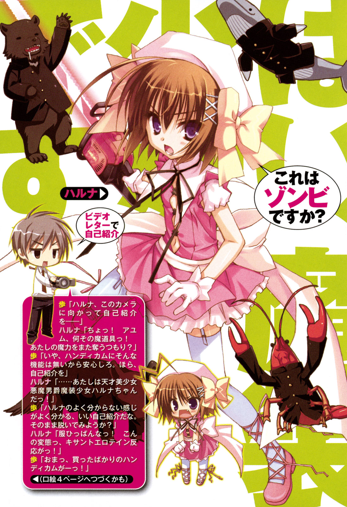

| これはゾンビですか？1 はい、魔装少女です | |
| 木村心一 | |



これはゾンビですか？１
はい、魔装少女です
木村心一
ファンタジア文庫
本作品の全部または一部を無断で複製、転載、配信、送信したり、ホームページ上に転載することを禁止します。また、本作品の内容を無断で改変、改ざん等を行うことも禁止します。
本作品購入時にご承諾いただいた規約により、有償・無償にかかわらず本作品を第三者に譲渡することはできません。
本作品を示すサムネイルなどのイメージ画像は、再ダウンロード時に予告なく変更される場合があります。
本作品は縦書きでレイアウトされています。
また、ご覧になるリーディングシステムにより、表示の差が認められることがあります。
口絵・本文イラスト こぶいち むりりん
俺がこの高校に入って、初めての夏がやってきた。「いつからが夏だ？」などという論争が毎年あったりするのだが、そんなことはどうでもいい。「暑ければ夏」それでいいじゃないか。
梅雨もすぎた快晴の空を見上げ、俺はとてもためになる教師の言説を聞き流し、授業のダルさを満喫していた。
ああ、退屈だ。素晴らしいまでに退屈だ。退屈こそが、至高の贅沢だと俺は思う。
ぐったりと机の上に倒れ込む。今は数学の授業中なのだが、そんなことは知ったこっちゃない。仕方ないだろ？ 俺は日差しが嫌いなんだから。
窓際がこれほど嫌だと思うことはない。窓際の後ろから二番目と言えば、かなりの好ポジションだ。
全く、せっかくの退屈な時間に水を差......日を差しやがって。
夜間学校だったら、こんなには困らないだろう。暑さがどうとかじゃない。
日差しが嫌なんだよ。日差しが。
ここでうだうだ言っていても仕方がない。カーテンを発明した人間に感謝しよう。お肌にも悪いという日差しをカットするために、俺は椅子を傾け、後ろで寝ている男をシャーペンで突っついた。
「カーテン、閉めてくれね？」
その男は、すーすーと寝息を立てているだけで、全く起きる気配がない。そのまま永眠させてやろうか。食うぞ貴様。
いかん、頭がぼーっとしてきた。目を細めて、その忌まわしき日差しを睨み付ける。
おのれ、太陽の光さえなければ、怖いものなど何もないのに。
さて、起きていると脳みそがカキ氷のようにあっけなく溶けてしまいそうなので、さらりとぶっちゃけます。
俺、ゾンビっす。
あ、あと、魔装少女っす。
はい。一世一代のカミングアウトでした。よし、寝るぞ。寝させて下さい。
──あと、誰かカーテンを。
十九時十二分ぐらいだったと記憶している。
その日も俺は、学校で太陽が去り行くまでのんびりと過ごし、夜を待って校門を出た。なんで夜まで待ったのかと疑問に思われるかもしれないが、仕方ないだろ？ 日差しの中を歩こうものなら、すぐさま地面に倒れてしまうだろう。
こう見えてゾンビなんだぞ？ 俺は。
学校から家までは、歩いて五分の場所にある。もちろんこんな時間に一緒に帰る好き者もおらず、一人で寂しく帰宅だ。
五分で帰れるはずだが、その日は寄り道をして帰る気分だった。
俺の家の近くに墓場がある。かなり大きな墓場で、ごくありふれたゾンビである俺は、当然その場所が大好きなんだ。
六月下旬の暑い気温に逆らおうとしているのか、ここに吹く風は涼しいものだ。星の見えない暗い空には、月明かりだけが輝いている。
シャリシャリと気持ちのいい足音を鳴らして中ほどまで進み、俺は不謹慎にも墓石の上に腰を下ろした。この石の冷たさが堪らなく気持ちいい。
月見気分で、買ってきたばかりのおにぎりを頬張る。至福の瞬間だ。ゾンビとなってからは、やけに腹が減るようになった。
寂しく見えるかもしれないが、一人でいられるってのは平和である証拠だと思う。
一人でのんびりと無駄な時間を使う。これこそが、俺にとって理想の人生だ。
まあ、そんな至福のとき。
テンションが上がっていたのだと思う。俺は、飲み干した緑茶のペットボトルを思いっきり空へ放り投げた。ペットボトルは粉粒に見えるほど天高く上っていく。
いつ落ちてくるのかを楽しみに夜空を見上げていると、何か別のものがキラリと光る。
鳥？ いやいや、それにしてはでかい。しかも二つだ。どう見てもペットボトルには見えなかった。
俺はその場から逃げ出した。といっても、慌てることと急ぐことは違う。冷静に軌道を見極め、安全地帯を割り出し、そこに移動する。
ドゴーン！ と大げさなくらいの音がして、先ほどまでいた場所に穴が開きました。
砂利だらけの地面を盛大に巻き上げ、砂塵と小石が墓石に降り注ぐ。なるほど、これが土砂降りという奴か。
俺は、二度とポイ捨てをしないことを神に誓いつつ、よせばいいのに、出来たばかりのクレーターへ戻って来た。だって気になるだろう普通。ゾンビだから、とか関係なくさ。
「いたたたたたたた～」
同人誌即売会ぐらいでしかお目にかかれないコスプレをした女の子が腰を押さえていた。身長は目測で百四十五と言ったところか。
その少女の下では、学ランを着たツキノワグマがぐったりとしている。ついでに、俺の立っている横には、なぜかチェーンソウが置いてあった。
そのチェーンソウを手に取ると、思ったよりも断然軽い。俺がゾンビだから軽いと感じるのかもしれないが。──って、そんなことよりも。
「おーい」と、腰を押さえている少女に声を掛けてみた。栗のような色をした、触り心地の良さそうな肩までの髪を振り乱し、少女はこっちを睨み付けてくる。
猫のようにとても大きくて印象的な瞳だった。その愛らしい眼を慈しむように見つめていたいと思った訳だが、どうしても目線はその上へいってしまう。
なぜなら、頭のてっぺんからピョコンと伸びる髪の毛は、俗に『アホ毛』と呼ばれる絶品の代物だからだ。
「大丈夫か？」
「あ──っ！」
口を大きく開けた少女が、何やら俺の方を指差している。何を見つけたんだ？ もしかして、俺がゾンビだってバレたのか？
「あたしの魔装錬器！ 返せっ！ 早く！ 急げ！ すぐさま刹那の内に早々に早々と即行で瞬く間に束の間に瞬時に一瞬でたちまち今すぐさっさとすぐさま返せっ！」
ずしずしと力強く砂利の地面を踏みながら、どんどん近づいてくる。
「待て。待て待て。魔装錬器ってなんだ？」
すごい剣幕で砂利の地面を踏みしめるたびにてっぺんの『アホ毛』が揺れる。それにしてもなんて格好だ。その見るからに恥ずかしいコスプレ衣装が、すーっと消えていき、見る見る白い肌が露わ......は、裸っ？
「あんたが持ってるそれだ！ それがないとあたし、攻撃魔法が使えないんだからな！」
彼女は、自分の服が消えてしまっていることにも気づかないほど怒っているようだ。
それにしても、なんとも小ぶりで可愛い乳だろう。最高っす。母さん俺、今生きていることを実感したよ。......死んでるけど。
「これか？」
手に持っているチェーンソウを差し出すと、それを奪い取ろうとする。
少女がチェーンソウに触れるとバチっと静電気のような火花を放ち、その白い手はチェーンソウに触れなかった。
「痛っ！ なんで！」
何度も何度もチャレンジするが、俺が持つチェーンソウに触れない。火花が飛び散るだけだった。強引につかみ取ろうとすると、すごい電撃に変わる。
「そんなことより、着替えとかないのか？」
「ほえ？」
俺の言葉を頭の中で反復しているのだろうか。二秒ほどの間を置いたあと、頬や耳どころか顔全体、そして全身が赤く染まっていく。
「こっち見んなっ！ こんの変態っ！ エロスペシャルがっ！」
「エロスペシャルて......ウォーズマンの必殺技みたいに言うなよ」
「うっさいっ！」
問答無用で俺の顔面を思いっきり足蹴にすると、近くの墓石の陰に隠れてしまった。
そんな少女の下にいこうかと脳内で模索している暇は、俺には与えられなかった。
三メートルを超える大きさの学ランを着たクマがぐっと両膝を曲げ、砂利を巻き上げながら跳び上がったんだ。あの少女と共に落ちてきたもう一つの物体だ。そりゃあゾンビでもビビるだろう？ いきなりだからな。
空高く舞い上がったクマが俺に飛び蹴りをかますまで、わずか一秒もなかったと記憶している。見事な早業であった。
感心している場合ではない。頬を肉球のついた足で思いっきり蹴り飛ばされ、墓石に頭をぶつけた。
──いやはや、ゾンビで良かった。痛みも全くないね。たとえどっかの角に足の小指を強打しようが痛くない体なんだ。何せ、死んでるんだから。
起き上がり、クマと対峙する。チェーンソウは今の一撃で手から離してしまい、近くに落ちていた。それを裸の少女が恐る恐る触ろうとすると、やっぱりバチっと火花が飛び、拒絶された。
「一つだけ聞くが、このクマは何だ？」
そんな少女を横目で見ていた俺は、クマに目を戻す。クマはどこで覚えたのか、中国拳法のような構えをとっていた。
「そいつは凶悪女子高生クマッチだ！ 早く逃げろっ！ じゃないと、あんたなんかすぐに殺されちゃうんだからなっ！」
驚きの事実。なんとこのクマは女子高生......なのか？ 学ラン着てるんだけど。......まあ、学生ではあるか。そこは七百歩ほど譲るとして、
「凶悪そうには見えんが？」
目の前にいるクマは、ぬいぐるみのそれと同じく、つぶらな瞳をしている。毛並みも綺麗だし、可愛いぞ？ 動かなかったら、高級なぬいぐるみと変わらないぐらいに。
「ばか！ ほんとばか！ あんた相手の力量も測れないのか？ これだから、この世界の人間は！」
少女は「全く」と呆れた声で続けていた。お前は俺の力量を測れてねえよ。
強そうには見えないぬいぐるみのような可愛らしい顔をしたクマが口を開く。そして、牙を剥き出し月に向かって吠えた。──野獣の叫び。
大気を震わせるその咆哮に、俺も少女もビクリと体を強張らせた。クマの口からは障気のような紫色の吐息が煙のように揚がっている。可愛いなんて言葉は失礼だったな。
俺は拳を軽く握り、目を細めた。
クマは大きく息を吸いながら腰を落とし、先ほどと同じく紫色の障気を一息で吐き出すと共に大地を蹴り、高速で距離を詰めてきた。
裏拳。それを俺は裏拳で受ける。ずっしりと体重を乗せた素晴らしい一撃だ。続いて回し蹴り、下段からだんだん上がってくる三段蹴り、肩からぶつかるような体当たり。を流れるように繰り出す。──かわせねえよ、そんなの。無理無理。
あっけなく吹き飛ばされた俺は、少女が隠れていた墓石に当たり、墓石が粉々になる。
「うわあ！」と声を上げたのは少女だ。俺に痛みはないからな。
「なんであたしんとこにくるんだ！ うっ！ 見るなって言ってるだろっ！ このエロロ軍曹っ！ 死んじゃえっ！」
赤く染まった顔をさらに赤くしてぽかぽかと殴ってくる。こういう態度は新鮮だ。
「学ランでいいか？」
「知るかっ！ は？ 何言ってんの？」
小首を傾げている。丸い大きな目が二回ほど瞬いた。
「お前の着替え」
それだけ言うと、俺は体を起こし、砂利だらけの地面を蹴った。
俺は首めがけて手を伸ばす。交差する瞬間、体毛に覆われた肉球付きの手が俺の手に巻き付く。
と次の瞬間、足を払われ砂利に背中を打ちつけていた。
このクマは指もないのに投げ技を使うんだな。ついでに、倒れ込むようにして俺の顔面へ肘打ち。これがまたすごい威力で、鉄球でもぶつけられたような、すごい音がした。地面に頭の形をした穴が空くんじゃないかって思ったね。
拳を打ちつけてやろうとしたら、瞬時に飛び退いて、またどこぞやの中国拳法のように手を水平に伸ばす構えで俺を待つ。
俺はゆっくりと立ち上がって砂利を払い、再度拳を構える。
「わかっただろっ！ あんたなんかにメガロは倒せない！ 早く逃げろよなっ！」
墓石の陰から野次が飛ぶ。──まあ、黙って見とけ。
墓場を見守るようにそびえる巨大な一本の木が風に揺れ、ざわざわと空気を震わせている。俺にはそれが、歓声のように聞こえた。
もう一度、俺は距離を詰める。真正面から、顔面を鷲づかみにしてやるつもりだ。
再びゾンビの腕にクマの手が絡みつく。だが、今度は止まらない。逆に学ランの袖を掴んで引き寄せ、もう一方の手で、巨大な鼻をつかむ。
月夜に咆哮するクマの頭を両手で持ち、首を回す。ゴキャっという効果音がよく似合うだろう。クマの首は涎を夜空に飛ばしながら、数回転して止まる。そのあと、その三メートルほどの大きな体は、ズシンと音を立てて倒れ込んだ。
人間は力を一○○％使えないっていう話を聞いたことがないだろうか？
一○○％の力を出してしまうと体が耐えられなくなるので、脳が勝手に力をセーブするんだと。ほんとの危機が迫ったときに、たまにその力を使うことがあるらしい。火事場のなんとかだ。
で、俺だが、体が耐えられたりする。勝手に力をセーブして欲しいくらいだ。一○○％どころか一二○くらい出せるぜ？ てか、出てるぜ？ もっと出せるぜ？
だって俺、ゾンビですから。
筋肉が悲鳴を上げようが、痛みなんか感じない。しかもかなり頑丈な体になっている上に、すぐに治っちまう。まあ、力を出しすぎると反動で腕とかが吹き飛んでしまうが。
とか言っている間に凶悪女子高生とやらの巨大な学ランを脱がすことに成功し、それを少女に手渡した。
少女はその大きな黒い服を奪うように取ると、
「こっち見るなっ！」
憤怒の表情で一言言い放ち、俺はそれに従った。くるりと振り返り、もぞもぞと着替えの音を聞きながら、
「で、あのクマは何なんだ？」
「さっき言ったじゃんかっ！ 凶悪悪魔男爵クマッチだっ！」
かわっとるがな。
「それにしても、Ｂ級メガロのクマッチを一撃で倒すなんて──」
「一撃も何も、普通首が一回転したら死ぬだろ？ あれで死なない奴は、今のところ一人しか知らないね」
もちろん、それは俺自身だ。と心の中で付け加える。
着替えが終わったようで、シャツがついついっと引っ張られた。
振り向くとそこには、袖を何回も折りたたみ、地面を引きずるほどブカブカの学ランに身を包んだ美少女が立っていた。
大きな目は睨み付けるような感じで、口もむすっとしている。あと、アホ毛は何かの電波でも受信しているのか、やけにピコピコと揺れていた。
「あたしの魔装錬器、取って」
すぐ側にあるのだが、恐らくまだ触れないのだろう。指示に従い拾ってやる。俺が触っても電撃はなかった。
「全く。なんでこのあたしが、こいつに拒絶されなきゃなんない訳？」
と、俺に聞かれても「さあ？」と首を捻るしかないだろ。
「よし、......ちょっとあんたん家連れてけ。電話しなきゃ」
「電話？ 電話なら......ここにあるぞ？」
ズボンのポケットから携帯電話を取り出す。さっき墓石に思いっきりぶつかったが、どうやら壊れていないようだ。
「何よその魔道具......」
黒い携帯電話を前に、一歩あとずさり、体を抱くような仕草を見せた。携帯電話を知らないらしい。突き出すように前に出すと、避けるような動きを見せる。ちょっと面白い。
「ただの電話なんだがな」
「ほんとにか？ あたしを騙したら、そこのクマッチみたくなるからな」
倒れているクマを指差す。クマはキラキラと白い粒子のようなものに変わり、風に乗って粉々になりながら消えていった。──こうはなりたくないね。
俺は「わかったわかった」と軽くあしらい、電話の使い方を説明すると、「ふんふん」と意外にも素直に頷いて聞いてくれた。
そして使い方がわかるや否や、百人一首の名人のような機敏さで電話を奪い、どこかに掛ける。
プップップップップ......プルルルル、プルルルル、プ──
「あ、大先生ですか？ あたしです。リフレイン年ライジング組のハルナです！」
どうやら繋がったようだ。
さっき「この世界の人間は」などと言っていたため、相手は恐らく別世界。電波って、世界を超えるんだな。それにしても『リフレイン年ライジング組』はそこはかとなく語呂が悪い。
「え？ あ、まだ見つかってません......すみません。それよりですね。実はミストルティンがあたしを拒絶するんです」
どうやら、あのチェーンソウはミストルティンという大層な名前が付いているようだ。
「え、はい。こう、ばちばちっと。あ、はい。魔力枯渇ですか。なるほど──まさか！ こんな世界の人間がそんな魔力持っている訳ないじゃないですか！」
お？ 何やら驚いている。そこらをウロウロとうろつきながらアゴに手をやり、考えている様子だ。
「なるほど。確かに、それしかないですね。わかりました。とりあえずこの世界で出来ることを先にやります。帰る手段は、また──はい。すみません。お忙しいところを──はい。ではまた」
といった感じに話は進んだようで、まあ、よくわからんのだが、終わったのならケイタイを返せ。手を差し出すと、ばしっと乱暴に携帯電話を手渡された。
「あんた、あたしの魔力奪っただろ」
じっと上目遣いで見つめられる。なぜ俺は睨み付けられているんだろう。
「なんのことだかさっぱりだ。残念だが」
「あんた何者？ この天才美少女悪魔男爵ハルナちゃんの魔力を根こそぎ持っていくなんて、ありえないくらいの魔力がないと出来ないって大先生が言ってた！」
お前も悪魔男爵なのかよ。この子はよっぽど悪魔男爵が好きなんだな。
魔力がどうとかは俺にはわからん。だが、それに詳しい人物を一人知っている。そいつは恐らく今、俺の家でのんびりとお笑い番組でも見ているだろう。
さて、どうする？ 俺がゾンビだなんてことを知ってるのは、俺と俺をゾンビにした奴だけだ。ま、この『天才美少女悪魔男爵ハルナちゃん』になら、言ってもいいかもしれないね。
「さっさと言え！ あんた何者？ まさか、この世界の魔法使い！ あ、あたしを滅多刺しにするつもりだな！」
お前の中の魔法使いは、どんだけ残虐なんだよ。
「俺は、ゾンビだ」
「ほえ？」
「ただの生きる屍。死人だ」
「不死者！ 不死悪魔だん「悪魔男爵ではない。間違いなく」」
途中から台詞を被せた。何でもかんでも悪魔男爵にするな。
「そう。......なるほど。死人なら剣で刺されても──」
なぜそんなに剣で刺したがるのだろうか。ん？ 待てよ。こいつ、もしかして俺が刺殺されたことを知ってるのか？
最近、この町で連続猟奇殺人事件が起きているんだ。俺もそれに巻き込まれて死んでしまい、まあ、今こうやってゾンビをしている訳だが、俺はその犯人に剣で刺し殺されたんだ。事件のことを知っていたとしても、凶器が剣だとわかるだろうか？
もしや俺を殺したのはこいつでは......ないか。態度がおかしすぎる。
こいつは一体、何をどこまで知ってるんだ。
「おい、お前殺人事件と関係があるのか？」
「──あんた、責任とって貰うからなっ！」
パーフェクトにスルーされた。まあ、いいや。あとで聞こう。
「責任、とは？」
「あたしの任務は、この腐った世界でアーティファクトを探し出すこと。それと、魔装少女としてこの世界に現れるメガロを倒すこと」
「あー、『魔法少女』ねー。そうじゃないかと思ってたんだ」
「はあっ？ あたしは『魔装少女』だ！ そんな陳腐なもんと一緒にすんな！」
「違いがわからん。で、メガロってのは、あのクマのことだな？」
「そう。さっきの恐ろしい奴だ」
「なんであんなのと戦ってるんだ？」
ゾンビでも骨が折れる相手だ。こんなクソ生意気な美少女じゃあ命にかかわるだろ。
「メガロってのはね、あたしの世界を壊そうとする害虫だ。一匹残らず駆逐しないと、あたしら魔装少女に未来はない。つまり、あたしは戦士な訳。すごいっしょ！」
「なるほど、天敵って奴だな。お前の世界を壊したいんなら、なんでわざわざこんな世界に現れるんだ？」
「じゃあ聞くけど、あんたは自分の家で戦争がしたいのか？」
だからって他人の家の庭でやるなよ。まあ、人間にとっても脅威なモンスターを倒してくれるなら、ありがたいけど。
「とにかく、あたしは戦えなくなったから、あんたがやれ！」
「は？」
「あんたは今、現時点をもって魔装少女だっ！ 光栄だろっ！」
びしっと細い人差し指をさされた。これは決定事項なのだろうか？
「待て待て。その、まほ、魔装少女──だっけ？ 俺は少女どころか男だぞ？ やめたほうがいいって」
「知るかっ！ やれって言ってるだろっ！」
えー、聞く耳は無しかよ。今『親の顔が見てみたい』という言葉を思い出した。
「考え直せって。重要なことなんだろ？ そんな簡単に──」
「その間......超スーパー究極ウルトラ不本意だけど、あんたん家に居させて貰うからな」
悔しそうな表情で、視線を逸らしながら呟く。
──勘弁してくれ。こんな騒がしいのが家に来たら俺の孤独で退屈な日々はどうなる？ 考えただけで恐ろしい。
「......あんた、名前は？」
「歩だ。相川、歩......ていうか、やっぱり、もう少し考えて──」
「......アユム。そう、アユムだな」
聞く耳がないにも程があるだろ。『馬の耳に念仏』って言葉を作った奴の気持ちがわかった気がする。「来んな」と言っても、都合の悪い言葉は耳に届かないんだろうな。
そもそも、今回は俺のせい......？
──まあ、いい。俺のせいなんだから、泊めてやるくらいはしてやらないとな。そうだ。人生、諦めこそが肝心。そう割り切ろう。
「わかった。その......魔装少女とやらは、やってやる」
俺の譲歩を待っていたのだろう。ピョコンとアホ毛を弾ませ、したり顔で頷いた。
「そうと決まれば、早速魔装少女になる練習だ！」
拳を天に突き上げ、小躍りしそうなステップで歩み出す小さな女の子の姿に、俺は頭を抱えた。
「ただし、一つ条件がある」
「何？ 変なことなら、蹴るからな」
「俺のことはお兄ちゃんと呼んでくれ」
いやはや、思いっきり蹴られた。ミルコ・クロコップばりのハイキックだったよ。
とまあ、こういう訳で、どうにも魔装少女とやらにされてしまった。
男なのにな。ていうか、
ゾンビなんだけど？
目が覚めると、すでに数学の時間は終わっており、次の授業が始まっていた。というより、その授業も終わりのようだ。
ふと左を見るとカーテンが風に揺れていて、暑いからなのか窓は開いている。誰かは知らんがナイスカーテン。そんなことをぼーっと考えていると、チャイムが鳴り始める。
次は──おう、昼時ではないか。弁当、弁当っと。
さっと取り出したるは手作り弁当だ。この弁当を作ったのは、何を隠そうあのハルナちゃん。そう、天才美少女悪魔男爵のあれだ。
「あたし、卵焼きには自信があるんだ！」
とか言いながら、意気揚々と料理をしてくれた。にんまり。最高のゾンビスマイルで弁当の蓋を開ける。すぐに、俺のゾンビスマイルは困惑に満ちていった。
オチが用意されている。そんな予感はしたさ。
「勘弁してくれ」
頭を抱えて呟く。これならご飯がいい。白ご飯にふりかけのみの方がマシだ。
俺の弁当箱は、黄色一色だったんだ。
『あたし、卵焼きには自信があるんだ！』
それはよくわかった。が、自信ありすぎだろう。卵焼きのみかよ。
この緑色でギザギザしたビニール製の仕切りはなんのためにあるんだ？ 少なくとも、卵焼きの周りを牧場の柵のように囲って飾るためではなかったはずだ。
「相川。お前が普通の弁当ってめずらし......」
そこに、一人の男が現れた。名前は織戸。茶髪でツンツン頭にメガネを掛けた、どこにでもいるただのウザいクラスメイトだ。
身長も体重も並で顔立ちもそこそこの、特徴がない男子生徒。自分でもそれを理解しているのか、唯一のトレードマークであるツンツン頭はいつも手入れしている。保育園の頃からの腐れ縁で、何かにつけて俺に付きまとう困った奴さ。
「うわあ......」
織戸は俺の弁当を見てマジで引いたようだ。
頼むから、その死に逝く動物を見るような哀れみの目はやめてくれ。
「さすがにそのボケは体張りすぎだろ？ やりすぎは笑えねえ」
首を横に振りながら、織戸は隣の席から椅子を引っ張ってきて、ごくごく普通の弁当箱を俺の机の上に広げた。
「俺、卵焼きが好きなんだ」
そう言い訳しながら、一口食べようとする──が、箸が付いてねえ。
おいおい、なんて凡ミスしてくれてんだ、あの悪魔男爵め。俺がコンビニマニアで割り箸のストックがいっぱいあったから良かったものの。
「なあ、相川」席を立とうとした俺に、織戸が声を掛けてきた。
「ん？ なんだ？」
「いつからだっけか？ 相川、自分の席で食えよって言わなくなったよな」
それは、何回言ってもお前が俺の席で飯を食おうとするから、諦めたんだ。
「じゃあ、自分の席で食え。俺は一人で居たいんだ。こっちくんな」
「まあ、いいじゃねえか」
なぜか満足げに笑顔を見せやがる。ああ、ほんとにウザいなこいつ。
教室の後ろにある、カギも掛けられない個人ロッカーから割り箸を取ってきて、目の前に広がる黄色い悪魔と戦うことになった。
怖い。俺はゾンビになってから色んな生物と戦ってきたが、そんなモノより、これはとても恐ろしい。きっと、何かあるはずだ。端の方にすっと箸を入れる。深呼吸もほどほどに、一口分を口に運び、パクリと一気にいった。
「ふむうっ！」
思わず、変な声が漏れた。
うまい！ なんてうまさだ！ 口から宇宙とかが出てきそうになるくらいのうまさだった。あいつは特級厨師か何かか？ 卵焼きにこれほどの感動を覚えたことはない。
だが──だ。
弁当一つ分はいらねえ。てか、うまい分だけ白いご飯が恋しくなる。おっと涙が溢れてきそうだ。色んな理由で。ゾンビの目にも涙とはこのことさ。──そこで提案。
「おい織戸。俺は今、とてつもない卵焼きを持っている。少しでいいから、その日本人の魂と交換してくれ。マジで」
「はあ？ だったら最初から飯いれてこいよ。変なボケをするから──」
なんだかんだ文句言いながら、ちゃんと交換に応じてくれた。
口の中に銀河が広がるほどのうまさを誇る卵焼きに、織戸は程なくして目を丸くした。「なんだこりゃ」と言いたげな顔を俺に向け、席を立つ。
「おい！ 相川の卵焼きがすごいぞ！ 今なら白飯と交換してくれるそうだ！」
おいおい織戸君。大げさなことにしないでくれたまえ。ゾンビって結構、静かに暮らしたい小心者なんだぞ。
その言葉を聴き、何人かが俺の許へとやってくる。やれやれ仕方がない。卵焼きはアホほどあるのだ。分けてやろうではないか。
最初はそう思っていたが、クラス中に飛び火した『相川さん家の究極卵焼き』は大盛況で、いつの間にか黄色一色の弁当が、ご飯のみが詰められた弁当と化していた。所々ふりかけが付いているのは各家庭の味なんだろうよ。
確かにさっき言った。『白ご飯にふりかけのみの方がマシだ』ってな。しかしながら実際そうなると、存外悲しいものだ。
よもや、今世紀最大の卵焼きが全て白飯に変貌するとは。
でもな、「なんてことをしてくれてんだ」なんて言えなかった。
「おいしいおいしい」と女子たちが笑顔を見せてるんだ。言える訳がない。
ゲームとか映画でも、たまにゾンビが空気を読むだろう？
──俺だってそうさ。
午後の授業も無事に終わりを迎えた。......寝てたけど。
昼過ぎのあの日差しは反則だ。死ぬところだったよ、マジで。あとは完全に日が沈むのを待ってから家に帰るだけだ。
夕焼けに照らされたグラウンドに目をやる。陸上部が、公園で遊ぶ子供ようにオレンジ色の運動場を駆け回っていた。何がそんなに楽しいのか、みんな笑顔がこぼれている。スポーツに打ち込む引き締まった体つきの女子を見ていると、ブルマを考案した人間の気持ちがよくわかる。
現在教室にはほとんど生徒は居ず、いつものように俺と織戸が最後になりそうだ。ちゃんとした青春を送っている生徒諸君は、みんな談笑しながら教室をあとにした。
織戸ももう帰るらしく、カバンを背にして立ち上がり、大きくあくびを一つ。
「相川。そういやお前、最近帰るの遅いな。学校で何やってんだ？」
「寝てる」
「あんだけ寝てたのにか？」
織戸はケラケラと笑いながら俺の背中をベシベシと叩く。あれは寝ていたというより太陽と戦って倒されたのだが......あまりかわらんか。
「家が近いから、別に大丈夫だろうけどさ。最近、殺人事件が多いじゃん？ 気ぃつけろよ？」
ガラにもなく俺を心配だという。ふっと鼻で笑ってしまった。確かに最近はバラバラ殺人が頻繁に起こっている。恐らく、同一犯だ。
そして、俺を殺したのもそいつだろう。今となっては、俺が殺す側だが。
「まあ、俺は殺人犯に会いたいけどね」
「そうそう、忘れてた。会いたいと言えばな、相川。俺の妹の友達なんだけどな、その連続殺人事件に遭遇したらしいんだ。京子っていうんだが、知ってるか？」
へえ──え？ 生き残りがいるのか？ おいおい。あの連続殺人は生存者が居ないんじゃなかったか？ まあ、俺も生存者の内に入るが。
「知らない名前だな。どんな子だ？」
「歳は、妹と同じだから十四だな。中学生にしては少し背が高くて、でも童顔で、胸がデカかったな。俺の妹の数倍可愛い子だ」
「心当たりはないな。その、京子ちゃんが俺になんの用だよ」
「ふむふむ、相川は知らないが、京子は知っている。つまり、一目惚れと見た！」
にへら。と、バカのような笑顔を作る。メガネの奥にある目は変態のそれだ。
「それだけで決め付けるのは、どうかと思うが」
「どれだけお前のことを聞かれたか......。絶対お前に恋してるって！ 両親をなくして可哀そうな中学生の女の子に、好きな男を会わせてやりたいこのダンディズム。わかんねぇかな～。ま、会うだけでいいから、頼むよ、な？」
なんとウザい奴だろう。手を合わせてはにかむその笑顔は、二十メートルぐらいは殴り飛ばしたいと思わせる。いや、そこはどうでもいい。手がかりだ。殺人事件の手がかりがすぐそこにある。
「全然ＯＫだ。俺もその子に興味がある」
「......相川......お前、やっぱりロリコンだよな」
「断じて違う。性的意味で興味がある訳じゃないんだ。お前こそ、手を出してんじゃないのか？」
「おい相川、お前と一緒にすんなよ。俺は大人な女性が好みなんだ」
「俺はどちらかと言えば貧乳派というだけであって、ロリコンじゃない」
「わーった。わーった。そうムキになんなよ。ロリコン」
「よし。お前が今、一番好きなものを教えてくれ。──全力でバカにしてやるから」
「とにかく、だ。今日にでも会いたいってうるさいんだ」
「わかった。明日の夕方でいいなら、会いにいかせて貰うよ」
「いくと言えば、最近相川ん家いってねぇな。昔はあんなに通いつめたのに」
来てくれと言った覚えは一度もない。......っておいおい、変なことを思い出すな。
「久々に寄っていいか？」
ほらみろ。こうなるじゃねえか。──困る。今来られるのは非常に困る。いや、今どころかこの先永遠に困るだろう。
「ダメだ。ほら、......色々大変なんだよ。一人暮らしってのは気楽なもんだが、忙しいんだよ」
何が大変なんだ？ と言われればそれで反論も出来んが、
「それは仕方ないな......」
織戸は悲しそうな瞳を窓の外に向けた。外からクラブ活動で汗を流す高校生たちの、なんとも楽しそうな声が聞こえる。
「すまんな。そうだ、今度ボウリングでもいくか？ 今の俺には勝てんだろうがな」
だって俺、ゾンビなんだぜ？ というのは心の中の声だ。
「よっしゃ！ 久々に漫画本一冊賭けて勝負だ！ 明後日いこうぜ！」
腕をぐりんぐりんと回して、織戸が口の端を吊り上げて笑う。この男、ボウリングが大好きなのである。
こうして、その後も他愛ないお喋りを楽しんでから、織戸は一足先に退室した。足音がうっすらと消えていくのを聞きながら、窓の外に目をやる。
黄昏に染まる空は......と、使ってみたかった言葉を出してみたが続く言葉が何も出てこない。そういうときって、ありますよねー。
いやあ、実にいい天気だ。クソ喰らえってなくらいにな。早く太陽落ちろよ。
「ん？ なんだあれ？」
キラリと光ったと思ったら、耳障りな激しい音を立てて窓を破り、何かが教室に突っ込んできた。よく見なくてもわかる。それはザリガニだった。学ランを着た、人よりも少し大きいサイズの──って、こいつでけえな！
「魔装少女の魔力を感じてきてみれば......」
ザリガニは学ランに降りかかった窓ガラスの破片をハサミで叩き落としながらキョロキョロと教室内を見回す。そしてそのクリクリとした可愛らしい丸い目を俺に向け、
「魔装──少女......？」
どうにも腑に落ちないと言った感じに首を傾げる。人間味溢れる仕草だった。
「何者だ？ 男の魔装少女とは珍しい。それに、ずいぶん小さな魔力だ。貴様、本当に魔装少女か？」
「否定したいんだが、一応魔装少女ということになっている」
「......まあいい、この辺りには複数の反応があるな。そちらに期待しよう」
なんつったっけ？ こいつらの総称。
「ん？ 一つはここに向かっておるな......好都合だ。魔装少女を二人も殺せるとはな」
そうそう、メガロだ。こいつらの総称。よく覚えていたな、俺。
そんなとき、ゆらゆらと風に揺れるカーテンの横に、それは現れた。
Ｔシャツにストライプのパンティー一枚。手にはチェーンソウという格好で、ハルナは開いた窓から現れた。
夕暮れの運動場を背景に、風に揺れるシャツとアホ毛。その姿はとてもファンタスティックで、コミカルだった。
「アユム！ 何やってんの！ 早くメガロをけちょんけちょんにしろ！」
どういう状態のことを『けちょんけちょん』というのかは俺にはわからないが、それ以上になぜハルナがこんな姿でここにいるのかがわからなかった。
「ふぉっふぉっ！ これはこれは！ またハズレだったか！ 残りに期待させて貰うとしよう......貴様らを殺してな！」
ザリガニ野郎はハサミをガチガチと動かしながら軽快に笑った。お前はバルタンかよ。あ、ハサミの形違うか。
「アユム、早くやっちゃえ！ って、こらっ！ こっち見るなっ！」
あからさまな苛立ちを見せたハルナの言うままに、俺は席を立ちザリガニと相対した。ハルナが赤い顔をしているのは、どうやらパンツが見えてしまっているのがかなり恥ずかしいから、らしい。じゃあなぜその格好で来たんだ？ お前は。
「そんなことより、この教室はどうなる？」
「はん。そんなのあんたが直せる。魔装少女なんだから」
「それなら安心だ。とりあえず、あのザリガニだな？」
「そう、あいつこそダブルＡ級メガロ、魔法使いザリー」
あいつ、魔法使いなのかよ。そうは見えんが。
「違った。極悪非道のザリーだったかな？」
だいぶそれっぽくなったな。何をどう間違えたんだ？ お前は。
「ふぉっふぉっふぉ！ さあ、始めようかっ！」
突如、ザリガニを中心にぶわっと生暖かい一陣の風が吹いた。
すごい量の屁をしたようには見えない。何かを解放したのだろうか？ 体にまとわりつくような、紫色の嫌な風だ。すると、ハルナが「うくっ」っと低く声を出し、体を抱く。今の風を受けて、俺と同じように嫌悪感を抱いたのだろう。
「何、これ......嘘」
「どうした？ 大丈夫か？」
「ア、ユム......何このゾクゾクした感じ......」
ザリガニが一歩こちらへ近づく。ハルナが目を閉じ、ビクリと肩を上げた。
「お前、もしかして怖いのか？」
「ふ、ふざけんな！ あたしが、メガロに恐怖するなんて......そんな──」
そこで、ハルナの言葉は切れた。力が抜けたのか、ペタンと座り込んでしまう。眉間にシワを寄せ、奥歯を噛み締め、震えを抑えようとしていた。
とりあえず距離を詰めて、あのときのクマにそうしたようにザリーの首を狙った。
が、俺の手首から先はザリーの首を捉える前に地面に落ちた。血が滴り落ちる。
「ふぉふぉう？ 見かけによらず、なかなかやるな......男の魔装少女よ！」
目を大きなハサミで押さえながら、ふぉっふぉっふぉと笑う。
「アユム！」
可愛い叫びが教室に響く。ハルナが心配するのも無理はない。俺の手首から血がしたたり、手首から先は床に落ちてしまっているんだから。いやあ、まいったね。ザリーさんは動きが速い速い。簡単に挟まれてしまったよ。かわりに片目を潰したけど。
「右手は困るな......せめて左なら良かったが」
利き腕が使えないのは大変困る。ポタリポタリと血の音が時を刻み、ザリーさんと一緒にじりじりとすり足。ザリーさんも俺と同じことを思っているだろう。
──隙がない、とね。下手に動いたほうが負けだ。どうしたものか。
「アユム！ さっさと魔装少女になれよな！」
いきなりハルナがチェーンソウを投げ渡してきた。おいおい。それを取ろうと動いた瞬間に俺はハサミで真っ二つだっつーの。──空気読めよ。
後ろに跳びながら、そのチェーンソウを左手でキャッチする。もちろんザリーさんは距離を縮め、ボディブローだ。ハサミの先で腹を貫かれ、口から血反吐が出た。
前屈みになった瞬間に、ザリーの頭突き。俺は鼻血を噴出しながら黒板に背中を打ちつける。全力で振ったヒザ蹴りは空を切り、ザリーのエルボーがボディを抉る。
クソ、このザリガニ、動きが速すぎる。
「呪文を唱えろ！」
ハルナの命令が耳に響く。無理無理、余裕ナッシングだ。地味に長いんだよな、呪文。一夜漬けで覚えさせられたんだ。
ハサミで横殴りにされて、俺は教室の机や椅子を散乱させながら転がった。
「魔装少女になるのだけは、嫌だったんだがな」
だが、それしかないようだ。このザリガニ、強い。『クソ』がつくほど強い。魔装少女にならないと多分勝てん。
意を決して、俺は叫ぶ。ザリーさん、ちょっとだけ待っててくれ。
「ノモブヨ、ヲシ、ハシタワ、ドケダ、グンミーチャ、デー、リブラ！」
すると、どうだろう。まず俺の制服がはじけるように破け、光が集まってきた。もうこの時点で恥ずかしさは頂点を極めている。
光が一つに集まり、俺の体をなんの生地で出来ているのか疑問の残るコスプレ衣装がコーディネートされる。それはハルナが出会い頭に着ていたものと同じで、下はもちろんスカート。ハルナが穿いていれば確実に可愛らしいパンツが丸見え──だから嫌だったんだ。
体に力が溢れてくるようだった。自分でも鳥肌が立つほどの力。いや、この鳥肌は自分のこの格好に対してかもしれない。
しかし、やれやれだ。これならなんとかなる。そう思えてきたね。さすが魔装少女の力と言ったところだろう。
魔装少女となった俺を、ザリーはかなり警戒しているようだ。ハサミの手をボクサーように構え直し、じっと俺の動きを窺っている。
「こらアユム！ 早く......早く行けよなっ！」
ザリーを指差し、アホ毛ピコピコさせながらハルナが叫ぶ。はいはい。いきますとも。
左手に持つチェーンソウを大きく振りかぶる。それに合わせてザリーの手が動いた瞬間に、俺は手首から先のない手で右ストレートを叩き込んだ。ついでに蹴りをお見舞いし、廊下へと吹っ飛ばした。
廊下の壁にもたれかかるように倒れ込むザリーに、チェーンソウを振り下ろす。魔法の力なのかチェーンソウは赤く発光しながら勝手に歯が動き出した。
さすがにチェーンソウは防御される。ハサミでうまく挟み込まれてしまったのだ。そのまま殴り飛ばされて、また一定の距離から出方を窺う形になった。
「ふぉっふぉっ。打たれ強い奴だな。私はこれまで六人の魔装少女を殺したが、貴様が一番厄介だ。それに......奇怪だ」
ザリーはふっと鼻で笑うような音を立てた。
「それはどうも。奇怪なのはお互い様だろ？」
ピリピリと廊下の空気が震えている気がする。生死を賭けた、最高の緊張感。といっても、俺はすでに死んでいるけど。
狭い通路では、真っ直ぐ正面から戦うしかない。戦術なんてものは何にも必要ないさ。
ザリーの右手が動いた。前に突き出すような形だ。
そして、その大きなハサミが、飛んだ。
「うわっつ！」
そりゃあビビるだろ。ハサミって切り離し可能だったか？ ミサイルのように飛ぶそれを横に跳んでかわそうとしたのだが、俺は気づいてしまった。
俺が情けない声を出した瞬間、背後から同じような情けない叫びを発した人物がいたんだ。ちらりと首を向けると、廊下の端、階段を上がったところに一人の男。
──織戸だ。
まあザリーがきたのはこいつが去ってから大して間もないときで、教室から騒音が聞こえていたら何があったのだろうと思うのは全くもってあり得ることで、いつこの現場に戻ってきても不思議ではない。
なんてことを考えている俺の体に、ハサミがぶつかった。トラックに轢かれるとこんな感じか？ すんごい衝撃だった。
あっけないほど簡単に体が宙に浮き、廊下の端まで吹き飛ばされ、ハサミはザリーの元に戻った。魔装少女になってなかったら、体が千切れ飛んでいたな。
「相川......」
織戸が目を丸くして俺を見ている。足や手は震えており、今「逃げろ」と声を掛けてもすぐには動けないだろう。
「何だよ、その格好......笑えねぇよ」
おおっと、予想外。まずザリガニについてだろ？ 俺のこのコスプレに疑問を抱く気持ちはよくわかるが、それよりもザリガニだろ？ 日常に、あんなのいないんだからさ。
「早く逃げろ。殺されるぞ」
俺の忠告が聞こえていないのか、織戸は人形のように固まっている。まずい、こいつは俺とは違って、攻撃を喰らったら死ぬんだぞ？ ──ゾンビじゃあるまいし。
「おいハルナ！ 一般人がいる！ 頼む！」
教室にまだいるであろう美少女に、俺は呼び掛けた。ちらりとザリーのつぶらな瞳が教室の方を向く。──いかせるかよ。
俺は廊下を踏み潰すくらいの気持ちで強く踏み切り、距離を縮めた。
飛び蹴りから入り、キュイイインと音を立てるチェーンソウを振り回す。ザリーさんがハルナを狙わないために、だ。そのまま廊下の奥まで追いやるように半ば強引なタックルをかまし、またチェーンソウを振り回す。
ザリーさんはエビのようにピョンピョンと後ろに飛びながらチェーンソウをかわした。
「ハルナ！ 早くあいつを頼む！」
「うっさい。わかったから、あたしに命令すんな」
寒気を抑えているのか、腕をさすりながら、ゆっくりと教室から出て行く。
──頼んだぞ。ハルナ。
脇腹に裏拳ならぬ裏ハサミが入る。よそ見していた俺が悪い訳だが、内臓潰されたかも知れんな。
ザリガニの口が微笑を浮かべている。この野郎、勝ち誇りやがったな。俺はハサミをつかみ、捻り上げながらザリーの巨体を引き倒す。
馬乗りになって、ルビー色の光に包まれたチェーンソウをザリーの襟元に当てた。
「甘いわっ！」
ザリガニの足は二本ではなかった。学ランから突き出た何本もの足が俺の体を貫く。痛くはないんだが、なんかこう、気分が悪い。さすがに体の中をぐりぐりされるとね。
「ふぉっふぉっふぉっふぉ！ 死ね！ 魔装少女！」
「あいにくだが、俺はすでに死んでるんだ」
チェーンソウが音を立ててザリガニの首を削る。ザリーさんは殺したと思って気を抜いてしまったのだ。よくいるんだよ、こういう奴。
メガロ特有の、可愛らしいくりくりとした目が驚愕に見開かれている。ザリーさんは震えるハサミを俺へ向けた。さっきの、すごい勢いでハサミを飛ばす奴をやる気のようだ。
──だが、もう遅い。
切り取ったザリガニの首を放り投げる。力を失ったザリーさんの右ハサミは力なく落ちる。そのとき、俺に向けて放たれるはずだったハサミが──暴発した。
「うおうっ」
情けない声を上げて、俺は立ち上がる。まるでロケットのように、それは俺の足元を通過していった。やれやれ、ザリガニの最後っ屁って奴だな。
──溜飲を下げて振り返る。そこには、織戸がいた。
なんでまだいるねん。
そりゃ関西弁にもなるだろう？ 俺はあの美少女に避難させろって言ったぞ？ 言い方が悪かったか？ 伝わらない言い方だったのか？
ゾンビになったせいなのか、顔中から血の気が遠のいていくのを感じた。
その気持ち悪い余韻に浸るより早く、俺はビーチフラッグの選手よろしく、超低空ダイブを決行していた。ザリーが最後に放ったハサミは、一直線に織戸を目指していたのだ。
おいおい、あのハサミは魔装少女じゃないと軽く大怪我になるんだぞ。ゾンビじゃないと死ぬかもしれないんだぞ。俺は無意識の内に口を大きく開けていた。
届くか？ ほんの少し触れるだけでいいんだ。ちょいっと軌道を逸らすだけでいい。
左手に持つチェーンソウを限界まで伸ばし、粒子をキラキラと飛ばしながら直進するハサミを追う。
もうちょい。──もう少し。そうだ。くいっと、先っぽを引っ掛けるだけでいいんだ。......よし。
──無理無理。全っ然とどかねえ！
開いた口からは声が出なかった。俺は息を殺し、手首を曲げる。
投げるしかない。一度だけのチャンス。こんな体勢から放り投げたチェーンソウが当たるかなんて考えたくもないが、やるしかないだろ！
「っけえ！」
三○六％。人間の限界を超えた力を込めて、俺は手首のスナップだけでチェーンソウを投げつけた。
俺の憂いを払うように、チェーンソウはハサミを弾く。ハサミは思惑通り軌道を変え、廊下の壁を穿つ。弾け飛ぶコンクリートの破片が、手足を上げて無様な体勢で体を守ろうとしている織戸に降り注いだ。
俺は、肺に溜まっていた嫌な空気を全力で吐き出した。全く、ハルナは何をやってたんだよ。
「なあ、背の低い女の子を見なかったか？」
「え？ ああ、あのめちゃ可愛い子か？ 赤い顔しながらトイレどこだーってこっちを睨み付けて、教えたら何も言わずにトイレに入っていったけど？」
織戸が廊下の先を見る。そこは俺たちのクラスの横。
そうか、トイレなら仕方ないわな。ま、いいか。
──よくねえよ！ 帰ったらあいつに命の尊さをこんこんと言い聞かせてやる。
「お前、何者なんだ？」
胸を撫で下ろし、いつになく真剣な目を織戸はしていた。
もう隠せはしないな。やれやれだ。
「俺は、すでに死んでる、ただのゾンビさ」
「ゾンビになると、そんな格好になるのかよ？」
織戸はどうしてもこの魔装少女のコスチュームが気がかりらしい。それの説明を含めると長くなるんだが。
順を追って説明していると、トイレからすっきりした表情のハルナが現れた。ぴっぴっと両手を振り、水を払っている。
「あ、終わった？ じゃ──」
のん気すぎやしないか？ ハルナはすました顔でこっちにくると、洗ったばかりの手で織戸の額を触る。すると織戸はその場に倒れ込んだ。
「お、おい、何をしたんだ？」
「記憶操作。この辺一帯は今のあたしじゃ無理だから、あんたがやれ」
「そんなのが出来るんなら、先に言えよ。俺は全てを打ち明けてしまったところだぞ」
「知るかっ！ 早くやれって言ってるだろっ！」
やれやれ。ハルナのわかりにくい指示の下、俺は慣れない魔法を使うべく教室にチェーンソウを向けた。ルビー色の光がチェーンソウから伸びて、傷ついた教室を包む。
一定範囲の『時空間なんとか』を『なんとか』させるとかで、記憶操作もその方法を応用したものらしい。
──はっきり言おう、よくわからん。
せめて専門用語、覚えてろよ。『時空間なんとか』と言われてもな。しかも体の傷とかを治すほどの万能性はないらしく、俺の体はぼろぼろのままだった。
なに、時間が経てばすぐに元に戻る。よく言うだろ？ 時間が癒してくれるってさ。
わからないながらもちゃんと成功はしたらしく、教室はザリーが来る前の状態に完全に戻った。
なるほど。こうやって戦いの痕跡を消せる訳か。もしかしたら昔から俺の知らないところでメガロと魔装少女は戦い続けていたのかもな。
そして、記憶を操作すれば、一般的には知られない。便利なモンだな。この格好さえ目を瞑れば、魔装少女ってのに憧れるね。
さて、次は記憶操作だ。さっきハルナがやったそうだが、不安で堪らない。
寝息を立てて廊下に転がる織戸にチェーンソウを向ける。これまたハルナのよくわからない解説を聞きながら、記憶操作を行った。
少なくとも、このコスプレのことだけは確実に忘れて貰わないと。
ザリガニのことよりも、俺がゾンビだと言ったことよりも、だ。
ザリガニの襲撃から間もなく、俺は人目を気にしながら家へと帰った。何故なら、あのコスプレは解除すると裸になるんだぞ？ この服のままか裸か。どっちもやばい。
しかも、横を歩くのはＴシャツにパンツ一枚で裸足。さらに俺の手にはチェーンソウ。変質者率、一○○％中の一○○％だろ？ 人目についた瞬間に通報されるさ。
あえて選んだ暗くて静かで狭い道を二人で歩く。車も通らないほどの細い道だ。ここを抜ければ、家まですぐだ。もう、このときばかりは恥ずかしさでイライラがピークだった。
なんで俺がこんな格好をしなければならないんだ。そんな言葉が何度も頭に浮かぶ。
横でそっぽ向いている全ての元凶に俺は言ってやったんだ。
「お前、魔法の世界にでも帰れよ」
「はあ？ あたしの世界にはヴィリエってカッコイイ名前が付いてんの！ 意外な言葉で表現すんなっ！」
「わかった。わかったから、やめろ！」
ハルナは俺の鼻の下に親指を押し当て、ポケットティッシュを開けるように左右に摩擦させる。燃える！ 鼻の下が燃える！
「とにかく、ヴィリエってところに帰れ」
「は？ 帰れる訳ないじゃんか！」
当たり前のことを聞いてくるなと言いたげな、嫌な顔をされた。
「なぜ？」
「あんたが魔力を奪ったせいで帰れないの！ そんくらいわかれよなっ！」
わかんねえよ。もしかして、ずっと俺の家にいるつもりなのだろうか。
──勘弁してくれ。
「なんとか帰る方法はないのか？ 手伝ってやるから」
「じゃあ、魔力返せ」
「どうやって？」
「知るかっ！ なんとかしろよなっ！」
それっきり、ハルナはそっぽを向いてしまったので、俺はわしゃわしゃと自分の髪を掻き乱した。
さて、目の前にあるのが俺の家だが、五十、六十坪だったかな？ まあ、そのくらいの二階建て住宅だ。今この家にいるのは二人だけ──おっと、ハルナを忘れていた。三人だけだ。
両親は新婚旅行という名目で、かれこれ五年ほど帰って来ていない。
どうせまた、世界を何周もしているんだろうと簡単に予想出来る。弟は喜んで両親についていったのだが、俺はこの東京に残った。奴らと旅行にいくとマグロ漁船よりもハードなスケジュールになるからな。
せっかくの退屈な一人暮らしが、今は見る影もない。いや、今ならまだ孤独な時間を取り戻せるはずだ。そう信じよう。......そんなこんなで、そろそろ中に入っていいか？
ていうか、ハルナはもう中に入ってしまった。普通、家の主が先に入るもんだろ。
ま、仕方がない。あの格好はかなり恥ずかしかったらしく、ずっと二人で下を向きながらここまで来たもんだ。
なぜそんな格好で現れたのかを問うと「メガロが現れたんだから仕方がないだろっ！ こっち見るなっ！」と言われた。
中に入ると、とりあえず変身は解除だ。家の中で裸になり、そのまま二階へ上がる。俺の部屋は二階だからな。ちなみに、チェーンソウは玄関に置いてきた。
部屋の中は至ってシンプル。ベッドと本棚とタンスと勉強机とテレビ。ゾンビだからって何も特別なものはない。普通すぎて面白くない部屋だ。
シャツとトランクスとジーパンをタンスの引き出しから取り出す。普通の格好に着替えて、俺は部屋を出た。どこにいくのかって？ もちろん居間だ。家族団らんの場さ。
居間には四角い大きなテーブルと大きめのプラズマテレビが置いてあり、今日もバラエティ番組の楽しそうな笑い声がテレビから聞こえてくる。
その前で湯飲みを持ちながらじっと正座しているのは、一人の少女だ。わかって貰っているとは思うが、ハルナではない。
部屋の中だと言うのに、少女はどっかの貴族が着る様なドレスに、西洋の鎧を思わせるプレートアーマーを着けている。両手には籠手を装着していて、俺はこいつがこのガントレットを外したところを見たことがない。この暑苦しい中では信じられない格好だ。
──変な格好だが、よく似合っている。
「今日は大丈夫だったか？」
居間にいる少女に俺は声を掛けた。少女は首も動かさず、ちらりと目だけを動かして俺を確認すると、一つ頷いた。アゴを少し引くというくらいのとても小さな頷きだ。
そして目を戻し、じっとテレビを見つめる。笑い声の絶えないバラエティ番組を見ていても、少女はくすりとも笑うことはなかった。
銀色で流れるようなストレートの長い髪と透き通る青い目が特徴的な少女だった。小さな宇宙がその中にあるのか、見ているだけで吸い込まれてしまうような目だ。
この子の名は、『ユークリウッド・ヘルサイズ』通称『ユー』だ。『ユウ』でも可。
俺の姿をもう一度横目で確認すると、向きも変えずに持っていた湯飲みを四角いテーブルの上に置き、傷一つない綺麗なガントレットに包まれた右手でその横に転がっている黒のボールペンを手に取り、同じく何かの美術品のようなガントレットに包まれた左手でテーブルにあるメモを一枚切り離した。
メモの上にボールペンを置く。そして、トントンと二回、テーブルをノックする。これはメモを見ろという合図だ。
そのメモには、丸ゴシック体のような字体で、こう書かれていた。
『飯の用意を』
ボールペンはいつ書くような動きをしたのだろうか？ 俺はじっと見ていたが、いつもまばたき一回の間に全てが書き終えてある。どれだけ長い文章でもだ。
『ユー、お腹空いちゃった。ねー、お兄ちゃん。何か作って？ ダメ、かな？』
というのは俺の頭の中だ。あの文では寂しすぎるだろ？ 俺はいつも心の中で、可愛いユーの声を想像する。声、聞いたことないけど。
「何か食べたいものは？」
その問いに、メモが一枚切り離された。すぐさま二回、ボールペンがテーブルを叩く。
『スティーブン・セガール』
それは、無理っす。俺の心の中で可愛く解釈することすら無理だ。
『ユーね、どうしてもスティーブン』無理っす。全然ダメ。チャレンジしてみたが、やっぱり出来ない。俺の中のユーには、そんな台詞は言わせたくないんだ。
ぶるぶると首を振り、頭の中のユーを振り払う。
そこにハルナが現れた。格好はさっきとあまり変わらないが、裾を何度も折ったジーパンを履いている。俺のジーパンをいつの間に盗んだんだ？
ハルナは俺の横を通過し、ユーの右横、俺とは反対側であぐらをかき、テーブルに肘をついてユーへ視線を向ける。それは、珍獣でも観賞するかのような眼差しだった。
ユーはハルナのことをなんとも思っていないのか、そんな嘗め回すような視線を浴びても動じることはない。静かにお茶をすすっている。
昨日、ハルナを連れ帰ったときもこんな感じだった。俺がハルナを紹介しても、目を向けることもしない。ハルナも声を掛けることはせず、今みたいに動物園で動かないコアラを見ているようだった。
「ハルナ、ユーが気になるのか？」と聞いても、「別に」と素っ気ない返事をするだけだ。
「ユー、お前は魔装少女と関係あるのか？」と聞いてみても、完全に無視。
やっぱり、人生は孤独であるべきだと再認識させられる。
「アユム、ご飯まだ？ お腹空いたんだけど？」
『肉がいい』
はいはい。今すぐ作らせて貰いますとも。それにしても、この二人は対照的だ。座り方も、背筋をぴんと伸ばした正座と、猫背のだらしないあぐら。
「豚キムチでいいな？」
「うん。それでいい」
ハルナは笑顔を見せた。こいつの笑顔は思わず顔がにやけるほどの可愛らしさだ。いつもこんな表情ならいいのだが。
『素敵』
『ほんと！ やったあ！ お兄ちゃん大好き！』と解読していいだろう。ふっ、なんとも可愛い奴じゃないか。
さて、そろそろ気になっているだろうこの少女、ユークリウッド様について語ろうか。大方予想の出来ている方もいらっしゃるだろうが、少し付き合ってくれ。
孤独の方が良いとか言ってる俺の家に、なぜこんな変な格好の少女がいるのか。
この二人の飯を用意しながら話そう。
あの日のことをさ。
ハルナと出会う約一カ月前の、五月二十六日。午前一時を回った頃に、俺はコンビニにいった。これが欲しいといったものは特になかったのだが、何か気晴らしが出来ればいいと思った。
そこで、一台の車も停まっていないコンビニのガレージにちょこんと座る一人の少女を発見したんだ。
俺はこの瞬間まで周りの女にはあまり興味がなかった。クラスで騒がしく笑い声を上げる女子どもを見ていると、とても一緒に居たいなんて思わなかった。──幻想を抱いていたんだと思う。
でもこの日、俺は幻想のような少女に出会ってしまったんだ。
それは、世界が嫉妬するような輝く銀髪に、鎧に籠手という格好の少女。
もちろんそんな格好をした女の子を見たのは初めてだ。コンビニにいく格好じゃない。
神秘的なオーラを漂わせるその少女はとても美しくて、俺は花の匂いに誘われた一匹の蜂のように、吸い寄せられてしまった。
いつもなら絶対に「変な奴がいるな」とか思いながら目も合わさずにコンビニへ逃げ込んだだろう。だが、俺は足を止めていた。
それほどまでに、彼女は俺の心を捉えていたんだ。
目が合ってしまった。少女もじっと俺を見つめている。
まるで人形のような──俺にはそんなくらいしか表現が見つからなかった。漫画やアニメにでもいそうな、端整な顔立ち。幼いながらも、どこか気品を感じるのは、青い瞳のせいだろうか。
意を決して、俺は少女の許へと足を動かした。俺はこのとき、生まれて初めて女の子と話をしてみたいと思ったんだ。
そう言えば、以前織戸がこう言っていた。「突飛な言動は、女を惹きつけるんだ」と。
......よし。
「すいません、もののけ姫を信じますか？」
視線を逸らされた。どうやら、ファーストコンタクトは失敗のようだ。
駄目だ。──くそっ。どうする？ 変な空気を作ってしまった。どうすれば。ああ、ええと。そうだ！ ロンダートからのムーンサルトを決めれば高得点になるはず！
俺は急いで少女から距離を取り、一つ深呼吸をする。だだだだっと助走をし、側転。よし、いい勢いだ。この勢いならっ。
両足を地に着けると同時に、抱え込み二回宙返り一ひねり──
ぐきっ。
あああああああっ！ 足首がああああっ！ 俺は、ロンダートを失敗した。
ちらりと少女に目を向けてみる。
少し肩が震えているところを見ると、怖がっているのかもしれない。まあ、確かにいきなり知らない人間に不審な行動を取られたら、逃げ去りたいほどに怖いだろうね。織戸の言葉を信じた俺が、バカだったよ。
俺は両手で顔を覆った。──そう、よくよく考えて恥ずかしくなったんだ。
するとシャツの袖をくいっと彼女は引っ張った。
手をどけてみると、満面の無表情がそこにあった。一言も発せず、ただ、じっと俺の顔を見ている。その青い瞳に、魂が抜かれてしまうのではないのかと思った。
コンビニから漏れる光の下で、ユーはボールペンとメモをスカートのポケットから取り出して、メモを一枚切り離す。......そこには、こう書かれていた。
『面白かった』
俺は意表を突かれ、リアクション出来なかった。なんだ、あのとき肩を震わせてたのは笑っていたのか。よし、今度は最近織戸がやっていたギャグを試してみよう。と、両手を上げる。
『だから 二度とするな』
なんでやねん。俺はやり場を失った両手を頭にやり、髪をわしゃわしゃと掻き乱した。
『あなたは何者？』
変わらない表情、変わらない眼差し。だが、その目は強気に見えた。警戒されてるってことだろう。
「ただの親切なお兄さんだ」
『それを判断するのは 私』
「ごもっともだな。じゃあ、どんな人間に見える？」
その質問に対して、ユーは長考していた。電池が切れてしまったように動かない。俺が言葉を加えようとしたとき、メモが一枚切り離された。
『どう見ても 怪しいバカ』
俺はプッとツバを噴き出すように笑った。そうだよな。どう見ても怪しいバカだ。
彼女は結局、一言も声は出さなかったが、彼女の右手はとてもおしゃべりだった。どれだけの時間、話をしただろう。
可愛い女の子と会話することが、これほど楽しいものだとは思わなかった。一人でいる時間はとても良いものだが、女の子と話す時間も、とても良いものじゃないか。
俺はユーと出会って、その楽しみを知った。
今思えば、このときから女に甘くなったのだと思う。
俺は適当なところで話を切り上げ、「じゃあ、またな」と手を振り、家へ帰ることにした。
『気を付けて』
ユーは手を振り返すこともせず、ただ、生暖かい風に銀色の髪をなびかせていた。
次の角を曲がれば家に着くというところで、俺は足を止めた。星一つない、薄気味悪い空を見上げていると、ふと何かが目に入ったんだ。
電気の点いていない二階の窓。その窓に何かが張り付いている。
なんだろう、あれ。首を傾げながら、目を凝らす。──ぞわぞわと全身の毛が逆立つような気持ち悪さを感じた。
おいおい......あれ、血じゃないのか？
窓には、まるでトマトを投げつけたような赤い跡がべっとりと張り付いていたんだ。
連続バラバラ殺人事件。そんな言葉が頭をすぎる。
急に寒気が襲ってくる。今すぐ逃げ出したい気持ちを抑えながら、俺は携帯電話を取り出した。とにかく、救急車だ。──いや、警察か？
震える指、激しく動く心臓、苦しい喉。
通話ボタンを押そうとした正にそのとき、俺は確かに聞いた。
──それは、人の悲鳴だ。
今、この家で誰かが襲われている。警察を呼んでも何分掛かることか。周りを見回しても俺以外誰も居ない。
となれば......。ダッシュで逃げるか。それとも、助けに向かうか。
迷ったときは、勇気が必要な方を選ぶのがいい。
俺は、知らない家の玄関で緊張に体を強張らせながら息を呑んだ。
カギの掛かっていない扉を開き、そっと中へ入る。もしこれで連続殺人が起こってなかったら、俺はただの犯罪者だな。などと、間違った心配をしながら電気のついていない暗い廊下をすたすたと歩く。ここまで来て、俺はやっと正常な思考に戻ることが出来た。
何やってんだよ。俺は......。
助けられる訳ないだろ？ 犯人を見つけてどうするつもりなんだ？ 俺はバカか？
間に合う訳がない。ただ死にに来たようなものだ。
そんなことを考えたら、恐怖が何倍にも膨れ上がった。
まずい。......マジでやばいぞ。
俺は心臓の高鳴りを必死に握りつぶし、痺れる足を動かす。
一つの物音も立てずに、ここから逃げ出すんだ。
壁に置いた手も、音を立てないように細心の注意を払う。
──よし、玄関を出れば、外で大声を出せば、犯人も手出しは出来ないだろう。
ドアノブをそっと回して......あれ？
体が動かん。『だるまさんが転んだ』をやっている訳ではない。足が震えて動けないとかでもない。まるで時間が停止したかのように、俺の体が微動だにしなくなったんだ。
──カタン。物音がして、心臓が跳ね上がる。俺は完璧だったぞ。音を立てた覚えがない。何せ、動けないんだからな。
──キン。金属音がした。もちろん、俺がそんな音を鳴らす訳がない。
──じゃあ、誰がそんな音を立てたんだ？
冷たく、鋭い空気が背中から当てられていた。
──勘弁してくれ。身が縮むような感覚。それと、鋭い痛み。
鋭利な何かが、俺の体を貫いていたんだ。目を落とすと、それが剣のようなものであるのがわかる。
──苦しい。息が、体が、頭が、苦しい。
背中を押されるような衝撃と共に、俺の体を貫いていた忌々しい刃は引き抜かれ、鮮血が噴出する。
全身が脱力して地面に倒れ込む。意識が朦朧とする中で最後に見たのは、両手に長細いものを持った、長い髪の人間だった。
──そして、
「死なないで」
そんな言葉が頭に浮かんだと思ったら、俺は墓場にいた。あの、お気に入りの場所だ。目の前にいるのはあの奇抜な格好をした少女──そう、ユーだ。
「お前。......俺は、生きてるのか？」
胸元に手をやると、傷がぱっくりと開いている。だが、痛みなどは感じない。まるでチャックでも閉めているような感覚が体内でしているだけだ。
『死んでる』
メモ帳には、残酷な返事が書かれていた。
「お前がやったのか？」
俺は、お前が殺したのか？ という意味で聞いたのだが、
『そう 私が 死なないようにした』
どうやら、彼女は犯人ではなく助けてくれたようだ。確かに犯人なら俺を生かす理由がないからな。
「じゃあ、何か？ 俺はゾンビにでもなったってのか？ ネクロマンサーかお前は」
荒唐無稽にも程がある展開に気が動転して、俺は声を荒らげていた。
ユーは目を逸らすことなく、強く、しっかりと頷いた。
──マジかよ。
「待てよ。待て待て......俺が生きているって犯人は気づいているのか？ もしかしたらまだ俺を捜してるんじゃないか？ ──勘弁してくれよ。俺はまだ命を狙われているんじゃないか？」
もう、気が動転しすぎて、自分が何を言っているのかわからなくなっていた。そんな俺にユーは一枚のメモを渡す。そこにはこう書かれていた。
『心配ない 私が一緒に居る』
大空のように青い瞳が、とても頼もしく見えた。
『私も命を狙われている だから 一人で居ない方が良い』
それはそれは。一緒に居たくねえな。
なんて思ったが、命の恩人にそんなことを言うほど外道じゃない。このまま一人で家に帰ってビクビクするより、一緒に居た方がいいに決まっている。
理解出来ないことも納得出来ないこともあったが、それを問うほどの元気もなかった。
──俺はそのとき、まだ殺されたときの恐怖に打ち震えていたんだから。
でもな、その恐怖と同じくらいに、俺の心にはモヤモヤとしたものが残ってしまった。
誰なんだよ？ 俺を殺した奴は。ニュースで見てるときはどうでも良かったが、いざ自分にそれが降りかかってくると、気になって仕方がないもんだな。......絶対見つけてやる。
──こうして、俺はゾンビになりました。
その日から、俺の日常は超常に変わってしまった。
悪い例として、今まで見たことのない異形の生物がユーの命を狙いに俺の家にきて、俺が戦うハメになったりする。
良い例として、今まで見たこともないほどの超絶美少女が、次から次から俺の家に現れる──とかな。『ありえない』と思っていたことが、ここでは起こるようになった。
『起こる確率があるものは、いつか実際に起こる』
元々、こんな現象が起こる確率は○％ではなかったのかもしれない。○％でないのであれば、それはいつか、どこかで起こるんだ。ただ、起こる確率が低いだけ。
たまたま俺の周りでは、起こる確率が高くなっているだけなんだ。──かなりな。
居間で四角いテーブルを囲みながら、みんなで食事だ。テーブルの上には、ご飯が盛られた二人分の茶碗と味噌汁。そしてかなり多めに作った豚キムチが並んでおり、俺の座る場所の横には炊飯器と鍋がある。鯨飲馬食なこの二人の怒濤のおかわりラッシュは、俺がよそうんだ。
二人分と言ったが、俺はコンビニ弁当で十分だ。ハンバーグ弁当になんの不満があると言うんだ？ コンビニ弁当を笑う奴にはゾンビの奥義にて応えねばなるまい。
「アユム、おかわり！」
元気良くハルナが茶碗を俺に渡す。ついでにユーもおかわりだそうだ。やれやれ、お前ら、少し食べすぎだ。女の子ってのはもっとこう、体重を気にして小食になるもんだぞ。
「この世界のご飯がこんなに魔力回復にいいなんて知らなかったなぁ。もうミストルティンに拒絶もされないし、このままだとすぐに魔装少女に戻れるかも！ かもかも！」
笑顔で豚キムチを突っついている。動くたびに頭のてっぺんでアホ毛が揺れていた。
「そう言えば、今日の卵焼き、うまかったぞ」
俺はにっこりと微笑んでハルナの頭を撫でた。
「あ、当たり前だ。あたしを誰だと思ってんだよ」
ハルナはなぜか頭を撫でられているときはおとなしい。俺はいつの間にかニヤニヤと気持ち悪いほどのゾンビスマイルを見せてしまっていたことに気づいた。
「何笑ってんだよ。気持ち悪い......死ね！ バーカっ！」
頬を紅潮させて罵詈雑言の嵐を起こす。
──そのときだ。
パン。と乾いた音がして、俺は驚愕に目を見開いた。
なんと、ユーが身を乗り出してハルナの赤くなった頬を叩いたんだ。俺とハルナはいきなりのことに唖然とする。
そして、普段食事中には絶対ペンを走らせないユーが、ハルナへ向けてメモを突きつけてきた。
『軽々しくその言葉を使うな』＝『もうっ！ お兄ちゃんに悪口言っちゃダメ！』
眉一つ微動だにしない表情だったが、その内には怒りがこみ上げているように見えた。
「ユー、気持ちはありがたいが、ハルナも本気で言ってる訳じゃないんだぞ」
「いや、本気で死ねよ。そっちの根暗マンサーも一緒に死ねっ！」
と、そこでまた、乾いた音が鳴る。今度は二つ。ハルナが反撃したんだ。
『死ぬのは つらい』
その一文は、俺の中にいる可愛いユーに変換出来なかった。さすがのハルナも言葉を失ってる。ユーの青い瞳が、悲しみに満ちていた。
沈黙を破るように「だああーっ！」と猪木ボンバイエな奇声を上げ、ハルナはご飯を口の中に掻き込む。ユーも、何もなかったような澄ました顔で食事に戻る。
「アユム！ おかわりだ！ めっちゃおかわりだっ！」
はいはい、大盛りにしてやるさ。俺は茶碗に山のようなご飯を盛り、ハルナに渡す。すると、ハルナは白い歯を見せて笑顔を作った。ふっとこっちまで頬が緩むような、素敵な笑顔だ。
ユーの方へ顔を向けると、青く大きな目から一筋の涙が流れ、頬を伝った。
いやあ、驚いたさ。いつもなんの感情も表さないユーがいきなり泣き出したんだから。
「おい、ユーっ！ どうした？ あー、えー、っとだな」
ポタリ、ポタリ。嗚咽を漏らすことなく、表情が崩れることなく、目の端から涙はこぼれ落ちていく。
ユーは左手を頬にやり、涙のあとを指でなぞる。そうしてやっと、自分が涙を流したことに気づいたようだ。
俺はいきなりのことに、どうしていいのかわからなくなった。ハルナに助け舟の出動を要請するが、簡単に却下され、ますますどうしていいのかわからずに、俺はサラサラの銀髪を撫でてやることしか出来ないでいた。
他に出来ること......してやれることはあるか？
落ち着け俺。ユーはなぜ泣いてるんだ？
ちらりとテーブルを見ると、ユーの茶碗が空になっていた。
──そうか！ 俺はハルナに夢中でこいつのおかわりを気にしてやれなかったんだ。
「すまん、すぐにご飯を追加してやるからな」
俺は慌ててご飯を山盛りにした。顔色を窺ってみると、ユーの目からはもう涙が溢れていなかった。ユーでも涙を流すんだな。と、人間らしさを確認したところで飯の続きを楽しもうとしたときだ。
「私は味噌汁を頂きたいのですが？」
へいへい。次は味噌汁──ってお前誰だよ！
テーブルを囲んでいるのは、俺、ユー、ハルナ、と、もう一人いた。女性だ。デニムのローライズにキャミソールと、そこらにいる普通の女の子な服装で、長い髪をゴムで束ねている。──ポ、ポニーテールだと！ 我らがポニーテールに、勝る萌え無しっ！
もちろん容姿端麗で、残る二人とは違い、凛とした雰囲気をかもし出している。何より目に付くのは、そのヒスイ色に輝く瞳だ。
女性と言ったが、歳は俺くらいだろう。どことなく大人っぽさがにじみ出ている。
ユーに出会って以来、ここにくる女性は例外なく可愛いか美人かだ。一度見れば忘れないだろう美しい端整な顔立ち。だが、俺はこいつを知らない。
まあ、味噌汁やるけどさ。
「でさ、アユム。こいつ誰？」
おおっと。どうやら、ハルナの知り合いではないらしい。となると──
横で黙々と食を進めている、ネクロマンサーの知り合いということになる。ということで俺は、その謎の美少女（三人目）に味噌汁を渡しながら、
「一応......自己紹介とか、してくれないか？」
「わかりました。私の名はセラフィムです」
ほお。何やら天使のような名前ですな。意味は、熾天使だったか？
俺は無言でその次の言葉を待っていた。
「......」
威風堂々な態度でじっと前を見据えている。見とれてしまうほどに綺麗だ。味噌汁をすする音だけが、静寂なる居間を支配していた。
「......」
自己紹介、終わりかよっ！ そう思ったのは俺だけではなかったようだ。
「それだけ？ 好きなものとか特技とか、趣味とかあるじゃん。あ、あんたもしかして魔法使いか！ あたしを爆破するつもりだな！」
ハルナ。お前の中の魔法使いに、慈悲の心はないのか。
「好きなものは秘剣、燕返し。特技は秘剣、燕返し。趣味は秘剣、燕返しです」
どうやら質問には答えてくれるようだ。
「なんでここにいるんだ？」
「任務です」
「どんな任務だ？」
「ユークリウッド・ヘルサイズ殿に、お力をお借りしたい」
ちらりとユーの方に目を向ける。当人であるネクロマンサーは相変わらず黙々と食を進めていた。周りなど、どうでもいいといった感じだ。
ユーは、よく命を狙われる。人を蘇らせる力を持っている訳だし、ユーを殺してその力を奪おうとする奴なんていくらでもいるのだろう。これまで何度も妙な奴がこの家を訪れた。
吸血鬼だったり、吸血鬼だったり。まあ、あと......吸血鬼とか？ そういや、よく吸血鬼が来たな。
「もしかしてお前、吸血鬼か？」
俺の問いに、セラフィムさんは目を丸くした。「なぜそれをっ！」とか言う台詞が似合うね。すぐに凛乎とした表情に戻ると、一つ頷いた。
「その通り。私は、吸血忍者です」
やっぱりな。
ん？ なんかちょっと違うような。まあまあまあまあ、鬼か忍者かぐらいの違いは別にいっか。
──いや、よくねえよ。アホか俺は！
話を聞くと、人の生き血を吸うことで若さと力を手に入れた忍者ということだ。
山奥でひそかに暮らしていたのだが、頭領が死んでしまい跡継ぎ戦争が勃発。百年以上も続いているそうだ。で、それを鎮圧するために死んだ頭領を蘇らせて欲しいということらしい。
日本にはまだ忍者の里があったのだな。そこがびっくりだ。
ん？ ということは、今までここに来てたのもみんな吸血忍者なのか？ 深紅の瞳で黒いマントを着ていたから、勝手に吸血鬼だと思っていたのだが。
そのことを尋ねてみると、セラフィムさんはこくりと頷いた。
「そうです。彼らはヘルサイズ殿の命を奪い、その類まれな力を我がものにしようと企んでいました。それは、私たちの目的を阻止することと同義です」
味噌汁を喉に流し込み、空になったお椀をテーブルに置くと、言葉を続ける。
「私の任務は、ヘルサイズ殿へ同行を求めることと、その命を守ることにあります。誘拐しろという強硬な考え方を持つものも確かにいますが、私たちはヘルサイズ殿のお力に敬意を払っております。できるだけ、ご本人の意思でお越し願いたい」
ということだ。食事タイムは終わり、皿だけが残ったテーブルの上に、ユーがメモを一枚置いた。そして、ボールペンが載せられる。
トントン。二回テーブルが叩かれた。
『歩 かまわない 追い返せ』
交渉は一撃で決裂したようだ。今まで現れた吸血忍者たちも全員俺が頑張って倒してきた。だが、彼らはセラフィムさんの言う、強行派の人間だったのだろう。ユーを誘拐しようとした。だから俺も迷いなく戦ったのだが、さすがに今回はちょっと、な。
女の子だぞ？ しかもユーの命を守ってくれるとか言ってるぞ？
「今回は、戦う必要はないんじゃないか？」
その問いに、トントンとテーブルが叩かれる。何かを書いた訳ではない。今見たメモをもう一度見ろと言っているのだ。と、思ったが、書き加えられている。──いつの間に。
『歩 かまわない いいから追い返せ』
んー。どうしたものか。これはもう、俺の中で可愛く言い直すことも出来ないな。
ハルナ、お前からユーに何か言ってやれ。
「そうか。忍者ならいきなり消えたり現れたり出来るな」
パーフェクトスルーだーっ！
ハルナは飯の片付けもせずに居間から出て行った。
魔法の世界ヴィリエの人間ってのはメガロ以外の超常生物に興味はないのか？ これだから最近の若い魔装少女は......。
「あなたは、ヘルサイズ殿の何なのですか？」
綺麗な口からは、やはり綺麗な声が出る。そうじっと見つめられると照れてしまうね。
「ん？ なんと言うか」
トントン。と音が鳴る。ちらりと見ると、
『下僕』
まあ、間違っちゃいねえわ。個人的には『お兄ちゃん』がいい。
「ならば、私も下僕となります。私のことはセラとお呼び下さい」
真剣な表情で、セラは言った。俺もセラって呼んでいいよな？
下僕と書かれたメモに、一瞬で何やら書き足される。
『下僕は 一人でいい』＝『ユーには、お兄ちゃんだけでいいの！』
「でしたら、あなたはいりませんね？ どう見ても頭が悪そうですし」
セラちゃん。それはさすがにイラっときちゃうね。業腹ってやつさ。
ゾンビと吸血忍者は睨み合った。すっくとセラは立ち上がる。
「どこか、人のいないところへ参りましょう」
どうやら、やる気らしい。食器も片付けないまま俺も立ち上がり、居間をあとにする。やり合うのなら、ちょうどいいところを俺は知っている。
──お気に入りの、あそこだ。
墓場は今日も静かだった。まだ人が寝静まるには早いが、夜の墓場に来たいなんて奴は不良でもあまりいないだろう。
何せここには、ゾンビが出るのだから。
ハルナとクマッチが出現したときのクレーターは綺麗になくなっていて、あのとき粉砕した墓石も輝いている。
整列した墓を見下ろしつつ通過し、巨大な木の下へ。ここなら周りにはこの巨大な木しかないし、行動が制限されることなく戦えるだろう。
ざわざわと木の葉が揺れる音を聞きながら、俺たちは睨み合った。
セラの背は俺とほとんど変わらず、ポニーテールの長い髪が風に乗って流れていた。その威厳溢れる表情は、こうして今から殺し合いを始めようというときも変わらず、綺麗だった。
「一つ、聞いていいか？」
「何か？」
「吸血忍者とやらは、人を襲うのか？」
「もちろん。と言っても、殺したりはしません。少し血を分けて貰うだけです」
「強行派の連中もか？」
「絶対とは言い切れませんが、絶対にしません」
どっちやねん。
「でもさ。今、俺を殺す気なんだろう？」
「目的のためでしたら、仕方がないでしょう？ 何よりあなたは、人間ではない」
ごもっともなご意見で。ヒスイのような綺麗な瞳が真っ赤に染まり、全身を覆うような黒いマントが現れた。戦闘態勢に入ったということだろう。
セラが両手を広げると、どこからか緑色の葉っぱが落ちてきた。大きな木が揺れているのだから多少は落ちてくるだろうが、この量は異常である。
「いきます」
その一言を残し、セラの姿が消えた。と同時に俺の胸元を斜めに斬られた。咄嗟に一歩下がっていなかったら、やばかったね。
目の前にある綺麗な長い髪と凛然とした赤い瞳。美しい。身震いするほどだった。
そのとき、俺の頭の中に響いた言葉は、彼女の自己紹介の一文だ。
『好きなものは秘剣、燕返し。特技は秘剣、燕返し。趣味は秘剣、燕返しです』
燕返し──浅く斬りかかり、相手を怯ませたあとに真の一撃を撃ち込む。みたいな奴だったっけ？ とにかく連撃だ。大地を蹴り、下がる。
案の定、斬り返しで俺の体はばっさりと斬られた。
大量の血が砂利だらけの地面に落ちていく。わかっていて、かわそうとしてこれだ。さすが忍者。
「見事です。私の燕返しを二度もかわすとは」
そう、実はあの斬り返しのあと、同じ動作が繰り返されたのだ。ちょっとした四連斬。
そのあとも、逃げる俺を追いかけながら、幾重の剣閃が俺の体を切り刻む。一発もかわせなかった。致命傷は貰ってないけどね。
チェーンソウ、持って来るべきだったか？
今更後悔しても遅い。ここは、不死身の体をうまく利用すべきだ。
あえてセラの斬撃に合わせて前に出た。心臓に届くくらい深く切り刻まれる代わりに、俺はセラを思いっきり殴る。その俺の拳は、一枚の葉に阻まれた。たった一枚の、あのひらひらとした葉っぱ一枚に、俺の渾身の一撃を止められたんだ。
だが、止まったのは一瞬で、力をさらに込めると抵抗がなくなった。そのままセラの綺麗な顔を殴り飛ばす。女を殴るのは人として最低？ そうだな。だが、何もしないまま殺されるのは、二度とごめんだ。
すぐさま起き上がると、セラはいきなり距離を縮めてきた。距離を保って様子見なんてしない性格なのかね？ 俺はじりじりとしたやりとりが好きなんだが。
彼女の両手には、刃物のようなものがある。剣──と言っていいのか。
それは、葉っぱだった。細長く伸びた一枚の巨大な葉っぱ。
極端に細長くなった葉は、剣に似ていなくもない。って、もしかして、ここにゆらゆらと飛んでいる葉っぱ全てが剣になったりするのか？ とか思っていると、また斬られた。
今度は首を狙われ、その動きに対応しきれない俺の首から鮮血が飛び散る。すぐに距離をとろうとしたが、逃げられなかった。
見れば、足に細い草のような葉が突き刺さっている。やはり、これが全部刃なのだろう。
「もらった！」
目の前にいる凛乎とした少女が剣を横に払う。首の半分くらいを斬られ、噴出するように血が出る。普通、死んでるぜ？ これ。
「まだ、終わってないぞ？」
「なっ！」
俺は、驚愕しているセラの手を取った。
ぐいっと引き寄せ、頭突きをかます。ぐらりと頭が揺れた瞬間に、ボディブローだ。それは一枚の葉に阻まれたが、気にせずそのままボディブローだ。そして膝蹴りをくらわして、右ストレートを叩き込んだ。人間が出せる力の二三○％でな。
砂利を巻き上げて、音を立てながらセラは地面を転がる。
それを見ていた俺に何かが飛んできたので防御した。
飛んできたのは、もみじの葉のようなものだった。ちょっとした手裏剣なのだろう。腕に突き刺さったそれを引き抜くと、二三○％の俺の力でも折り曲げられないほどの強度だった。......あの体勢で反撃してくるとは。
──って、おいおい。殺す気で殴ったんだぞ？ 俺は。
さすが吸血鬼、じゃなかった。吸血忍者様だ。同じアンデッドとして、リスペクトしちゃうね。
「甘く見ていました......」
黒いマントを翻し、セラは剣を持った両手を広げる。彼女の背中から、緑色の翼が現れた。一枚一枚の小さな葉っぱは、抜け落ちた羽根に似てなくもない。それが集まって刃の翼になったんだ。
「いきます」
さっきよりも速度が増した。しかも上空からの攻撃だ。翼が羽ばたくと、何枚か木の葉が舞い落ちて、本当に羽根に見えた。
「秘剣、燕返し。──八連！」
その言葉と共に、八方向から一気に切られた。彼女の持つ剣だけじゃない。俺の周りにある葉も剣になっているから出来る攻撃だ。──まずい。斬り返しがくる。
刹那、俺の体はバラバラになっていた。
身をよじったが、右腕は飛んでいくし、足どころか腰から下がばっさりだ。地面に落ちた俺の体は力が入らなかった。
だって、全方向だぞ？ 全部をかわせる訳がないだろう？ 無理無理。
目の前に降り立った黒マントの天使は、その赤い瞳を俺に向ける。
両手に持った緑色の剣と、長い髪。どっかで似たようなものを見たな。確かあれは、両手に長細いものと、長い髪。俺が覚えている、『俺を殺した奴』
二刀流で切り刻むなんてよほどの達人でも難しいぞ。
そういえばハルナが「そうか。忍者ならいきなり消えたり現れたり出来るな」と言っていた。吸血忍者なら侵入するのも容易いはずだ。
──ハルナはやはり、事件にかかわりがあるのだろうか。今度聞いておこう。
犯人は、吸血忍者？
「......三○○」ごろりと転がり、落ちた下半身をくっつける。
まるで磁石のように吸い寄せられた体はすぐに動くようになり、俺は落ちている手を拾いに走る。いきなり動いた俺にビビったのか、セラは空へと飛び上がった。
「......四一○」
「こいつ、まだ動くのですか！」
ばさっと背中から音が聞こえる。あの緑色の翼が羽ばたいた音だろう。
「五○二」俺は右手をくっつけながら大地を蹴り、跳んだ。
「秘剣、つ──」
俺は歯を食いしばり、思いっきり殴った。体を隠すように翼で防御されるが、六○○％にまで上げた俺の渾身の一撃は簡単に貫き、殴り抜けた。
だが、残念ながら、俺が殴ったのは人ではなく、丸太だった。
一瞬の内に、セラは一番大きな枝の上にいた。
俺が殴ったのは、黒いマントと丸太。変わり身の術ってやつか？ 忍者って卑怯すぎね？
「やりますね」
木の上から降りて、俺たちはまた睨み合った。翼に使った葉が全部だったのか、あれだけ辺りを飛んでいた葉っぱがなくなっている。両手にある二枚のみだ。
「一つ、聞いていいか？」冒頭と同じ言葉を俺は吐いた。
「何か？」冒頭と同じ返答を、セラはした。
「本当に、人間は殺さないのか？」
「はい。それが何か？」
じっと目を見つめる。相変わらず綺麗で真っ直ぐで......綺麗だった。
「いや、ならいい」
全て信じることが出来るのかどうかは疑問だが......俺は、この瞳を信じることにする。この子は、セラは嘘偽りを述べるような性格じゃなさそうだ。俺を殺したのは、この子じゃない。そう信じよう。我ながら、つくづく女に弱いな。この性格を直さない限り、孤独がいいとか言ってられないんだろうな。
セラはなぜか剣から手を離した。それは小さな葉へと戻り、ハラリと地に落ちる。赤い目もヒスイ色に戻っていた。一つ息を吐いて、少し楽しそうな表情を見せた。
「参りました。残念ながら、あなたを倒せないようです。私の秘剣秘技をもってしても。修練が足りませんね。奥義を出す気にもなりません。新しい技を考えないと」
どうやら、戦いは終わりらしい。あの変わり身を続けられたら、俺は何も出来ないんだけどな。
「じゃあ......」
「ええ。私は家に帰らせて頂きます」
俺の言いたいことを察知したのか、ポニーテールをふぁさふぁささせながらくるりと背を向けて、早々とその場をあとにした。
魔装少女のハルナとメガロ。
ネクロマンサーのユーと吸血忍者。
最近、妙なことが起こりすぎる。これも俺がゾンビになったせいなのか？
墓場から出て、ゆっくり歩いて家へと帰った。それにしても、派手にぶった切られたもんだな。こんなに動きづらいのは初めてだ。
家の中に入ると、玄関に靴が置いてあった。
当たり前のことを今言ったが、これがおかしいことなのだ。だってさ、ユーの分と、もう一足あるんだぜ？ もちろん俺のものではない。ハルナの靴はまだ買ってないんだ。下着は俺がユーに買ったものを使っているようだが。
まさかと思い、俺は居間へ向かった。
──そこには、凛々しい吸血忍者のお姿が。
なんでまだいるねん。
家に帰ったんじゃねえのかよ。
──ん？ あ、なるほど。俺の家に帰ってきたんだ。
勘弁してくれ。こいつも居座るつもりか？
トントン、いつものあれがお呼びだ。
『どういうこと？』＝『お兄ちゃん。なんでこの人ここにいるの？』
ふっ。俺が聞きてえよっ！
どうやらセラはユーの下僕である俺の下僕になるらしい。そして俺はそれを了承した。
それは、諦めと言っていいだろう。ユーだけなら、まだ孤独な時間も持てるだろうが、ハルナが居る時点で俺の夢は消えてしまったんだ。......もう、好きにしてくれ。
ところで、下僕ってのは何でも言うことを聞くんだよな？
俺のことをお兄ちゃんと呼ばせてもいいんだよな？
最高じゃないか。ということで、それを提案する。
「嫌です。気持ち悪い」とまあ、きっぱりばっさり断られた。嫌なことを嫌とはっきり言える性格だそうだ。どこまでも凛々しいお方で。
「じゃ、せめてご主人様とかマスターとか呼んでくれ」
「嫌です。このクソ虫がっ」
いつもの綺麗な目が、この世で一番下等な生物を見るかのように冷たく突き刺さり、言葉に夢を切り刻まれた。
どうやら彼女は、『言の葉』すら刃に変えられるようだ。

土曜日で学校は休み。今日は連続殺人の生き残りである女の子に会う予定だ。
俺を殺した奴がどんな奴か、知っておきたいからな。その情報が得られるのなら、喜んで会いにいくさ。
長い髪と長細い得物。俺を突き刺したことから刃物だと思う。まあ、これだけでわかることは何もないが、恐らく一般人ではなく、吸血忍者かそれに近い存在。またはメガロということも考えられる。と思っていたのだが、
「メガロは武器を持たない」
そうハルナは断言した。
「絶対？」と聞くと、「絶対だっ！」と怒られた。
そして、セラが言うには、吸血忍者はただの人間を殺すことはないという。理由は、そういう『掟』だから。
「掟を破ってしまった者には厳罰が処せられますが、その厳罰を受けた者を見たことがありません」とまで言っていた。
じゃあ、何者なんだよ。一本を両手持ちならわかるが、二刀流でバラバラ殺人なんて、よほどの腕力と腕前がないと出来ないぞ？ まあ、ゾンビなら可能だが。あと、どこかの吸血忍者様とかな。
夕方になり、俺は織戸と一緒に歩いている。今日は途中から雨に降られてしまって最高だったよ。偉大なる太陽光線様も、雲様には勝てないご様子で。
織戸の持つ紺色の傘に入れて貰い、まるで恋人のように二人で並んで歩く。
「相川、なんでそんなに笑顔なんだ？ 気持ち悪いぞ」
「そうか？」
いい天気というものは気分が良くなるものだからな。俺の顔はさぞかしにやけていたことだろう。決して織戸と一緒にいられるからではない。あしからず。
「そんな笑顔を向けたら、京子も喜ぶな」
織戸はにっこりと微笑んだ。男の微笑はなんでウザく見えるのだろう。京子ちゃんというのは今から会いにいく、殺人事件の生き残りだ。
「そういえば、京子ちゃんはなんで俺のことを知ってるんだ？」
「さあな。中学んときに学校のどこかで会ったことがあるんじゃないのか？」
「まあ、俺はモテるからな」
「ねーよ。お前を好きになる奴なんか、魔女ぐらいなモンだろ」
「お前確か、京子ちゃんは俺に惚れてるとか言ってなかったか？」
「そうなんだよ。見舞いにいくとやけにお前に会いたいって言うんだ。多分、ヒドい目にあって脳をやられたんだろうな」
そこまで言うか。
「なあ、相川。京子は俺にとって二人目の妹みたいなもんなんだ。変なことをしたらぶっ殺してやるからな」
「わかったわかった」
俺たちは明日ボウリング場にいくこと（全然忘れてた）などを話しながら、ダラダラと歩いていく。こうして一般人と談笑していると、俺が殺し合いという大きな渦の中にいることは忘れてしまいそうになるな。
絶対に巻き込みたくない。失いたくないもの。あるだろう？ 誰にでも──
──ゾンビにも、あるんだ。
三○五号室。病院独特の匂いと静けさを弾き飛ばすような元気な声で織戸が「うぃーっす！」と入っていくのに続き、俺は恐る恐るその部屋に入った。そこにはおばあちゃんたちがいて、その中に一人だけ、明らかに若く、目立つというよりは浮いている感じの少女がいた。左腕を怪我しているようで、ギプスで固められている。
今思ったが、お見舞いの品は？ 何も無しで来てしまった。
「あ、織戸先輩！ ──え？ あ、いかわさん？」
髪は胸に届くくらい長めで、年齢は同じくらいだがハルナやユーより背が高いその少女は、こちらを見つけるや否や、急にあたふたしだした。織戸はずかずかと近づきながら、
「おいっ、京子！ 髪型はツインテールにしとけっていっといただろ？ 全く、相川はツインテールに萌えるんだぞ！」
なぜ勝手に決め付けるんだ？ まあ好きだけど。
「あ、はい！ まさか本当に来るなんて思わなくて──今すぐっ！ って私、片手使えないんですぅ！ 先輩助けてぇ！」
むすっとした表情のまま「仕方がない」と呟き、織戸と共同作業でせっせとツインテールを作り出す。
京子ちゃんは、ずっとリンゴのように顔を赤くしながら下を向いていた。俺はそんな微笑ましい光景を眺めながら、織戸とベッドを挟むような形で丸い椅子に腰掛けた。
三○五号室の方々。こんなテンションの奴を連れてきてすまなかったな。
辺りを見回してみるが、まあ、なんだ。全く無視だった。病室内で交流とかがあるのかと思っていたが、やはりお年寄りの方と中学生では話も合わないのだろうか。
「あの──相川......さん。私のこと覚えてますか？」
京子ちゃんは、下を向いたまま怯えるように言った。俺は嘘でも「覚えているよ」と答えるべきなのか少し戸惑ったが、真実を口にした。
「......すまんが、記憶にない。ホントにすまん」
頭を下げると、京子ちゃんは手をバタバタさせる。
「いえ、全然良いです！ むしろ覚えて無くて、たっ、助かります！」
俺は、この子に変なことでもしたのだろうか。
「おいおい相川、同じ中学だっただろ？ よぉし。出来た！ どうだ相川！ 可愛いだろ？」
「ああ。むちゃくちゃ可愛い」
これは正直な感想だ。ずっと下を向いて、照れている姿が余計に可愛く思えるね。
「ほんとですか？」
上目遣いで小さく京子ちゃんが言ったので、俺は頷いた。すると京子ちゃんはにっこりと照れくさそうに微笑む。
そのまま織戸が話の主導権を握り、高校の楽しさをアピールするような話を続けた。
京子ちゃんもウチの高校にくることになるのだろうか？ 織戸はそれを望んでいるようだが、決めるのは彼女だろう？ それに、その話を笑顔で聞いていたが、たまに寂しそうな表情も見える。
織戸がトイレに立ったので、俺は聞いてみた。
「なんかあったのか？ 寂しそうな感じがしたが」
「はい。実は......京都にいる祖父のところへいくことになっているんです。だから織戸先輩に悪いなぁって」
なるほど。ウチの高校にくることを前提にした身内話だったからな。言い出せなかったのだろう。だからあんな表情を......。
さて、織戸がいない今の内に、俺の目的を果たしておこう。
「ところでいきなりこんな話もなんだが、京子ちゃんを襲った犯人の顔、見たか？ 少しでいいから情報が欲しいんだ」
「......実は、私。見たんです」
そうか。やっぱりな。そう簡単に姿を見られるようなヘマはしないか。
──って、え？ あれ？
「み、見たのか？ マジで？」
力強く、京子ちゃんは頷いた。......まさかこんなに簡単に有力情報が得られるとは。
「ど、どんな奴だった？」
俺は少し興奮気味に聞き返した。そう、ツインテールの少女に興奮したのだ。
「青く、とても綺麗な目をしていて......年齢は、多分私と同じくらいだと思います」
俺は耳を疑った。その特徴で浮かび上がる人物を、俺は一人知っているからだ。
「こう、妙なガントレットを付けた、銀色のサラサラストレートヘア？」
「そ、そうです！ 確かにそんな感じです！」
意思の疎通が出来たことに、京子ちゃんはいたく感動したようだ。
──なんでだよ。なんで......ユーが。
あんな格好、他には居ないだろう。くそ、何がどうなってるんだ。
「その犯人、ご存知なんですか？」
「ああ、心当たりがあることはあるんだが、人違いだと思う」
「教えて下さい！ その人のこと！」
まさか、同じような件で俺の方が質問されるなんて思ってもみなかった。丸い目には熱意が籠っていて、俺はどう説明すれば良いのか困り果てていた。
「俺が知ってる奴は、こう、無口で無表情で、そんな大胆な行動に出るような奴じゃないんだ。だから、間違いだと思うね」
ツインテールをふぁさふぁさと揺らし、首を横に振った。
「多分、その人だと思います。犯人も、殺すことをなんとも思っていない無表情でしたから」
──マジかよ。本当にユーがやったのか？
だとしたら、俺が捜している犯人はユーなのか？
いや、京子ちゃんの事件は連続殺人事件とは別件なのだろうか？
だから生き残ることが出来たとしたら？
逆に、俺の事件が連続殺人とは関係なく、連続殺人の犯人がユー？
「京子ちゃんが襲われたのはいつなんだ？」
「私が襲われたのは、五月二十六日の深夜です」
俺がユーと会った日じゃないか。俺が殺された家には生き残りなんていなかった。それはニュースでも確認している。
あの日、もう一件の殺人が行われていたというのか？ そんな話どこのニュースでもなかったぞ。生き残りがいると犯人にバレたら殺される可能性があるから公開されなかったのか？ それともやっぱり別の事件？
頭が混乱してきた。話題を変えようと辺りを見回す。お見舞いの果物がたくさんあり、服の入ったカバンがあり、体を動かして病室内に目を向けようとすると、何かを蹴ってしまった。ベッドの下を覗いてみると、病室には似つかわしくない物体を発見した。
そこには、巨大な木刀があった。木刀なんてものをまじまじと見たことなどなかったが、こんなにでかいものなのか、と少し感心してしまう。中にもう一本入ってるんじゃないかと疑うほどだ。死んでしまった家族の形見か何かだろうか。
京子ちゃんが顔を真っ赤に染めて、あわあわと必死に隠そうとする。
「なんで木刀があんだよ」
俺は含み笑いしながら言う。
「我が家に伝わる伝統の品です。なんちゃって」
どうだ。と言わんばかりのガッツポーズを見せ、ふふっと笑う。微笑ましいね。
俺がにやけていると、京子ちゃんはきょとんとした表情を見せてから、
「どうしました？ 顔が赤いですよ？ 熱でもあるんじゃ──」
その愛くるしい顔を近づけてきた。胸元には中学生とは到底思えない魅惑の双丘が谷間を作っている。冷え性なのか、冷たい手が額を覆い、ひんやりとした感覚が俺の脳を逆に熱くさせる。
「んー、熱はないようですね」
──貧乳派の俺でも目が離せないほどに、立派なものだった。手が額から離れると、京子ちゃんはペロリと唇を舐める。
「さあ、その人のことを教えて下さい」
「ん？ またその話か。説明しづらいんだよな」
「え？ あれ？」京子ちゃんは慌てふためいた様子で首を傾げた。
「ん？」
「いえ、あれ？ あれぇ？ うー、えっと......さっきの話終わりですか？」
「京子ちゃんは犯人をどうしたい？」
「......そう、ですね。......うん。もうこんなことはやめて下さいって、お願いします」
ああ、この子は本当にいい子なんだな。と心底思い知らされる。
「その腕、痛むか？」
京子ちゃんは悲しそうな顔で小さく頷いた。
──どうやら、ゾンビにはなっていないらしい。
そこでトイレから帰ってきたツンツン頭の男は、
「いやあ、いい雰囲気だね～。若い男女がベッドで語り合うとか」
メガネのフレームを執拗に動かし、セクハラ上司さながらのニヤリ顔を見せていた。
織戸が戻ってきたことで、また話は学校のことになり、俺も空気を戻すために精一杯のゾンビスマイルで話に乗っかった。
そして賑やかな会話のあと、京子ちゃんと携帯のメアドを交換した。
「さて、相川、そろそろ帰ろうか？」
話すことがなくなったのだろうか？ 唐突に織戸がそう言いながら立ち上がった。帰ろうか？ は提案ではなく、決定のようだ。続けて俺も立ち上がる。
「あの！」
「ん？」
「あの......ありがとうございました。話が出来て、嬉しかったです」
最後に向けてくれた天使の笑顔に、俺はドキッとした。
やはり女の子は笑顔が一番だ。
あのネクロマンサーとか吸血忍者とかも、是非見習って貰いたいものだね。
雨上がりの雲間からうっすらと伸びる日没間近の光は、空気をオレンジ色に焼く。
俺は総合病院を出て車道を渡り、コンビニへ向かおうとしている。横では織戸が紺色の傘をくるくると回していた。
「ありがとな、相川」
雨上がりの濡れたアスファルトを歩きながら、織戸がメガネをくいっと押し上げて胸を撫で下ろした。
「何がだ？ 俺は何もしてないぞ？」
「京子はな、相川の顔が見れただけで満足だったんだよ」
織戸がしんみりとした表情を浮かべている。なんか照れくさくなって、俺は織戸のメガネから目を逸らした。
「はん。こんな奴のどこがいいんだか」
──ん？ この可愛い声は──
声のするほうに顔を向けると、そこには栗色アホ毛をびよんびよんと動かしている美少女が、いつものように眉間にシワを寄せていた。今日の格好はワイシャツにピンク色のヒモパンだ。いい加減、ズボンかスカートを買ってやらんとな。あと、靴と。
「お、おい相川、なんだこの極上美少女は？」
織戸が瞬きすら忘れ、呆然と立ち竦んでいた。
無理もない。こんなに可愛くてこんな格好なのだから。ていうか、この台詞から察するに、昨日のザリガニのことはちゃんと忘れているみたいだな。よかったよかった。
「こら！ こっち見んなっ！」
ワイシャツでパンツを必死に隠している。恥ずかしいならなぜズボンを履いてこないんだよ。それ弟のシャツか？ パンツ隠れてないぞ。
「あー。えーっとだな。この子は......」
いきなりこんな格好で現れた理由は、メガロ関係だろう。ということは、記憶を操作するので、今紹介してもあまり意味を持たない訳で、俺は織戸への返答に困った。
「アユム！ 来る！」
ハルナが俺の背中に隠れ、袖を引っ張る。来ると言われても、空には何も光るものはない。いつも隕石のように飛んで来ていたが、今回は違うのか？
空を見上げていた俺は、開いた口が塞がらなくなった。そこに学ランを着た、そう、メガロっぽいのがいたんだ。
今出てきたばかりの病院のすぐ上に、だいたい千八百三十メートルほどの巨大なシロナガスクジラのメガロが──いや、でかすぎだろ。
それはまるで飛行船のように横に長く、曇り空を漂っていた。
雲のようにゆっくりと進み、パラグライダーのように徐々に高度を下げているように見える。このままでは、大変なことになりそうだ。
「あれがトリプルＡランクのメガロ、常敗無勝のシロナガ！」
お？ 今回の間違いはよくわかるね。それは負けすぎ。
「間違えた。えと......あーえ～あー悪魔男爵シロナガ！」
困ったら悪魔男爵なのだということを知った。
などという俺の方も非常に困っている。あんなでかさの敵なんかと戦ったことなんかねえよ。俺は戦隊ヒーローでもなければ三分限定ヒーローでもないんだ。ゾンビなんだ。
攻撃が通じるのか？ いや、今はそんなことを考えている暇はない。あんなデカさの奴が落ちてきたら、町がどうなることか。
「ハルナ、織戸を頼んだ！」
「ほえ？ 何を頼むって？」
「あーそこのツンツン頭のメガネ男だ！ 避難させてくれ」
「なんでこの天才なあたしが、そんなことしなくちゃなんない訳？ この世界の人間なんてみんな死ねばいいのに」
「おいおい。発言が爆弾だぞ。お前はなんのために戦っているんだ？ てっきりこの世界のためだと思っていたが」
「あたしがメガロを倒す理由は一つ！ 単位のためだっ！ メガロ倒しとけば出席日数足りなくても卒業出来るし。ダルい学校にいくより、確実に単位が貰えるって訳」
などと言いながら全く実っていない胸を張る。何をえらそうに自分の怠け者っぷりを自慢してるんだ。
「自己中娘」
「じこちゅー言ぅなっ！ 早く倒せよな！ あたしのために！ あたしのためだけに！」
残念ながらハルナのためではないが、俺はアスファルトを蹴った。
家の塀に上がり、電信柱を上り、屋根を歩きながら病院のほうへと戻っていく。もちろん道行く人は俺を唖然と口を開けて見上げている。多分こう思っているだろう。「忍者かお前は」と。あいにく忍者は俺の家にいる。ここにいるのは、ゾンビだ。
後ろをハルナが追ってきていた。別に、魔装少女になれずとも、俺と同じことが出来るようだ。なら、お前が戦えよ。
なんて思ったが、わかってるさ。あのメガロは魔装少女じゃないと倒せないんだろ？
わかってる。変身無しで倒せるほど弱くないってさ。ザリーさんのＡＡより上の、ランクＡＡＡメガロだって言うくらいだからな。
「ハルナ、お前あの大きさの敵と戦ったことあるか？」
「当然。あたしの世界じゃ、あんなの常識だから」
えっへん。とでも言いたげな表情だ。
「そうか。はっきり言って俺は今回、自信がない。俺だけならいいんだが、町を守りながらは絶対に無理だ」
あの大きさが少しでも動いたら家屋が半壊する。それが病院だと大惨事になること請け合いであり、俺はそれを守りながら戦えるほどの力はない。
「そうだな。あんた一人じゃシロナガの攻撃は防げない。ま、あたしなら簡単だけど」
「本当か？」
「当たり前だ。この天才美少女悪魔男爵ハルナちゃんに掛かれば、出来ないことなんかひとっつもないもの」
アホ毛を犬の尻尾のように激しく振り乱しながら小振りな胸をドンと叩いたとき、ホルンか何かの音が響き渡った。
それは、町中に響く重低音。クジラから発せられた空気の振動だった。ブオーンという音と共に、紫色に染まった風が通り抜けていった。
そういえば、ザリーさんも似たようなことをやっていたな。
「ハルナ、あの紫色の風は......」
「見りゃわかるだろ......あれは、メガロが魔力を解放してんだ......」
紫色の風はハルナの体を抱くように絡みついていく。
すると──ハルナがびくんと肩を跳ね上げた。寒気を感じるのか、ブルッと首を振り、一度目を見開いてから、うっすらと口を開ける。
「う......ああ......あっ」
先ほどまであれほど元気だったハルナが体を抱きしめた。それは、ザリガニのときと同じ現象だ。
「おい、ハルナ」
「......なん、で......だよ。何だよ、この......感じ」
ハルナは怯えきった子犬のようだった。小刻みに震える唇をぎゅっと噛み締める。
「ハルナ？ ハルナ！」
俺の呼び掛けに、ハルナが顔を上げる。その目は、焦燥の中にあった。
「どうしよう、アユム......あたし──」
震える声で、寂しそうな声で、搾り出すように言葉を続けた。
「あたし、メガロが怖い......」
その告白は、衝撃的だった。怖いなんて自分から口にするとは思ってなかったからだ。
ブオーン。
また、重低音の鳴き声がこだました。ハルナが体を硬直させ、また唇を噛む。恐怖している自分を抑えようと必死なんだ。
「魔装少女じゃないと、こんなに......力の差が......」
「大丈夫だ。ハルナ」
「大丈夫？ バカかあんた！ 無理だよっ！ あたし、殺される！」
「大丈夫だ。ハルナ」
「無責任なこと言うなよなっ！ あんたみたいな──」
「知らないのか？ 俺は、強いんだ」
「自惚れんな！ あんたなんかにあたしは守れない！」
「そうだな。だが、知らないのか？ ハルナには出来ないことがひとっつもないんだ」
「ほえ......？」
「俺はハルナを守れないかもしれない。魔装少女になれないハルナじゃ、あんなデカイ奴どうしようもないかもしれない。でもな、俺は強い。ハルナは何でも出来る。その二人が手を組んだらどうだ？」
なぜかハルナは顔を赤くして、目をパチクリさせた。そしてにんまりと口の端を吊り上げて、少年のような輝かしい笑顔のまま言った。
「──倒せない敵はいないっ！」
「だろ？ だから助けてくれ。頼む」
「はん、仕方ないなぁ。今回だけだからな」
何やら嬉しそうにそう言うと、俺の前に出る。パンツ見えてるぞ。
「あたしは魔装少女になれないから攻撃魔法は使えないけど、結界を張ることくらいは出来る。周りの建物とか人とかを殺さないようにすればいいんでしょ？ そんくらい結界一つで簡単。それと、シロナガは水の力を使うの。それも結界で何とかするから、あんたは余すことなく殴り殺せ。ＯＫ？」
「ＯＫ。想像以上に十分だ」
目の前にそびえたつ巨大な物体に、俺は特攻を仕掛けた。家の屋根から病院の壁へジャンプし、壁を蹴ってシロナガの顔のところに跳んだんだ。
「いきなりだが、四○○％だ！」
ドゴンと音がして、俺の空中回し蹴りがシロナガのアホほどにでかい顔面にクリティカルヒット。その衝撃でぐらりと巨体が横に倒れ込もうとする。
やばい！ 家が崩れる！ と思ったが、水の上にものを落としたときのような波紋が空中に広がり、壁のようにシロナガの巨体を受け止めた。
それはシロナガを元の位置に押し戻す。
なるほど。これが結界とやらですか。それで囲めば最強じゃねえか？
シロナガの大きなヒレがもっと大きくなる。それを押さえるかのように、さっきと同じ波紋が壁のように広がるが、いとも簡単にぶち破った。ガラスを割ったかのようにバラバラと何かが地に落ちていき、消えていく。結界で囲む作戦はどうやら効果がないらしい。
「倒せるのか？ これ」
悠然と佇むシロナガと俺は目を合わせていた。じわじわと高度が下がり、病院の屋上にさしかかろうとしたとき、またあの波紋が広がりシロナガを押さえる。さっきとは波紋の強さが桁違いだった。
見れば、病院の屋上にハルナがいる。ルビー色の光に包まれた両手をシロナガに向けて、まるで自分が一人で支えているんだと言った感じだった。ま、実際そうなのだが。
「早く魔装少女になれよなっ！ 止められるのは四回までだって言っただろっ！」
聞いてねえ。そんな大事なことを今更言いますか、あなたって人は。
ん？ すでに三回使ってないか？ 倒れ込んだときと、ヒレで突き破られたときと、降下したときと。
──と、いうことは、あと一回じゃないっすか。
やれやれ。やっぱりやるしかないのかね？ 変身したくないのだが。
ハルナのところにいき、落ちているチェーンソウを拾うと、国語の時間に当てられて嫌々教科書を読まされるとき以上のダルダルさで呪文を唱えた。
「ノモブヨ、ヲシ、ハシタワ、ドケダ、グンミーチャ、デー、リブラ」
眩い光が俺を包み、服が破れる。そしてあの、スカートが......涙が出てきた。戦いって、辛いよな。
魔装少女と化した俺は、思うだけで簡単に空を飛ぶことが出来た。クジラの腹をチェーンソウで突き刺して、そのまま裂く。......魔装少女、万能すぎるだろ。
簡単にいけると思ったがやはり甘くはないようで、最初に突き刺した場所からだんだん傷が塞がっていく。俺の再生能力よりも速いかもな。
って、どうすりゃいいんだよ。急所とかあるのか？
とか考えているときだ。とうとうシロナガが派手な行動を起こした。クジラの特徴的な動きと言えば？
──そう、あれだ。
火山の噴火のように、シロナガの頭から濃い霧のような潮が舞い上がる。とんでもない量の水が、空から滝の如く押し寄せてきた。
俺はその水から必死に逃げ出して、かなり遠い位置からそれを眺めていた。
霧が掛かったように空が白く染まっていく。噴水のすごい奴みたいな感じだ。まずい。このままじゃ、俺の町全体が飲み込まれてしまうんじゃないか？ そう思うほどの量だった。ず～っと潮を噴き続けているんだ。
眼下に広がる我が町を見ると、洪水のような水が怒濤の勢いで全てを飲み込む──と思いきや、なんの変化もなかった。至って普通だ。
あーなるほど。ハルナが防いでくれているのか。俺は心の中でスタンディングオベーションをし、急いで病院の屋上へと戻った。
「アユム！ 何やってんの！ 早く倒せよなっ！ もう、無理ぃっ！」
顔を見るや、悲鳴に近い声を上げる。倒せたら倒してまんがな。
「あいつ、どうやったら殺せるんだ？」
「だーもうっ！ 首を落としたら死ぬってば！ は～や～く～っ！」
なるほど。って、あれを落とすのか？ 首回りもなかなかでかいぞ？
せめて空が飛べる、俺くらいの強さの奴がもう一人いればな。
──あ、いた。
「ヘルサイズ殿に言われて来てみれば......この町は奇怪なものが多いですね？」
なんとも都合よく病院の屋上に、黒いマント姿の美女が若葉と共に舞い降りた。
「ほんと、ナイスタイミン」
「歩。その格好はとても気持ち悪いですね。......その格好はとても気持ち悪いですね」
なんで二回言うねん。セラの全身から『知り合いだと思われたくないから近寄るなオーラ』がすごい量出ていた。
「それについては謝る。だがな、こうじゃないと俺は空も飛べないんだ」
鋭い槍のような視線をスカートの辺りに感じる。セラよ、この姿はそこまで気分を害したのか？ ほんとにすまん。
「歩。あれは何ですか？」
納得したのか、はたまたどうでも良くなったのか、視線をシロナガの方に向けた。
「とりあえず、お友達には見えないだろ？」
「ええ、確かに。──敵、なのですね？」
凛々しい深紅の瞳で、セラはシロナガを見つめる。
この水を止めるのに使っている結界が四回目。今降下を再開されれば、家々は粉々になってしまうだろう。急がなければ。
「やってくれるか？」
「わかりました。──いきます」
緑色の翼を羽ばたかせ、セラは飛ぶ。なんとも綺麗で、頼もしい後姿だった。俺もそのあとを追うように飛ぶ。パンツを見せびらかすように。
このとき、初めてパンツを隠したくなる女子の気持ちをヒシヒシと理解出来た。
首を落とさないとダメなことを伝え、再生するより早く斬り離すため、俺たちは左右からシロナガを挟むような形を取った。
学ランの襟辺りにチェーンソウを突き立てて、クジラの肌に沿うように飛ぶ。セラは俺と逆の方向にいっていることだろう。
「アユム！ もう無～理～っ！」
早く。早く。早く。
気持ちだけが焦りを見せる。
──見えた！ あそこがセラのスタート地点。その傷はどんどん塞がっていくが、俺の移動速度のほうが速い。
もうすぐだ......急げ。急げ。急げ。
俺の引いてきた切り口とセラのスタート地点が重なった。これで一周出来た訳だ。俺よりセラのほうが速いから間違いはないだろう。やれやれだ。
──ん？ シロナガの首が動かない。なぜだ？ 俺は一周したぞ？
そこで、バリンと鏡が割れるような音がした。水が町を覆っていく。ずっと押さえていた結界が破れたのだ。それは、ダムが決壊したのと同じ。家屋の間に走る道路はまるで川のようで、大量の水に車が流される。町中から水の轟音が響き渡った。
しかも俺のつけたシロナガの傷が消えていく。どういうことだよ？
俺は気づいた。自分のバカさと鈍感さを呪うね。
自分の腕に剃刀で一周傷を付けたところで、腕が落ちる訳なかったんだ。こんなちっぽけな大きさのチェーンソウで切り落とせる訳がない。
緑色の羽根をはためかせ、セラがこちらに帰ってきた。いつも冷静な表情が少し崩れている。洪水に呑まれた町並を目にすれば、さすがのセラでも焦りを見せる。
「歩、大変です。町が流されて！」
「わかってる」
「何か対策はないのですか！」
「......わかってる。今考え中だ」
「何を悠長な！」
「セラ、焦るな。俺たちが焦ったら、被害が広がるだけだろ？」
「......くっ」
セラは苦渋の表情のまま、口を手で覆った。
見下ろすと、まるで津波のように水が家を襲っている。中の人は大丈夫なのだろうか？
二階にまでは到達していないようだが、それでも車が沈んでしまう量の水だ。人なんか簡単に飲み込んでしまうだろう。
痛覚がないのに、やけに胸が痛んだ。悔しい。──俺は、守れなかったんだ。
どうすりゃいいんだよ。救助を優先するべきか、メガロ退治を優先するべきか。ここは何より人命か？ セラもどうすればいいのかわからないようで、拳を握り締めていた。
「アユム！ 早く倒せっ！ もう、この水を止めるには、あいつを倒すしかない！」
病院の屋上で息を切らしているハルナが叫んでいた。あいつを倒せば水は消えるのか？
そう聞くと、ツバを飛ばす勢いで「当たり前だっ！」と言われた。それを先に言えよ。
「よし。セラ、もう半周出来るか？ 出来れば、さっきの五倍くらい長い剣で」
「可能です。どうするつもりですか？」
「俺が、全力で蹴る。この格好の俺なら、どこまでも限界を超えれそうだ。さっきより長めの剣で下半分を切り、俺が全力で蹴り上げれば、さすがに千切れてくれるだろう」
「わかりました。あなたの力は信用に値します。──あ、変態ですが、あなたの力は信用に値します」
わざわざ言い直さなくても、よくね？
セラは早速飛んでいった。
シロナガはまた潮を噴出し、近寄りにくくなっているようだが、さすがは忍者。うまくかわしながら取り付くことに成功したようだ。
さて。
「......四六○％」俺は空中で、手足を弛緩させた。目を瞑り、徐々に力を溜める。
「......六八○。さすが魔装少女だ。まだまだいけるな」
「アユム！ 早くしろよなっ！」
声が聞こえてくる。破壊と絶望の音だ。すまないみんな、もう少しだけ待ってくれ。すぐに終わらせるからさ。
「八四○。これが限界か？ いや、もうちょいだけいける」
目を開くと、セラが半周を終わらせたところだった。見れば、病院の屋上すれすれにまで降下してしまっている。
やりますか。早くしないと傷が塞がってしまうからな。
「っけええええええっ！」
空気の壁をいきなりぶち破る速度で俺は突っ込んだ。シロナガの巨大すぎるアゴを思いっきり蹴り上げる。
予想では、焼き芋を割るときのようにべきっと折れると思ったのだが。
シロナガの首は、爆破したんだ。俺の蹴りの衝撃を受けてさ。
ぐちゃぐちゃになった肉片は地面に落ちるまでに消えていき、水もさーっとどこかに引いていった。巨大な体も白い粒子になって四散し、雲の中へと消えていく。
なんとかなったみたいだ。
俺はハルナと合流すると、忘れてしまった記憶操作のやり方をもう一回レクチャーして貰いながら水害によって傷ついた町を修復した。
そうそう、今回はかなりの範囲で記憶を操作しなくてはならないそうだ。広範囲の記憶操作をすると、当然その範囲に入っているセラの記憶も操作されるそうで、効果範囲の設定が難しい。消してしまってもいいが、一緒に暮らしている以上、セラには知っておいて欲しいよな。......言っていいか？ ダルいとさ。
それにしても魔装少女って奴はすごいな。ハルナが言うように、出来ないことなんか何もないんじゃないか？
「歩。いつまでその気持ち悪い格好でいるのですか？」
深呼吸を一つして、冷ややかな目でセラが言うのでわかりやすく説明してやった。「これを解くと裸になるんだぜ？ その方が気持ち悪いだろう？」とね。
すると、それに対して言葉を返したのはハルナだった。
「直せばいいじゃん」
「ん？ どういうことだ？」
説明を聞くと、俺は初めてハルナを殴りたくなった。
家とか直す魔法で、俺の破けた服も修復可能だそうだ。普通、魔装少女はそれで元に戻るのだとか。そんな話、初耳だ。ザリーのときに言えよ。てか、変身の呪文を教えたときに教えろよ。説明不足が多すぎる。ま、可愛いから殴らないけどさ。
とにかく、記憶操作も終わったし、家帰るか。
「歩！」
セラが、また木の葉を剣に変えて両手に持った。深紅の瞳は、俺の目を射抜くように輝いている。そんな怖い顔するなよ。
「どうかしたのか？」
──どすり。
俺の心臓が突き抜かれた。後ろから狙うなんて、なんて卑怯な。俺を貫いているのは、剣ではない。槍でもない。なんだこりゃ？
ドンと背中を押されて、俺はセラに抱えられた。振り返るとそこには、学ランを着たアリクイが。本日二匹目ですか。
「あれは、ヘビー級メガロ、モハメド・クイ！」
というハルナの言葉に合わせるように、トントンと跳ねるような軽めのフットワークでアリクイはこっちを見つめている。相変わらず、メガロの目はくりくりとしていて可愛いものだ。
やれやれ。またあれに変身するのか？ 戻ったところだぞ。
俺はチェーンソウを握り締めて溜息混じりに呪文を唱えようとしたが、ハルナがそれを察知してこう言った。
「魔装少女になれるのは二十四時間に一回だけだ！ あたしが、変身出来れば......」
嘘ん。それも先に言いなさい。
で、変身無しでこいつどうするんだ？ というか、ヘビー級はどの程度のランクなんだ？ ザリーさんクラスなら、かなり厄介だぞ？
まあ、今は頼もしい剣士様がいる。こいつは俺より強いんだ。
セラの緑の翼は消えていた。黒マントと二本の剣のみで、辺りに木の葉は舞っていない。もしかして、それが最後の武器だったりするのか？
「セラ──」
いくぞ。と声を掛けようとしたが、セラはいず、アリクイがいた。刹那、景色がブレて一回転する。一瞬で殴り飛ばされたのだ。──俺が。
リズミカルに足を動かすアリクイが憎い。アリクイって動きが速かったか？ ナマケモノはアリクイの仲間なんだぞ？
アリクイの拳から紫色の湯気のようなものが立ちこめる。
これは、メガロが魔力を解放した状態とかなんとかハルナが言っていた。
ああ、なるほど。メガロは戦闘形態に入るときに魔力を解放する訳だな。
木の葉で出来たセラの剣と、アリクイの小さな拳が、まるで鉄がぶつかり合うような音を立てていた。そのぶつかる瞬間は見えても、動きは俺の目に映らない。この二人の速さは、ゾンビには捉えられなかった。
「ハルナ、お前見えるか？」
「あ、当たり前じゃんっ！ あんなの、全然......大したことないんだからなっ！」
顔を赤くさせ、ツバでも飛ばさんばかりに必死の否定。
「もう、大丈夫なのか？」
「何がだよ」
ハルナの言葉はいつも通り強気なものだったが、握り締めた手は震えている。どうやら今でも紫色の空気に当てられるとメガロが怖くなるようだ。このいつもと変わらぬ強気な態度は、セラに自分が恐れていることを気づかれないよう虚勢を張っているのだろう。
だったら、追及はやめておくべきだな。
「いや、何でもない」
俺たちはテニスを観戦しているかのように、左右に首を動かしながらその戦いを見守っていた。参加出来ると思うか？ ついていけていないのに、さ。
ザリーなんかよりも断然動きが速いんだ。あのヘビー級チャンピオンは。
──おっと、チャンピオンなのかは聞いていなかったな。
こうやって第三者としてセラの剣技を見ていると、如何に優雅で華麗なのかがよくわかる。相手の攻撃をかわし、受け流しながら斬りかかり、斬り返す。あ、今の燕返しだな。
セラがいなかったら、俺たちは勝てなかっただろうね。
「歩。少し代わって下さい」
いきなりお声が掛かり、俺は渋々前に出た。何かあったのかと聞くと、
「武器がなくなります。血が足りません」
いつものきりっとした表情で言われた。刹那、彼女の持つ剣がただの木の葉に変わる。それは大問題だ。
「ＯＫ。引き受けましょう」
アリクイが殴りかかってきて、俺はなんとか踏ん張って受けた。腕でガードしても違うところを殴られる。速さは圧倒的に負けていた。バキボキと体中の骨が砕かれていくが、俺はゾンビなのですぐに骨が再生する。骨が破壊される音が幾度となく響いた。
ジャブジャブジャブジャブ......水の音ではない。パンチだ。
左のジャブが何度も俺の頬を抉るように打ち込まれる。
俺は頑張って殴り飛ばされないように抵抗しながらパンチを返していった。ま、当たらんがね。
「ハルナ。一つだけお願いがあります」
「な、何だよ。変なことなら、蹴るからな」
「あなたの血が欲しい」
まるで吸血鬼のようなセラの言葉に、ハルナの表情が強張った。返事も聞くことなく、セラは顔を近づける。──そうそう、その間、俺はボッコボコだ。
「んーっ！ んんっ......ん......」
セラはなぜかハルナに口付けをした。赤い顔でじたばたとハルナが暴れるが、次第に体が弛緩し、されるがままになる。家に帰ったらでいいから、それを俺にしてくれ。頼む。
そしてセラは顔をずらし、ハルナの白い首筋にかぷっとかぶりついた。よく映画とかで見る吸血シーンだ。血が首から滲み出すが、ハルナは相変わらず赤い顔で、何やら目がとろ～んとしていた。
「あっ！ ......んあ......ん」
恍惚の表情で、嗚咽のような悩ましげな声をハルナが出している。いやはや、見ているこっちが何やら恥ずかしくなってきたが、セラさん是非とも俺の血も吸ってくれ。死人で良ければだが。そうそう、俺はボコられているぞ～。忘れるなよ～？
ボコられながらも、二人のところにアリクイがいかないよう、精一杯当たらない攻撃を繰り返し、釘付けにすることしか出来ない。
はっきり言おう、俺にこのアリクイは倒せません。攻撃が当たらない相手をどう倒せというんだ？ 魔装少女になれれば、別なのだが。
そんなことよりも！
かなりハルナが気になる。ちらちらと断片的にしか見れないのがじれったい。アリクイさんよ。お前も見たいだろう？ 少しだけでいいから攻撃をやめてくれ。
という心の声を知らずか、アリクイの右ストレートが俺の顔面を捉えた。殴り飛ばされて柵にぶつかると、ここが病院の屋上だと思い出す。体勢を崩した俺の心臓を、どすりと何かが突き抜けた。出会い頭の一撃と同じだ。
それは、アリクイの長い舌だった。セラとかハルナとかの舌なら大歓迎なのだが、アリクイはちょっと......。
ゆったりと俺は地面に倒れる。あのアリクイの舌には力を奪う能力でもあるのか？
起き上がれない俺の前に、緑色の若葉がゆらゆらと飛んでいた。
「お待たせ致しました」
凛々しい声が聞こえる。ガキンガキンと、鉄がぶつかるような音を聞きながら、俺は這うようにハルナのところへと避難した。
ハルナは、相変わらずリンゴのように赤い顔で、首を押さえながら座り込んでいた。
「こっち見るな」
小さくも力強く言われて、俺はセラの方に目を戻した。
「秘剣、燕返し！」
右に持つ木の葉の剣で、二連斬。そのあとで左の一撃を加えた。二刀流ならではだろう。
それをアリクイはかする程度に食らいながら、また鋭く連続的なジャブを繰り出す。それは木の葉一枚に阻まれた。
そんな一進一退の攻防が、まるでスポーツを見ているときのように俺の胸を熱くさせた。
「秘剣、燕尾返し！」
直角な剣閃が煌めいたとき、アリクイが後ろに飛んだ。埒が明かないと思ったのだろうか？
そして、アリクイは何やら印のようなものを結び、両手を突き出す。手の平にエネルギーの塊が現れた。
この展開は間違いなく大技だ。セラ、大丈夫か？ 最悪俺が庇うとしても、光線なのか光弾なのかは、はっきりして頂きたいものだ。
ちらりとセラに目を向けてみる。
「我が剣の極意は、秘めたる剣にあらず」
そんなアリクイの様子をじっと見つめていたセラの両手から剣が消えた。慌ただしい音を奏ながら大量の葉っぱが辺りを埋め尽くす。
「木の葉の如く舞い飛ぶ剣、即ち──」
木の葉が、全て大きな剣と化していく。
「飛剣、百鬼漸殺」
全ての剣が、一斉にアリクイを襲った。
おおーっと俺は感歎の声を上げる。
アリクイはそのやばさに気づいたのか、エネルギーを放たずに逃げ出すが、アリクイの足を剣が貫き、続いて腕。さらに全身に剣が突き刺さる。超高速で黒ひげ危機一髪をやっているようだ。飛ぶのは首ではなく、血だが。
全身を貫かれて動かなくなったアリクイに背を向けて、セラは俺たちのところへと歩く。
終わったようだな。
「バカっ！ 何『終わったようだな』みたいな顔してんだっ！」
必死の形相でハルナが叫んだ。
セラがアリクイに目を戻すが、そこにはもういない。セラの懐から、強烈なアッパーを繰り出した。
俺は忘れてたんだ。メガロは死ぬとき、粒子に変わることを。
アリクイの強烈であろうアッパーで吹き飛んだのは、黒いマントと丸太だった。忍者の基本にして最強の技、変わり身の術だ。
アリクイはすぐに反転し、セラを追撃する。変わり身した相手をちゃんと目で追っていたのか？ 全身に剣が刺さりながらもすごい速さで向かってくるアリクイに対して、セラはなぜか背中を向けた。
いきなり背中を向けたことに、アリクイは一瞬怯んだ。それが、セラの狙いだろう。
「秘剣、龍尾返し」
刹那、アリクイが真っ二つになった。その剣閃すら、俺の目には映らなかったんだ。
振り向きざまの超高速斬り。一瞬でも怯んでしまったアリクイに、かわせる訳もなかった。
二つに分かれたアリクイが地面に落ちると、粒子となって風に溶けていった。セラはさっきと同じように、それを見届けることなくこちらへ歩み寄る。
俺が顔の横まで手を上げると、セラは笑顔も見せずにパンと俺の手の平を叩いた。
居間では、いつもと同じようにユーがお茶を飲みながらバラエティ番組を見ている。
「今日は大丈夫だったか？」
首も動かさず、ちらりと目だけを動かして俺を確認すると、一つ頷いた。いつもと同じく、アゴを少し引くというくらいの小さな頷きだ。
ハルナは二階に上がってしまっている。セラはテーブルを挟んで俺の前に座り、ユーと一緒にテレビを凝視する。
「ユー、聞きたいことがあるんだが？」
俺の言葉に呼応するように、ユーが体をこちらに向けた。俺の声は少し威圧的になっていたかもしれない。でも──それを抑えるつもりはサラサラなかった。
「俺たちが出会った日、ユーは俺を助けてくれたんだよな？」
銀色の髪が縦に揺れる。肯定だ。
「本当にか？ 俺を殺そうとしたのはユーなんじゃないのか？」
銀色の髪が、横に揺れた。いつもより、強い否定。
「じゃあ、俺を助けたあと、俺が意識を取り戻すまで時間があったよな？ その間何をしていたんだ？」
籠手に包まれた手がボールペンを強く握る。
『歩の傍にいた』＝『お兄ちゃんと一緒にいたよ？』
「本当に？ ......お前に家族を殺されたって情報を得たんだ。おかしいだろ？ 被害者の人間と、訳のわからない力を持った人間と、どっちの証言を信じる？ ユー、頼むから真相を説明してくれ！」
今まで以上に、首を横に振った。嘘は吐いていないと主張しているのだろう。
「歩、少し口調が強すぎませんか？ ヘルサイズ殿は嘘を言うようなお人ではない」
「そうだな、少し強く追及してしまった。それは謝るさ。......すまんかった。──じゃあセラ、お前が判断をしてくれ。被害者の人間がユーの姿を指摘出来る理由はなんだ？ さあ、答えてくれよ。どっちの言葉に信憑性がある？」
「歩、少し落ち着いて下さい」
「俺は冷静だ。冷静に、真実を聞きたいんだ」
『嘘は言っていない』＝『お兄ちゃん、信じてよ！』
「信じてやりたいさ。だから、そういう言葉じゃなくて、もっと簡単で確実な証拠はないのか？ お前が人殺しをしていないっていう確証だ！」
俺は無意識の内に声を荒らげていた。頭が混乱していたんだと思う。考えるよりも早く、早口に言葉が流れ出していったんだ。
少し取り乱していた俺がこうやって冷静に戻れたのは、ユーが涙を流したからだった。
ユーの青い瞳から、止め処なく溢れ出る雫。頬を濡らし続ける悲しみの証。
そんなものを見せられたら、何も言えなくなるだろ。
──くそっ。
「歩、私は空腹です。そろそろ夕飯にしましょう。......今回は私が作ります。歩、ハルナを呼んできて下さい」
セラは俺を睨み付ける。それは、暗に「ユーから離れろ」と言っているのだろう。俺はその意図に賛成し、居間から退散した。
深呼吸をしながら玄関の横にある階段を上ろうとしたとき、妙な違和感があった。
ん？ 何だ？
......あ、玄関に置いたはずのチェーンソウがないんだ。
階段を上り、二階にある部屋の前に立つ。ここは俺の弟の部屋だったのだが、いつ戻るともわからない新婚旅行の被害者になっているため、今はハルナが使っている。
ちなみに二階には、ここと俺の部屋ともう一つ親の部屋があるのだが、そこはセラが使っている。ユーは居間からあまり出ようとはしないが、一階にある親父の書斎をユーの部屋ということで用意してある。
コンコン。扉をノックしながらドアノブを回した。
「誰っ！」
「俺だ。セラがハルナを呼んで来いって」
「えっ！ 嘘っ！ ちょっ、まっ！」
とりあえず扉を開けようとすると、内側から引っ張るような抵抗があったが、俺に力で勝てる訳もない。
扉の向こうには裸のハルナがいて、赤い顔をしながら口を大きく開けていた。
「うきゅー」というアザラシのような鳴き声を出し、耳まで紅潮していく。
ハルナの肌は白くて、柔らかそうだ。って、お前はなんでいつも服着ないんだよ。
「ちょっと待てって言っただろっ！ こんの変態っ！ エロ円形競技場！」
がん。と『弁慶の泣き所かかと落とし』を炸裂させる。俺じゃなかったらのた打ち回っているぞ、その一撃は。ていうか、エロ円形競技場ってなんだ？ エロッセオと言いたかったのか？ エロシアムなのか？
部屋の真ん中に、チェーンソウが落ちている。どうやら、魔装少女になろうとして失敗したようだ。こいつも色々と大変なんだな。
そうか。エロいことにすぐ反応するハルナがなぜいつも裸なのか。それは、魔装少女になる練習をしていたからだな。メガロが出て変な格好で現れたときも、今みたいに変身しようとしていたが失敗し、急いで何かを着てきたからあの格好だったんだ。
「いつまで見てんだっ！ 早く消えうせろっ！ バカっ！ 円形競技場っ！」
俺を蹴り飛ばすと、すごい勢いで扉を閉められた。
まあ、いきなり開けた俺が悪かったのだが、ほら、ここ弟の部屋じゃん？ つい癖でさ。いきなり開けちゃうんだよな。
仕方なく、扉の向こうで顔を赤くしているだろうハルナに一言謝り、一階に下りてくるよう指示を出した。
あー、そう言えばすっかり忘れていた。
ハルナは連続殺人事件に関係あるのだろうか？
少なくとも、俺が刺し殺されたのをなぜ知っているのかは聞いておかないと。
「ハルナ──」
「なあ、アユム。あたし......もう嫌だ」
扉の向こうから、寂しそうな声が聞こえ、俺は扉にもたれかかった。
......聞くのは、また今度にしよう。
仕方ないさ。その声は、今にも泣き出しそうな、少女の声だったんだから。
「せっかく魔力が戻ってきたのに、結界なんか使って、また魔力使い果たして。......また変身出来なかった。魔装少女になってるときはさ、世界で一番あたしが強いんだって気持ちになるし、メガロなんて何匹も狩ってきたんだ」
ああ、わかるね。その気持ち。俺も魔装少女になってるときは気持ちが高揚する。
「すぐに戻れるようになるさ。大丈夫、ハルナなら大丈夫だ」
「......違う。魔装少女になれないことじゃないんだ！ 魔装少女にならないとメガロに魔力を当てられただけで動けなくなる。──それが嫌なんだ！」
ハルナの声は、だんだん震えていった。
俺は言葉を模索したが、どの言葉も陳腐に思えて来て、扉を開けた。
「こ、こら！ 開けんなっ」
目を赤くした裸の少女が、咄嗟に顔を隠していた。俺はアホ毛の上に手を置いて、頭を撫でてやろうとしたが、ハルナはいきなり俺の腰に手を回した。
たわわに実ることはなさそうな小さな胸を押し付けるように、俺の胸に顔を押し付け、ぎゅっと抱きしめる力を強めている。
「これなら、顔も体も見れないだろっ。あたしの勝ちだ......」
そうかい。
俺は、やり場を失った手を、やっぱりハルナの髪の上に置いた。
「あたし、悔しいよ！ 悔しくて悔しくて、悔しいよ！ 強くなりたい！ アユムみたいに、魔装少女にならなくても戦えるようになりたい！」
「......聞いた話によると、思いっきり泣けば強くなるらしいぞ」
ハルナは俺の胸元に顔を埋め、抱きしめる手をさらに強くした。
腕の中で、戦士が泣いていた。
──十五分後。
目の前には、セラの手料理がある。
どんな料理だって？
......ふっ、俺が聞きてえよ！
目の前には真っ黒いコーヒーのような液体があるだけだ。
鍋に表面張力でぎりぎりこぼれないくらいの量の黒い液体だった。というか、その鍋自体を俺は見たことがない。セラが持ってきたのか？ 忍者食って奴か？ ていうか、これって料理なのか？
「さ、食べて下さい」
じっとヒスイ色の瞳に凝視されて、俺は目を逸らすようにちらりとユーを見る。ユーはこの料理に見向きもしなかった。食べ物ではないと理解しているのだろうか？
というか、俺を無視しているのか。......参ったな。
「ヘルサイズ殿。さ、どうぞ食べて下さい」
「ちょっと待った！ 俺が食べる」
こんなもの、女の子に食べさせられるか。
俺は鍋から皿に移そうとオタマで液体をすくった。
ジュ──っと、まるでマグマに触れたかのように、オタマが溶けた。
「歩。そのようなヤワなものでは、この料理に触れることも出来ませんよ？」
なんて強さだっ！ 奴はバケモノかっ！
だからこれ、料理なのか？ 使えないのわかっててオタマをここに置くなよ！
「一応聞くが、調味料とかは入っているよな？ 味付けするために、さ」
「調味料？ そんなものが、この料理に通用するとでも思っているのですか？」
効かないだとっ？ パワーが違いすぎるっ！
セラは明らかに怪しい小さなザルのようなものでその黒い液体をすくい、俺の目の前にある皿にしゃばーっと移した。見るからに怖い。具なんて見当たらない、ただの漆黒色のスープだ。
「歩。早く食べないと。ほら、皿が溶けてますよ？」
食器を熔解してしまうようなものを体内に入れろとおっしゃる訳ですか？
だが、せっかく作ってくれた料理なんだ。食うしかないだろう？ 俺は死んでるから大丈夫だ。
大した収入もないのにマイホームを買うくらいの一大決心で、一気にそのスープを口に流し込んだ。と同時に噴出した。
口の中がなんかもう大変だ。気持ちが悪い。痛みを感じない俺でも、すごいピリピリしている。
あー、ダメだ。俺は水を求め、キッチンへと走った。
今日は、織戸と共にボウリング場にいくことになっている。昨日の雨のせいか、今日はとてもいい曇り空だったので、昼間に外出できた。
そうそう、昨日はあのあとコンビニに弁当を買いにいった。......もちろんセラがな。待っている間に、ハルナの「お腹空いたんだけど？」を何回聞いたことか。
駅前で織戸と合流して、とりあえず腹ごしらえだ。俺たちは駅近くにあるファーストフード店へ向かった。その名も、『マスク・ド・ナルド』
どっかで聞いたことがあるって？ 多分そことは違うさ。このマスク・ド・ナルドは覆面レスラーたちが経営する、世界で唯一の店なのだから。
「いらっしゃいませこんにちは～！」
覆面レスラーがレジに立っている。
俺たちは普通のマスク・ド・バーガーセットを頼んだ。それに加えて、織戸はマスク・ド・シェイク（マスカラスバニラ）とマスク・ド・ナゲット（獣神サンダーソース）を注文。俺はセットだけで良かったので何も言わなかった。すると、
「ご一緒に、マスクはいかがですか？」
威圧的な目で言われたが、俺は即座に「結構です」と断った。セット五三六円（税込）に＋一九八○円払えば覆面が付いてくる。そんなよくわからないサービスなんか、いる訳がないだろう？
「ほんとに？ いらないのか？」
この店員はかなりしつこかった。暑苦しい覆面の顔を近づけられて、まるでチワワのようなうるうるとした瞳をぶつけられる。
俺は溜息を一つついて、渋々覆面を付けて貰うことにした。
ばかばかしい出費だが、あんな目をされたら怖すぎるだろ？ 睨み付けられる方が全然楽だ。まさかうるうるで来るとは。
さて、昼飯も食べ終わり、俺たちは今日の目的地であるボウリング場へと足を運んできた訳だ。織戸の手には飲みきれなかったマスク・ド・シェイク（マスカラスバニラ）。俺の手には覆面さ。
手続きを済ませてシューズを借り、各々に合った球を選ぶと準備万端だ。最近は色んなことが重なりすぎてストレスが溜まっていたんだ。ここで存分に発散させて頂こう。
「おい相川、隣見てみろよ。すんげぇ可愛い子がいるぜ？」
ニヤニヤ顔で織戸が言うので、俺は椅子に腰掛けながら、ちらりと顔を向ける。
が、すぐに顔を戻した。
「だらっしゃあっ！」
バカーン。
俺の背後から音が聞こえる。聞いたことがある声と、ピンが豪快に倒される音だ。
「よし！ やっぱあたし天才だね。天才美少女悪魔男爵だ！」
アホ毛を揺らし、跳ねるように少女が席に戻る。そこには、ヒスイ色の瞳をした凛々しい女の子と、鎧に身を包んだ無表情の女の子がいた。
そう、──奴らだ。
ハルナは相変わらず俺のシャツに俺のジーパン。ユーはクソ暑いのにもかかわらずいつものようにプレートアーマーにガントレットという装いで。セラはデニム生地のミニスカートに、何やらロゴ入りのシャツ。所々アクセサリーが見えた。セラは今時の女の子なんだなと実感させられる。
なんでハルナがここにいるんだ？ いや、一番おかしいのはユーだ。あいつがボウリングなんかをしにくるなんて......。セラが誘ったのか？
「お？ どうした相川。なんか顔が青いぞ？」
そりゃ青くもなるだろう。俺は死人なんだしさ。いやそうじゃなくて、俺と美少女軍団が知り合いだとバレるのは困るんだ。
落ち着け。素数でも数えるか？ 素数が一つ、素数が二つ......なんとか奴らにバレない方法はないのか？ 俺が投げる番になったら、一発でバレそうだ。
ゾンビ脳をフル回転させる。ふと見ると、俺の手には一九八○円の覆面が。
──これだ！ すかさず覆面を被り、やっと胸を撫で下ろす。これで俺は『相川 歩』から『マスク・ド・アユム』となったのだ！ 『マスク・ド・アユム』となった俺は、通常の三倍変態だ！
バレる心配がなくなったので、織戸とあの三人の様子を見守った。
六回を投げ終わって、ハルナは全部ストライクだった。というか、全員パーフェクトピッチングだ。同じマークがずらりと並んでいる。
「うわ、スコアすげ──プロかな？ あの子たち」
プロがこんなところで練習などするものか。あいつらはただ、人間じゃないだけ、それだけさ。ただの『魔装少女になれない魔装少女』と、ただの『血を求める忍者』と、ただの『謎のネクロマンサー』なだけなんだ。
ハルナの次はセラの番だった。すっくと立ち上がり、球をとる。
「おい相川！ 見ろよあの子、すげえスタイルいいぞ......」
織戸はセラのくびれた腰に見入ってしまっている。俺も初めてセラを見たとき、それはそれは見とれたものだ。
「いきます。秘剣、燕返し！」
心を奪われてしまうほどの綺麗なフォームで放たれた球は真っ直ぐに一番前のピンを弾き、そのまま突き進む。程なくして、全てのピンが倒れた。よし、一応言っとくか。
──燕返し、関係ねー。
セラはくるりと振り返り、喜ぼうともせずに席に戻った。全て倒れて当然だという感じに見える。
そしてユーの番だ。ユーはゆらりと揺れながら立ち上がると、歩くというよりも何か強い力に引っ張られ、こけないように足を出す。という感じに足を運び、ふらふらと球を取りにいく。ガントレットに包まれているためなのか、穴に指も入れず両手で持つと、またてててっとつま先で歩き、ボールから手を離した。
ゴトン！ ゴロゴロゴロゴロゴロゴロゴロゴロ......
ゆ～っくりと球が転がっていく。それは右に左にふらふらと揺れて、一番ピンと三番ピンの間に突入していった。そしてゆっくりパラパラとピンは倒れていき、程なくして全てのピンが倒れてしまった。
何が驚いたって、あのユーが小さくガッツポーズをとったんだ。多分ここにいる誰もが気づいていないだろうが、あれは絶対ガッツポーズだ。俺にはわかるね。
ユーと入れ替わるようにハルナが飛び出し、ピンがセットされるや否や、
「だらっしゃあっ！」
豪快に投げる。バウンドするんじゃないか？ と思うほどの勢いで簡単に全てのピンを倒した。ずっとこんな感じなのだろう。
奴らがまたもや全員ストライクというところで、そろそろ俺たちも始めることにした。
「ようし相川！ こっちも負けるなよ！」
無理無理。奴らはただの人間じゃないんだからさ。
力を入れすぎるとこのボウリング場を壊してしまいそうなので、俺はそっと投げた。
かなりの速さで転がった球は、激しくピンを弾く。が、一本残ってしまった。
「くそっ」
残った一本を睨み付ける。あいつ、絶対にゆるさねえ。コノウラミ、ハラサデオクベキカ。戻ってきた球をとると、すぐさま投げにいく。
俺は渾身の一撃で、そのピンをぶっ倒した。バキリといやな音がしたが、気にするな。スペアだ。
ガッツポーズをとって席に戻る。織戸が拍手で迎えてくれた。
「へたくそ。集中力不足もいいところ」
と言ったのは織戸ではない。声は後ろから聞こえてきた。
振り返ると、勝ち誇った笑みでハルナが俺を、マスク・ド・アユムを見下ろしていた。
「こ、こんにちは......」
織戸はいきなり声を掛けてきた美少女に、戸惑いながら言葉を返した。
織戸の顔を『何か動くものを見つけたときの猫』よろしくじっと見つめ、アホ毛を数回ピコピコさせ、ハルナは少し考えたあと、
「えーっと、確か......夏侯惇、元譲さんだっけ？」
誰やねん！ どこの豪傑だよ。という突っ込みを封印して、顔を向けずに「織戸だ」と小さな声で訂正する。
「オ......オーベルシュタイン？」
「ドライアイスの剣とかマニアックなものは控えろ。というか、あなたは誰ですかね？」
「は？ 何言ってんの？ てか、なんでそんなの被ってんの？」
俺はお前ら超人たちと知り合いだと思われたくないんだ。一緒に暮らしているなんてことがバレたら、学校でどえらい噂を起こされそうだからな。
「ハルナ。あなたの番ですよ」
セラが声を掛けてくれた。ナイスだ。やっぱりセラはわかってらっしゃる。
きょとん。と眉間にシワを寄せて首を傾げていたハルナも、自分の番となれば笑顔で飛んでいった。やれやれだ。ありがとう、吸血忍者様。
「可愛いけど、なんか変な子だな」
横にいる織戸はケラケラと楽しそうに笑いながら、ハルナを見つめていた。織戸よ、もうその本質に気づいたというのか。──恐ろしい子。
「ところで歩。なぜそんなものを被っているのですか？」
セラ、お前は空気をわかってくれていると思っていたのだがな。
「はっはっは。私は相川歩ではない。マスク・ド・アユムだ！」
「──そうですか。通常の三倍気持ち悪いですね」
くはっ！
さらっと精神を切り裂かれた。そのあと何も喋らなくなったのだから威力は倍増だった。
「相川、お前この子と知り合いなのか？」
「馬鹿を言うな。俺がこんな美女と知り合える訳がないだろう？」
「そりゃそうだ。あれ、でも──名前、呼ばれてなかったか？」
「気のせいだよ。はっはっは」
さすがに無理があるか？ なんて思っていたが、織戸は「そうだな」と言いながら、俺と一緒に「はっはっは」をした。......馬鹿で良かった。
一ゲーム終わった頃、俺がトイレから出てくると、セラが待ち構えていた。神妙な面持ちで、腕を組んでいる。どうやら、二人だけで話がしたいらしい。
「どうした？ 何か用か？」
「......歩、ヘルサイズ殿のことですが」
「ああ、あれは俺が悪かったな。もうそれでいいだろう？」
今はそのことを考えたくない。俺は軽くあしらう様に言葉を返す。
「......ヘルサイズ殿は、深く悲しんでいらっしゃいました。あのとき、あなたはヘルサイズ殿が信用出来ない。とそう言いました。──なぜですか？」
「ちゃんと理由も言っただろ。そうだな。信じるに値する材料が足りてないんだ」
「ならば、疑うに値する材料は足りているのですか？ その情報は確実なのですか？」
「それを検証するためにも、信じる材料が欲しかったんだよ」
「命を救われた者が、救った者を信じられない。そのことが、私には理解出来ない」
「いい奴なのはわかってるさ。だから、信じたい。でも──正直、疑っている。あいつは何も言ってくれないからね。言葉にして貰わないと思いは届かないだろ？」
嫌みったらしい顔をしていたのだろう。俺の頬を、セラの美しい手が叩いた。
「あの方にとって、言葉がどれほど重いものか。あなたも知らない訳ではないでしょう！」
「知らねえよ」
怒声混じりにそう吐き捨てると、セラは腑に落ちない様子で眉を寄せた。
「ほんとに？」
「ああ、お前が何をそんなにムキになってるのかもな」
「なぜヘルサイズ殿が言葉を口に出来ないか、なぜ感情を殺さないといけないのか、何も知らないというのですか？」
──理由があったのか？ ただの趣味趣向なのだと思っていたが。
「何も知らないから、あいつが信用に足る人物だと思ってないんだよ。知ってるなら是非ご教授願いたいね」
「......私の口からはお教えできません。ただ、これだけは覚えていて下さい。この世で最も優しい生き物は、『ユークリウッド・ヘルサイズ』であることを」
セラはくるりと背を向けて、早足に立ち去ろうとする。
ここまで来てそれはないだろう。モヤモヤした気持ちを残しやがって。
そんなこんなで、俺たちは楽しくボウリングを終わらせた。スコアは一一三の織戸に対して俺は一七○だ。まあ、パワーがあるのだから、一般ピーポーなこいつよりはストライクも出やすいさ。
あーそうそう、隣は四ゲーム連続パーフェクトだそうだ。もちろん全員である。しかも全員美少女ときている。もちろん注目の的だった。忍者とかって目立っていいわけ？
ところで、なぜマスクを被ったのに俺だとわかったんだ？ 意味がないので俺はマスクを脱ぎ捨てた。ここがリングの上なら感動のシーンかもな。
「負けちまったな。相川、何か欲しいものあるか？」
確か、漫画本一冊だったっけか？ 今は欲しいものがないんだがな。結局俺は「楽しめたから別にいい」と断った。シューズを返却し、会計を済ませてボウリング場を出る。
やれやれ、このままさっさと帰ってしまおうと思っていたのだが、すれ違いさま、明らかにガラの悪いヤンキー三人組が「今日は可愛い子いるかな～」なんて笑いながら入っていったもんだから、俺は気が気ではなかった。
なぜかって？
理由は簡単。「今日は可愛い子がいるから」だ。あの風貌からして、あの三人をナンパしようとするかもしれない。
嫉妬？ ──違う違う。
心配？ ──正解だ。
俺は今入っていったガラの悪いヤンキー三人組が心配なんだ。セラやハルナ、いや、ユーが一番やばいかもな。あの三人をナンパなんかしてみろ。
最悪、ボウリング場が消し飛びかねん。
ハルナが俺にするハイキックは、プライド選手並なんだぞ？
セラの剣は、簡単に人を真っ二つにするんだぞ？
ユーは人を生き返らせるほどの力を持ってるんだぞ？
だめだっ！ ヤンキーさん！ いっちゃだめだっ！ そっちはだめなんだあっ！
心で叫びながらヤンキー三人組を追いかけた。
「相川！」
いきなり振り返って走り出す俺に、織戸は怪訝な顔をして呼び掛けてきたが、俺は「すぐ戻る」と顔も向けずに返した。
間に合ってくれよ！ 俺はスピードを上げる。どこだ。奴らは今どこにいるんだ！
ボウリング場を駆け回る。だが、今日は休日ということもあってか、かなり人が多い。残念ながらヤンキーを見失ってしまったのだ。出会っていなければいいが──
一通りボウリング場を駆け巡り、入り口で待っていた織戸の下へ帰ってきた。結局、見つけられなかったんだ。
「どこいってたんだ？」
「いやちょっと、トイレだ」
はっはっはっと俺の乾いた笑いを消し飛ばすような衝撃が背中を襲った。
「アユム！ 服買って！」
ハルナがいきなり俺に抱きついてきたのだ。
パーフェクトを出してご機嫌らしい。勢いあまってブラブラとぶら下がると、すたっと着地した。見れば、残り二人もちゃんといらっしゃる。
「やっぱり知り合いなんじゃねぇか。紹介しろ」
唯一のトレードマークであるツンツン頭をいじりながら、織戸がにっこりと笑う。しかしメガネの奥にある目は笑っていない。その笑みは知っている。俺がこんな美少女たちと知り合いだということを根に持っているんだ。万事休す。俺は、仕方なく説明することにした。ボウリング場からデパートへ向かいながら、じっくりと説明してやるさ。
歩き出した頃、救急車がボウリング場にやってきた。
「こっちです！ 早く！ 三人とも息をしていません！ 急いで！」
血相を変えたボウリング場の従業員らしき人物が、救急隊員を誘導している。
ああ......やっぱり。
一応セラに「殺してないよな？」と聞くと、「もちろんです。吸血忍者は人を殺しません。ハルナが蹴り倒したまでです」ということだ。よかったよかった。
終わりよければ何でもよし。ヤンキー共よ。プライド選手ばりのハイキックだけですんで良かったな。
ただ、なんだ？ なんかこう......ちょっと──そう、ほんのちょっとだけなのだが、
──俺は、大惨事になることを望んでいた。
あの三人は外国から来たんだ。それしか言えないだろう？
どこから来て、何をしにここにいるのか。なんて言えない。正体なんて明かすだけ無駄だ。俺が織戸の立場で、「右からネクロマンサーと魔装少女と吸血忍者です」なんて紹介されても「は？」としか返せないし、ギャグか何かだと勘違いするだろうね。だから、詳しいことはわからないことにした。
もちろん、「俺ん家に三人とも住んでいます」なんてことは絶対言ってはならない。
──のにもかかわらず。
「どこ住んでるんだ？」
「アユムんち」
織戸の質問にハルナが即答しやがった。口を押さえたり別の話に切り替えしたり「わーっ」とか叫んで誤魔化す隙すら与えられなかった。
「相川、なんで黙ってた？ お前孤独がどうとか言ってなかったか？」
メガネが怖い。すんません。
「ほんと、いきなりすぎてバタバタしてたからな。このちっさい子もこの凛々しいお方も出会ったばかりだし」
「なんつうか、ショックだな......隠し事されてたって思うとよ」
織戸が真剣な目で俺を見ている。その気持ちはわかるんだがな、知ってしまうと巻き込まれる可能性が高くなると思うんだ。この戦いばかりの世界にさ。
「すまん......」
「言ってくれたんだしもういい。それより、アレはもうしたのか？ なんつうかこう、エッチなことを......」
恐る恐るといった感じに織戸が言う。ここで「した」と答えれば、それなりに面白いリアクションをとるだろうが、変な誤解を生んでしまう上に、セラやハルナによってサンドバッグにされる。殴られるという意味じゃない。サンドバッグのような形にされるんだ。
「そんなことをすれば俺の体はバラバラになるさ」
その言葉に呼応するようにセラとハルナが一つ頷いた。その様子を見て安心したのか、織戸はいつもと同じようにウザい笑顔を作り、俺と一緒にハルナの服を買いにいった。
前にハルナ。次いで俺と織戸。後ろにユーとセラという布陣でデパートの衣服売り場をうろつきまくる。
前を歩くハルナは、そこにあるもの全てを手に取らないと気がすまないのか、
「あー、あれ可愛い！ 見てアユム！」
何度もそんな台詞を聞いた気がする。
たまに後ろを見るとセラも物欲しそうに今時の服を手に取っていた。恐らく「これだ」と思うものをピンポイントでチョイスしているのだろう。ユーはぼーっとあらぬところを見ている。霊でもいるのか？
「セラ、欲しいものがあったら言えよ？ 買ってやるから」
「いいのですか？」セラは目を逸らし、戸惑いを見せた。
「いいに決まってるだろ？ あいつくらい遠慮しなくていい」
親指ではしゃぎまくるハルナを指す。いつものように頭のてっぺんでピョコピョコと揺れるアホ毛がセラの目にも映っていることだろう。
「ですが、私のような者に......」
「いいっていいって」
「ですが、下僕である私に......」
「だーもう。じゃあ、命令。今日はわがままを言うこと。下僕なら命令に従うだろ？」
煮え切らないセラに、俺は肩をすくめながら言った。こうでもしないとプレゼントも出来ないらしい。
「その命令は卑怯です。ですが──」
くるりと背を向け、真剣に商品を吟味し出した。振り向きざまに、小さく、本当に小さな声で「ありがとう」と笑顔を見せた。
俺はセラのたった一言に、胸がぶち裂けそうなほどどきどきしていた。ぐさりと何かが突き刺さったみたいだ。ほんの一瞬の笑顔が、ぼやけた写真みたく目に焼きついている。
そういう風に、言の葉を刃に変えてくるとはね。
俺が目を逸らしたとき、ユーと目が合った。今の俺とは正反対の、満面の無表情だ。
そのとき、さっきのモヤモヤとした気持ちがはちきれんばかりに俺の胸を締め付ける。
『あの方にとって言葉がどれほど重いものか、あなたも知らない訳ではないでしょう！』
セラの怒声が、頭から離れない。
あーもうっ！ 俺はユーの籠手に包まれた手を取り、そこから連れ出した。
「おい、相川！ どこいくんだよ！」
唖然としている織戸を無視して、俺はエレベーターへと足を運ぶ。
「すみません、この服、似合うと思いますか？ ハルナ、こちらの服も可愛いですよ？」
セラが織戸とハルナに声を掛けた。そしてちらりと俺の方を見る。セラはまるで、初めてのお使いを見守る母親のような表情をしていた。
俺とユーを二人っきりにさせてくれるんだろうね。──助かる。
俺はユーの手を取ったまま、無言でエレベーターの階数表示を見上げていた。ユーはずっと俺の顔を見つめていたが、もっと落ち着いた場所で話がしたい俺は、ただただエレベーターの階数表示を見上げていた。
屋上に着く。自販機とベンチしか置いていない侘びしい休憩所だったが、ゾンビに最良の場所だと言っていいだろう。いつの間にか日は落ちていて、満天の暗い空は、俺の心を投影しているようだった。
誰もいない屋上のベンチに腰を下ろして、星が一つも見えない汚れきった空を仰ぐ。
ユーも俺と同じように夜空を見上げた。景色がどうだとか、ロマンに包まれた言葉は出てこない。背もたれに両肘を置き、湯船にでも浸かっているかのように脱力する。二秒か三秒か、気の利いた言葉を探してみるが、何も出てこない。
俺はユーの方へ体の向きを変えた。
「ユー、教えてくれ。お前がなんで感情を殺してるのか」
俺は真剣な表情を作っていたが、ユーはいつものように無表情だった。そのまま見つめ合っていると、ユーは目を閉じて、スカート部分のポケットからメモ帳を取り出す。
『どうしても？』
「ああ、どうしても、だ」
そのとき、初めてユーは溜息を吐いた。そのときの心情を、俺が知る由もない。面倒くさいと思っているのか、言いたくないのにと思っているのか。どう思っていようが、俺は無理にでも聞くつもりだ。知る権利はある。ないなら今すぐくれ。
もう一度メモ帳を開いて俺に手渡すと、そこには長い文章があった。
『運命の糸というものは ゆらゆらと横に揺れながら前へと進んでいる
揺れあい重なった糸と糸は 出会いを生む
そこに強い魔力の影響があると その揺れは大きく 激しくなる
故に 強い魔力を持つものは それを抑えなくてはいけない
私の魔力は 抑えることは不可能だった
動揺 不安 心の動きで魔力がすぐに乱れてしまう
だから私は 感情を出すことが許されない』
思ったよりよくわからない。つまり......どういうことだろう。
「えーっと。泣いたり笑ったりをすると、人の運命が変わるっていうことか？」
こくり。うな垂れるようにユーは頷いた。そのときになって、俺は出会ったときのことを思い出した。あのとき、ユーは俺にこう伝えたんだ。
『面白かった』
『だから 二度とするな』
あれは、感情が動いてしまうからやめろってことだったんだな。
『言葉を出せないのは 私の言葉には力が込められてしまうから
私の言葉を聴いた者は その言葉通りになる なってしまう
だから 私は声を出すことが許されない』
「言葉を聴いた者はその言葉通りになる......ぅ？」
怪訝な表情を浮かべた俺にメモを向け、ユーはまたペンを走らせる。
『私が寒いと言えば 聴いた者は炎の中でも寒さを感じる』
「それ、すごすぎるだろ！」
『そう 私の言葉は 重すぎる
いつ どの言葉が力に変わるかわからない
だから 一言も発することは許されない』
「いや、それはおかしいだろ？ あーとかうーとかにゃーとか、声を出すくらいは別にいいんじゃないか？」
『出来ない 言葉が力に変わるとき 私の頭に激痛が走る あれは もう嫌』
強い力を出すためには、強い代償がいる。って奴か？ それほどすごい力の代償が痛みだとすると、とんでもない痛みなんだろうな。
「それだけの力があるから、命を狙われているのか？」
『まだある』
まだあんのかよ。
『私の手には治す能力 血液には不老の力があり 心臓は膨大な魔力を放出している』
頭がどんどん混乱してきた。聴けばすっきりすると思っていたが、まさか逆効果とは。
「えーっと......ガントレットとプレートアーマーを外さないのは、その力を封じるためってことでいいのか？」
『正解』
ガチガチとガントレットで拍手をする。
「もっとこう、山を破壊したり、時を止めたり、無敵になったりとかないのか？」
『私の特異な力はそれだけ
これらの力に 私の意志は関係ない
私が死んでも 能力は発動することが出来るだろう
だから 私を殺したがる 体を手に入れるために』
「お前を殺して血を絞り取れば、不老になるワインが出来上がるってか？」冗談でそう言ったのだが、
『出来る』
ガチガチと、ガントレットが鳴る。出来るのかよ。──もしかして、吸血忍者はこいつが作ったんじゃないだろうな。
「お前は、誰に狙われているんだ？ 吸血忍者だけなのか？ メガロか？」
『把握出来ていない 吸血忍者にも メガロにも 魔装少女にも 殺されそうになったことがある』
ふう。一息吐き、俺は近くにあった自販機へと向かう。コーラを二本買ってきて、一個をユーに渡した。しかし、ユーはそれを飲もうとはせず、ベンチに置いた。
「で、他に隠し事は？」
『全て話した 嫌いにな──』
そこで、文章は終わっていた。ポタリ、ポタリと何かがメモ帳に落ちる。
『嫌いになったでしょう？』その字は、ひどく乱れていた。
俺は、なぜそういう思考へ辿り着いたのか理解出来ないでいた。
「俺が、ユーを嫌いだと言ったか？」
ふるふると首を振る。その大きな瞳は、涙で濡れていた。
『私の感情が動くと 近くにいる歩の運命が一番変わってしまう』
なるほど。確かに、今まで無表情で感情を表さなかったユーが、最近になって涙を流したり色々感情が動いていた。それに合わせて、メガロとか吸血忍者とか魔装少女が突如として一気に現れた。
それがどうしたよ。そんなことで俺がお前を嫌いになると思ったのか？
『こんなバケモノみたいな奴が傍にいる それを知ったら 嫌いになるでしょう？』
人形のように綺麗なユーの顔が崩れている。眉間にシワを寄せて、絶望に怯えている。
「バケモノ？ そんな奴がどこにいるんだ？ 今の話を聴く限り、ここに居るのはただの優しい女の子だけだ」
『私 一緒に居てもいいの？』
「ああ、好きにしてくれ......」
捻くれた言い方をした自分に、なぜか無性に腹が立った。「はあ」と肺の中に溜まっていた空気を吐き出す。
好きにしてくれ？ 俺は何言ってんだよ。今感じてる気持ちは、そんな言葉で表せないだろ？ ちゃんと言葉にして伝えなきゃいけないよな。
「ユー、笑いたいときは笑っていいんだ。運命がどうとか......そんなのは俺がなんとかしてやるからさ。──だから、俺のところにいろ」
ユーの涙は止まらなかった。俺はこういうとき、頭を撫でてやることしか思いつかず、ポンとユーの銀髪に手を置くしか慰める方法がなかった。
ただ泣き止むまで、ただサラサラの髪を堪能するしかなかったんだ。
さて、ユーの言葉通りだと、これでまたトラブルが舞い込んでくるんだろ？
なんでも来いよ。恐怖の大王だろうが、核弾頭ミサイルだろうが、相手になってやる。
それがユーと一緒に居る代償なら、安いもんだ。
靴やら何やらをふんだんに買い、それをもちろん俺が持って家に帰ってきた。織戸は美少女に囲まれて、なかなか喜んでいたようだ。別れ際に、次のボウリングには是非彼女らを呼ぶようにと念を押された。
「は～疲れた。なかなかこの世界もいいじゃんか！ 捨てたもんじゃないって奴だな！」
ハルナは戻るなり俺から荷物を奪い取り、階段を飛ぶように上がっていった。
恐らく、部屋で『一人ファッションショー』を繰り広げるのだろう。
「待ったハルナ！ これを付けてくれ！ 出来れば裸、いやメイド服で！」
ハルナを追いかけつつ階段を上がりながら俺が取り出したるは猫耳ヘアバンド。もちろん肉球手袋もあるぞ～。
「こんの変態！ エロスボーンバンガードがっ！」
「ってそんなコスモバビロニアじゃな──」
俺の言葉を遮りながら背後に回り込み、雪崩式リバースフランケンシュタイナーで俺の首を玄関の床に打ちつける。猫耳つけたら絶対に可愛いのに。
「暴れないで下さい！ 邪魔です」
セラの言葉に気分を害したのか、ハルナはずかずかと乱暴に階段を上がっていく。俺は鼻血を拭くためにユーと共に居間へと向かった。──ティッシュティッシュ。
「......」
セラは一人、玄関に飾ってある小さな鏡をじっと見つめていた。何をしているのだろうとこっそり様子を窺っていると、意外にも猫耳ヘアバンドを手に取り、それを装着した。
「..................にゃー」
鏡に向かってポーズをとっている。そして、恥ずかしくなったのか、いきなり猫耳ヘアバンドを叩きつけるように投げ捨てた。
なんとも微笑ましいものが見れたものだ。俺はハルナに付けて欲しくて買ったのだが、それが見れただけで満足だった。声を掛けようとしたが、これは見なかったことにした方が良さそうだな。
さて、いいものを見させて貰ったことだし、今日はピザでもとろうかね......。
「やったーあ～っ！」
思った以上に大はしゃぎで、ハルナはアホ毛をピコピコさせていた。
シーフードとエビマヨのピザがテーブル狭しと並んでいる。俺の座る横にはもう一セットこれと同じものがあるんだ。これでも足りないかもな。ハルナとユーはとてつもなく食うのだから。
「アルフレッドガナーソンＬなんて久しぶりだなぁ。いただきま～す」
ハルナが目を輝かせてエビマヨのピザを見つめている。そして、早速一切れをつかみ、口に運んだ。ていうか、アル......え？ 何？ ──ガ......え？ 何？
「あれ？」
一口頬張ったハルナは、アホ毛を揺らしながら首を傾げる。
「これ、アルフレッドガナーソンＬじゃないっ！」
目を丸くして、ハルナは立ち上がった。なんてテンションの高さだ。
「お前の思っているその、アルフ──なんとかってなんだ？」
「え？ 薄く伸ばしたアルフレッドにガナーソンをふんだんに載せ、とろけるＬをパラパラ～っと──あっ！ この世界の食べ物じゃなかったっけ？」
なんだか料理法は似ているような。
「恐らく、違うと思う」
「そっか、そうだよな。こんなクソみたいな世界にアルフレッドもガナーソンもある訳がないか」
一気に意気消沈したハルナはへなへなと座り込んだ。そして、手に持ったエビマヨピザをぱくり。
「あ、でもおいしい。これでいっか」
うまいのかよっ！ いいのかよっ！
ハルナのしおれたアホ毛にもだんだん元気が戻り、次々とピザを手に取っていた。顔も笑顔になっていく。ユーは相変わらず満面の無表情でピザを手に取る。するとどうだ、一瞬でピザが消えたではないか。吸い込まれたのか？ 小さな口がもぐもぐと動いているところを見ると、消えたピザは口の中にいるのだろう。
「歩......『今日はわがままを言っていい』という命令は、まだ有効なのですか？」
一人だけピザを手にしていない人物が小さく俺を呼んだ。凛とした表情に少し困惑が見えるので、「どうしたんだ？」と聞くと。
「私は、和食以外を口にしたことがありません。このような料理など......恥ずかしながら少々怖いのです。味噌汁を頂ますか？」
いつものきりっとした表情に戻ってから、整然と告げる。ここで疑問が一つ。
和食以外？ この前あなたが作られた、調味料も食器も全く歯が立たない、ある意味で史上最強の料理は和食だったとでもおっしゃる訳ですか？
「食ってみろって。なかなかうまいぞ？ 別に毒なんか入っていないしさ」
ピザを一切れ、セラに渡した。渋面でそれを見つめていたが、決意したのか、
「吸血忍者たるもの、如何なる敵が現れようとも臆することなく戦うべし」
自分に言い聞かせながら、固く目を閉じて一気にぱくり。すると目を開きもう一口。首を傾げながらもう一口と、どんどん食べ進める。
「素晴らしいですね。これほどとは......」
どうやら、お気に召された様子だ。こうしてピザはたちまちの内になくなってしまった。やっぱり足りなかったようだ。
賑やかな食卓。俺は、このひとときに幸せを感じるようになっていた。今なら恥じらいもなく言える。──こいつらといるのは楽しいと。
「ふい～、ピザってのも、なかなかやるじゃん。アユム、ケイタイ貸して」
ハルナはゴロゴロと寝そべりながら俺に手を差し出してきた。
「ほらよ」
携帯電話を手渡すと、ハルナはその場で電話を掛ける。自分の世界への定期連絡だ。
プップップップップ......プルルルルル......プルルルルル。
「あ、大先生ですか？ ──え？ あ、そうですか。でしたら、リフレイン年ライジング組の出席番号六三四五二六三七九のハルナから電話があったことだけ、お伝え下さい」
一クラス何人いるねん。
そう言ってやりたいが、しょんぼりしているハルナにツッコミなんて出来ないだろう？ 普段から言わないけどな。
「留守......だったのか？」
「なんか、研究材料を探しに別世界にいってるって言われた」
うだーっとテーブルに体を投げ出して、そのまま目を閉じる。お前、そこで寝るつもりなのかよ。
「はあ......アーティファクトも見つかんないし、魔装少女にもなれないし、大先生に電話繋がらないし、もう最悪～だあっ」
さっきまでの元気はどこへやら。彼女の表情は山の天気よりもころころと変わる。
「ところでハルナ。アーティファクトって何だ？ 俺も探しといてやるよ」
「はん。あんたなんかに見つけられる訳ないじゃんか」
「でも、一人で探すよりはいいだろう？ なんて名前なんだ？」
ハルナはむすっとした表情を見せていたが、いきなり素直な少女のような表情になる。
「──うん、そうだな。確かにその通りだと思う。えっとね......名前は、キョウドウ......ううん。キョウフ......うん。恐怖という名のものだ」
恐怖？ なんだその恐ろしい名前は。てか、恐怖って形になるのか？
やっぱり、俺なんかじゃ見つけられないのかもな。
「それって形があるものなのか？」
「当たり前だろっ！ こう、四角くて柔らかくて」
手で説明しているのだが、よくわからん。大きさはそんなに大きくはないようだ。セラは知っているか？ そう聞くと、ふるふると首を横にふった。ユーは？ ──あ、無視された。
「ま、そんなものを見かけたら、教える」
「期待はしていないけどね」
またハルナはテーブルにぐでーっと突っ伏した。
ピーンポーン。
玄関のチャイムが鳴り、俺は「はいはーい」と返事しながら立ち上がった。玄関の扉を開けるとそこには、このクソ暑いのにトレンチコートを着込んでいる帽子の男が立っていた。
「どうも、自分はケルベロス・ワンサードと言います」
帽子を取ったそこには、黒い犬の顔があった。ドーベルマンのように鼻が長く毛の少ない感じの大型犬。
もしかして、ユーの感情が動いたから現れたのか？ 俺の運命が変わってさ。
「なんの御用すか？」
「自分は冥界の番人をしているのですが......あ、犬なのに番人はおかしいとかいうツッコミは無しですよ？ 番犬じゃなんかこう、ね？」
ね？ っと言われても何もリアクションとれねえよ。早く続きをどうぞ。
「番人といっても役割はむしろ逆でして、来るものを拒まず、出るものを逃がさないためにいるんですよ。もちろん冥界から......ね。あなたは一度冥界に来ていながらこちらに戻ってきたでしょう？ だから、捕まえて貪り食おうかと思いまして、ね」
「つまり、俺をもう一度地獄に落とすために来たと？」
「あ、わかって貰えました？ いや、理解が早くて有難いです。では──」
俺の肩が、抉られた。ケルベロス──いや、もうこいつは犬で十分だ。犬は俺の肩に噛み付いたんだ。パンでも食べているかのように、簡単に俺の肩を抉り取った。俺は犬を三一○％の力で蹴り飛ばし、家の中に逃げる。
ぽっかりと穴が開いた肩のせいで、腕が動かなかった。ぶらんぶらんと揺れるたびに千切れそうになるのを押さえながら、廊下を走り、居間に向かう。
ユーの能力に『治す力』があったはずだ。これだけ派手に抉られたら再生に時間が掛かる。ここは治して貰おう。
「ユーっ！ すまん。いきなりだが、治してくれ！」
俺は居間でテレビを観賞しているネクロマンサーにそう伝えると、彼女は顔をこちらに向けることもせずにアゴを引いた。俺はユーのそばで座り、傷口を見せる。
ユーは左手のガントレットを外し、その雪のように白い手を俺の胸元に当てた。それだけで、俺の肩からは出血が止まり、修復されたんだ。
おおーっ、治す能力って奴だな──すげえ。傷口に触れなくていいんだな。
「往生際が悪いですよ相川さん。早く死んで下さいよ。ちゃんと──」
犬が居間に足を踏み入れた。セラはその犬に深紅の瞳をぶつけ、ハルナはぐでーっと倒れ込んでいたテーブルから、ピョコンと跳ねるように飛び上がる。驚愕の面持ちで、
「犬が喋ったぁっ！」
えー。メガロも喋ってたじゃん。ほら、あの甲殻類がさ。
「おや？ 最近見ないと思っていたら、こんなところにいらっしゃったんですか。ヘルサイズ様。──なるほど。あなたの仕業ですね？ そうですよ、ね。ただの一般人が冥界から戻ってこれる訳ないですもん、ね。もう、早く言って下さいよ」
なぜか犬は座り、俺たちとテーブルを囲むことになった。おっ？ 戦いはもう終わったのか？
全員が怪訝な表情のまま固まっている異様な雰囲気の中、テーブルに投げ出されたボールペンを手に取ったユーが、メモに何かを書く。
トントン。
『忘れてた』＝『てへっ。ユー、忘れちゃってた。ごめんなさい』
「困りますよ全く、無駄足を踏まされました。一言言ってから魂を呼び戻して下さいよ。あなたの仕業だとわかっていたら、こんなところに来なかったのに」
やれやれと、犬は首を振る。話が全く見えないのだが？ とりあえず、はっきりさせておきたいことが一つある。
「もう、俺と戦わないのか？」
俺の問いに対して、拍子が抜けるくらいの爽やかな顔で、
「はい。ヘルサイズ様がしたことなのでしょう？ 彼女は、どんなことをしても許されるんですよ。冥界の王たちもヘルサイズ様に会ったら土下座ですよ。もう......ね。なんていうか......ね。すごいんです」
「ユーはそんなにすごいのか？」と呟いた俺に、犬が言う。
「そうですね。『全ての中心である』と冥界の王たちは言います」
全ての中心ね。どえらい人物なのだろうということはわかったが、別に、ユーが何者だろうが関係ないね。──すごい気になるけど。
「それより、気になったんですけど、ね。先ほどの肩の傷、重傷のはずですよ、ね？ もしかして──いえ、違ったらすいませんが、もしかしてヘルサイズ様に能力を使わせたのですか？」
トントンと音がする。
『大丈夫 耐えられる痛み』
痛み──俺は忘れていた。能力の代償は痛みだったよな。確か、頭痛だっけか。
犬は「やっぱり」と嘆息し、まるで猫のようなパンチを俺にお見舞いした。
なんでやねん。とツッコミを入れる前に、犬は言う。俺の表情でわかってくれたみたいだ。
「ヘルサイズ様の手には物を治す力があります。それは、触れている対象物が治したいと思っていた場所を治す能力です」
「へえ、案外すごいじゃん、何でも治せるの？」
珍しくハルナが興味を示した。
「しかし、その代償として、治した痛みを請け負うことになるのです」
「てことは、今ユーは肩を抉られる痛みを受けてるのか？」
「そうです。あなたのせいでヘルサイズ様が苦しんでいるんですよ？ 私はヘルサイズ様がこの力でどれだけの苦痛を味わってきたかを知っています。だから殴らせて頂きました」
「ユー、すまんかった。ちゃんとデメリットも聞いておくべきだったよ」
『かまわない』＝『いいよ。お兄ちゃんのためだもん』
その一文を目にした犬は、丸い目をもっと丸くさせてユーの表情を窺い薄く口を開いた。
「──そう、ですか......あ、そろそろ、おいとまさせて頂きます。この度はどうもお騒がせ致しまして......そうそう、この近くで人が殺されかけているので、その魂も連れて行こうかな」
「ちょっと待った！ この近くで殺されかけているってのは聞き捨てならん」
「なぜです？ あなたたちとはなんの関連もない殺人ですよ？ まさか、助けたいなどと言うつもりですか？ まさか......ね？」
助けたいだけじゃない。
この近くで人が殺されかけている？ それを殺そうとしているのは恐らく──
──俺を殺した奴だ！
犬と共に夜の町を飛んでいた。これはごく個人的なことなので、あの三人は来ていない。
夜はいいな。俺の力も完全に引き出せるんだ。太陽の下だと、その辺の小学生にも勝てない可能性がある。
「この辺りです、ね。まだ生きている者がいるようですが」
犬が降り立ったのは、これと言った特徴のないごく普通の家だ。二階の窓を開けると、中に侵入する。
「──やられました。魂はもうここにはいません」
「どういうことだ？ 死んだのか？」
「死んだ魂を冥界に送るためにここにきたのですが、どうやらもうなくなってしまいました。最近多いんですよ......ね。死んでも冥界にこない魂」
「じゃあ、どこにいったんだ？」
「恐らく、サクられたのでしょう」
「サクられた？」
「サクリファイスされた。の略です。聞いた話ですが、夜の王という人物に魂を生け贄として捧げると、とんでもない量の魔力を貰えるとか。最近多いんですよ、ね」
俺たちは恐る恐るといった感じに部屋を出て、階段を降りていく。まだ普通の家だ。ほんとにここで猟奇殺人が行われているのか？ そう思うほどに静まり返っていた。
だが、階段を降りきると一階には血がびっしりだった。
「相川さん、警戒して下さい」
先をいく犬がトレンチコートの袖で額を拭った。この犬、汗をかくんだ。
という俺も、汗が出てきた。この先にはすごいプレッシャーを持つ奴がいる。どくんどくんと鼓動が速まって、ぞくぞくと悪寒が走る。
──いるんだ。すごいのが。
「おおー、魔力がどんどん上がっています、ね。いやはや人間界の者がこれほどの魔力を持てる訳が──そうか！ そうですよ！」
何がどうすごいのかさっぱりだ。俺も魔力を感じ取れるようになりたいね。
暗がりの中で、キラリと何かが光った。
どん。と俺の体が押され、目の前にはトレンチコートの犬が手を広げる。おいおい、俺は死なないんだってば。盾には俺がなってやるから、早くそこをどいてくれ。
「なんで俺を庇うんだよ！」
「......あなたに何かあれば、ヘルサイズ様が悲しむでしょう？」
「大丈夫だって。俺は──」
「ヘルサイズ様は、とても楽しそうな表情をしていました。......自分はそれを奪えない」
そのとき見せた犬の顔は、まるで人のようだった。こいつ、ユーのことが好きなんだな。
「早く逃げて下さい！ あなたの魔力では話になりません！ 奴は、この世界......」
その大きな背中が、体が、崩れ落ちるように俺の体の上に倒れた。暗がりの中に、新たな血が落ちる。
俺は動けなかった。今すぐにでも犬の前に出て奴の顔を拝みたいのに、全く動けなかったんだ。
目に映ったのは、剣の刃だけ。
俺は、ばっさりと胸から下を斬り離された。俺の前にいる犬ごとだ。
体はまだ動かない。
動け、動けよ、動け。頭は正常に動いている。今更恐怖なんかない。なのに、俺の体は動かない。──あのときと、俺が殺されたときと同じだ。
せめて、奴の顔を見てやる。
もう少しというところで、視界がブレた。俺の上半身が犬に投げ飛ばされたんだ。かなりの力で壁をぶち破り、外に出てしまう。
外に出ると、さっきのが嘘だったかのように体が動いた。必死こいて地面を這い、家の中に戻る。犬が何を感じて俺を逃がそうとしたのかはわからん。だが、俺は逃げる気なんかない。でっかいお世話という奴だ。
中で犬が倒れ込んでいた。血まみれになった廊下で、犬の体が二つに分かれている。いや、三つだな。ここにはないが、首が切り取られていたんだ。
俺は下半身をくっつけると、よたよたと家の中を散策した。
小さな手が落ちている。少年のものだろうか？ 女性のものだろうか？
大きな体が落ちている。それはこの家の主人のものだろう。バラバラにされて転がる遺体は四体に及んだ。あー、犬を合わせて五体だ。だが、俺の捜している『奴』は見つからない。
「なあ、お前は何を伝えたかったんだ？」
犬のところに戻り、血の海に座り込んで、俺は無残な姿となった犬を見下ろした。
『奴は、この世界......』
あと一文字だけでも結構意味が違ってくるんだけどな。世界を？ 世界の？ 世界に？
今はもう、何も答えない。
犬の体が、タンポポの綿毛の如く小さくバラバラになりながら、ふわふわと飛んでいった。メガロの死と同じように......。
馬鹿なことをしやがって。
だが、なんだ。......お前、結構いい奴だったんだな。
ん？ メガロの死と同じように？
『えー。メガロも喋ってたじゃん。ほら、あの甲殻類がさ』
俺は、自分の言葉を思い出していた。そして、消えゆくトレンチコートを開けると、そこにはメガロの象徴である黒い学ランがあった。
犬は──ケルベロス・ワンサードは、メガロだったんだ。
冥界の番人だと言っていた。つまり、メガロは死後の世界からやってきた存在なのか？
なぜメガロが魔装少女な俺を助けたんだ？ なぜハルナが居たのに何も手を出さなかったんだ？
なぜ、メガロがユーと知り合いなんだ？
そして──なんで、いい奴なんだよ。
ブ～ブ～。
家路につく俺の携帯電話が振動している。開くと、登録していない番号からだった。架空請求か何かだと思ったが、家に着くまで暇なので、とりあえず出ることにした。
「もしもし？」
「あれ～？ ハルナじゃーないようですね～」
電話の向こうから聞こえてきたのは、なんともゆったりとした可愛い女性の声だった。
「ハルナ？ ああ......もしかして大先生さんですか？」
ハルナに用がある人物なんて一人しかいないだろう。
「そうですぅ～。あなたは～？」
「ハルナの代わりに魔装少女をやらされている者で、相川歩って言います」
「って、あなた少女じゃないじゃないですかぁ」
クスクスと笑う声が聞こえてくる。ごもっともでございますとも。
「その理不尽さにはだいぶん前から、というか始めから気づいています。ところで、何かハルナに用ですか？ 今近くにいないので、なんでしたら俺があとで伝えますよ？」
「ん～。ではお願いしますねぇ。京豆腐はもういいですから～、魔力の回復に専念してくださ～いって伝えて貰えますかぁ？」
「京豆腐？」
「はい。私がハルナに頼んだお使いですぅ。どう～しても見つからないというのでー、それならぁ、もういいかな～って」
その言葉に、俺は足を止めてまで唖然とした。あいつが探していたのは、『京豆腐』だったんだ。四角くて柔らかい京豆腐。恐怖ではなく、京豆腐。なんともハルナらしい間違え方だ。ただのお使いも出来ないのかあいつは。──可愛いやつめ。
「それなら、俺が用意しましょうか？」
俺は歩き出し、提案する。
確か、京子ちゃんの祖父は京都にいるはずだ。なんで覚えているのかって？ 可愛い女の子の情報だからに決まってるだろう。てか、なんで京豆腐を探しに東京へ？ 京都にいけばいいだろう？
「あ、だったらお願いします。私、京都のお豆腐大好きなんですよ～」
「はあ。あ、だったらなぜハルナは東京に来たんですか？ 京都にいくべきでしょう？」
「あらあら～？ そこは京都じゃないんですかぁ？ 京都へいくように、って私言いましたよぉ？」
あいつまさか......京都府と東京都を間違えたのか？ ......東...京都とさ。
「もう、あの子ったら～。そんなんだから、落ちこぼれるんですよー」
溜息が聞こえる。俺にそれを言われても、すいませんとも言えないさ。
「自分では天才って言ってますがね」
俺は笑いながら呟いた。冗談のつもりだったのだが、
「そうですねぇ。それは認めます」
どっちやねん。──落ちこぼれなんじゃないのか？ 天才なのか？
「天才だからぁ、落ちこぼれちゃったんですよぉ」
のんびりとした口調で大先生は言う。
「彼女はすごい才能を秘めているんですぅ。すぐに理解し、それを実行出来るんです。でもでも～、何でも簡単に出来すぎてしまってぇ、何をするのも楽しいと思わなくなっちゃったんです。なんか、全部どうでも良くなっちゃったみたいで～、いつの間にか学校にも来なくなっちゃったんです。あ、京豆腐には、やっぱりミョウガですよね～」
そのあともゆったりとした口調で大先生は話を続けた。ところどころ京豆腐について語られるため、話が逸れてしまったりしていたが、要約するとこうだ。
天才でも、教わらずして何かを得ることは難しい。
だから、彼女は周りに置いていかれた。すぐに追いつけると自信を持っていたのだが、逆にそのプライドのせいで、今更基本を教わろうという気にならなかった。
その態度は周りの人間に不快感を与え、誰もハルナに近づこうとはしなくなった。友達の一人でもいれば、ライバルの一人でもいれば、もしかしたら切磋琢磨し、共に向上心を持てたかもしれない。
だが、彼女は孤独を受け入れた。
天才故に、彼女は落ちこぼれたのだ。
出席日数も足りず、このままでは留年してしまう。
大先生は、出席しなくても単位が貰えるメガロ狩りをハルナに勧めた。そして、魔装少女として別の世界にいくついでに、京都の豆腐を買ってきて貰おうとしたらしい。
ハルナが名前を全く覚えないのも、バカだからではなく、覚える気がないのだという。興味がないから、覚えておく必要がない。
例えば、ザリーやクマッチ、シロナガなどの名前はあいつが勝手に付けただけで、違う名称があるらしい。実際はクマが前柴、ザリガニが眞鍋、クジラが前岨、アリクイが土岐と何やら一風変った名字のような名前が付いているそうで、理由は見分けが付けやすいんだとか......逆にわかりにくいと俺は思うね。あーそうそう。ＡＡ級などのランクはだいたい合っているそうだ。そこは興味があったのだろう。
「ただ、最近すご～く意外なことがあったんです」
「意外なこと......？」
「ええ。彼女が人の名前を一つ覚えてるんですよぉ。私の名前すら覚えていないのに」
そう言えば、大先生としか呼んでいないな。
「どんな魔法を使ったんですか？ アユムさん？」
クスクスと笑いながら、大先生は俺の名を呼んだ。
「私はいくつもの魔法を知っていますが、あの子の心を開く魔法なんか知らないです。あなたはすごい魔法使いなのですね～」
どうやら偉大なる大先生様から冗談交じりのほめ言葉を頂き、俺は照れくさくなって言葉を失った。話題を変えようと、先ほどの疑問をこの際ぶつけてみた。
「メガロってのは、何者なんですか？ 人間の敵だと思っていたんですが、どうも──」
「メガロは魔装少女に仇なす存在ですぅ。一匹残らず駆逐しないとー、私たちに未来はないんです～」
ハルナも以前同じようなことを言っていたな。あれはハルナ個人の意見ではなく、魔装少女の総意なのか。
「さっきメガロが居たんですが、ハルナも気づかなかったし、メガロも狙ってきませんでした。これは、なぜですかね？」
「珍しいですねぇ......恐らくですがぁ～、何かー別の用件があったのではぁないでしょう～かぁ？ メガロは魔装少女を探知する能力を有していますぅ。そしてー、我々はそれを逆探知することが出来ます。そのメガロがぁ、魔装少女を襲う以外の目的があり、魔装少女を探知しなかったのであれば、ハルナがそれに気づかないのもー、頷けますねぇ。ハルナは魔力探知の仕方を教わってないですし、もう目の前にいても気づかないんじゃないですか～？」
クスクスと冗談交じりの笑い。なるほど。その別の用件と言うのが、俺に会いに来たことなんだろう。
そのあとも色々と魔装少女の仕事について話をして、俺の家の前で電話は終わった。もうハルナに伝えることは全部俺に伝えたそうだ。ハルナはなかなかいい先生を持っているようだな。
さて、京子ちゃんにメールでもするかね。──豆腐くださいとさ。
家に帰ると、セラが何やら顔面蒼白だった。憂いを帯びた表情は、ゾクゾクするほどに綺麗だ。──てか、大丈夫か？
「血が足りません......ハルナを呼んで来て貰えますか？」
蚊の鳴くような声でセラは懇願する。聞けば、吸血忍者は定期的に血を採らないと死んでしまうそうだ。血を補給していると俺くらい死ににくいらしいが。
「俺じゃダメなのか？」
「──まずそうなので」
「そう......すか」
ゾンビの血は緊急でも吸いたくないですか。
とりあえず俺はセラのために駆け足で階段を駆け上がり、ハルナの部屋へ向かった。コンコンと二回ノックすると、どたどたとした足音が聞こえてくる。俺は急いでドアノブに手を掛ける。
「こら！ 入んな！ 絶対に入んなあっ！」
ドアを思いっきり開けると、飛び出すようにハルナが出てきた。今日はパンツ一丁だ。あの少しの間にパンツを履いたのか。──ちっ、惜しい。
「こんの、エロボロスが！」
「それは元がわかりにくいな......」
「蛇だ！」
ああ、ウロボロスね。
「何でもいいが、セラがヤバイみたいだ。血を分けてやってくれないか？」
「いやだ！ 絶っっっっっっっ対に、い・や・だ！ こら！ こっち見んなっ！」
顔を赤くして部屋の中に引きこもってしまった。いつ見てもあいつの肌は綺麗だな。なんて余韻に浸っている暇はない。どうしたものか。強引にでも連れて行くか？
とりあえず居間に戻り、ぐで～っと横になってしまっているセラに「やっぱり俺じゃダメなのか？」と聞いてみた。
「嫌です。絶っっっっっっっっ......っ対に嫌です」
ハルナより溜めやがったよ。
トントン。机を叩く音に、俺とセラは顔を向ける。
『私なら 問題ない』＝『ユーだったらいいんでしょ？ がんばる！』
「そんな！ ユークリウッド様の血を分けて頂くなんて、そんなことを......」
「まあまあ、せっかくユーがいいって言ってるんだし、一回くらい分けて貰え」
セラは渋い茶を飲んだように表情を崩す。口元に曲げられた人差し指を当て、少し考えた結果、決意の眼差しをユーに向けた。
「──では、お言葉に甘えさせて貰います。申し訳ございません」
セラは渋々ユーのところにまでいくと、以前ハルナにそうしたように唇を重ねた。
無表情のまま、まばたきすらしなかったユーの目が少し細まったのを確認してから、セラは首筋にかぶりつく。
「──あっ」
ユーが今までに見せたことがないほどの早い動きで口を両手で押さえた。これでもかというくらいに強く目を瞑っている。今、声出さなかったか？ 初めて聞いた。痛かったのか？ 頬が紅潮しているように見えるが。
吸血はすぐに終わったようで、セラはいきなり土下座をした。
「誠に申し訳ございませんでした！」
赤く染まっていた頬もどこへやら、ユーはいつも通りの無表情でちらりと目線を落とす。それはほんの一瞬で、すぐにいつもと変わらぬ無表情でテレビに目を向けた。
「多分......許してくれるってさ」
俺がそう言っても、セラは不安そうなままだった。ユーの方を見つめているが、ユーは見向きもしなかった。そうそう、俺はユーに聞いておくことがあったんだ。
「ユー、さっきの犬だけど......あれ、メガロだよな」
ユーは俺の方に顔を向け、小さく頷いた。
「お前は、メガロ側の人間だったんだな。お前も、あんなバケモノの姿になるのか？」
ユーはお茶をぐいっと喉に流し込み、体をテーブルに向けた。どうやら、ちゃんと話をしてくれるようだ。
『冥界には この世界と同じように人が住んでいる 私はその世界の住人に過ぎない』
「つまり、バケモノの姿にはならない」
コクリ。強く頷いた。
『しかし 中には そういう力を持つ者も存在する』
なるほど、ユーと同じように異質な能力を持った人間が居る訳か。さすが冥界。ホントに悪魔とか鬼とかが居そうだな。
「メガロってのは何なんだ？」
『冥界では 魔装少女に対抗するため 死者の魂を集めた そして 動物型の個体に込めて育成する これがメガロシステム』
「この世界で死んだ人間が、メガロになるってのか？」
『この世界だけに 限らない 死んだ魂は 全て冥界に集まる 冥界には そういう能力を持つ者が居る』
死んだ人間がメガロになる。......ちょっと待てよ。じゃあ、ゾンビってのは何なんだ？ 死んでも動いている存在だからゾンビだと思っていたが、もしかしてメガロなのか？
『歩はメガロではない 私の力で 魂を砕かれなくなっただけ』
そうだ。メガロには死があるが、俺にはそれがない。つまり、俺はメガロとは似て非なる者。──本当にゾンビなのか。安心して良いのやら。
メガロが白い粒子になって消えていくのは、魂が砕かれているんだな。
「ユー、お前にとってハルナは敵じゃないのか？ なぜ何も言わなかったんだ？」
『ハルナは 魔力を失っていた可哀想な娘だったし 害はない』
つまり、魔装少女の力を失ったハルナは、ユーにとってどうでもいい存在だった訳か。
「セラ、お前はメガロと関係ないのか？」
「残念ながら、先ほどからされている会話についていけません」
吸血忍者はメガロを知らないと。まあ、魔装少女とメガロの戦いに巻き込まれたとしても、魔装少女が記憶を操作してしまうから認識出来ないのだろう。
「でも、何も言わずにメガロ......ほら、クジラとかアリクイとかを倒してくれただろう？」
「我々には古来より、妖怪などから人々を守る使命もあります」
妖怪ね。そういう伝説的なバケモノもメガロのことを指していたりするのかもな。
「ユー、いいのか？ これからも、多分......俺やハルナはメガロを退治し続けると思う」
『かまわない 私は メガロシステムを快く思っている訳ではない 死んだ魂は安らかであるべき』
ユーはメガロが嫌いなのか。もしかしたら、冥界からこの世界に来ているのも、そのシステムに関係しているのかもな。
やれやれだ。今日も散々なことがあったな。かなり長い一日に感じる。
ブブブブブ。ブブブブブ。
俺のポケットが振動する。携帯電話を取り出すと、メールが一通届いていた。京子ちゃんからだ。絵文字をふんだんに使った可愛らしいメールだった。
内容を要約すると、京都に居る祖父が明日見舞いに来るそうで、そのときに京豆腐を持ってきて貰うことに成功したとのことだった。学校終わりに寄れば、ちょうど祖父が帰る頃になるだろうと。なんて手際の良さだ。ありがとう京子ちゃん。これでハルナの任務を完了出来るな。
俺は部屋に戻り、ベッドにダイブした。あ、そうだ。豆腐のことを大先生に言っておかないとな。携帯電話を取り出し、着信履歴の番号に掛け直してみる。
プップップップップ......プルルルルル......プルルルルル......
「お電話ありがとうございます。マテライズ魔法学校、エルスと申します」
綺麗な女性の声が耳に響いた。聞いていて心地よくなるような元気な声だ。だが、あの大先生の声ではない。
「あー、あの......大先生さんは？」
「は？ 失礼ですが、どなた様でしょうか？」
「あーえっと......リフレイン年ライジング組の、ハルナの代理の者ですが」
覚えやすい学年と組で良かった。印象が強かったからな。出席番号はさすがに無理。
「でしたら担任のアリエル先生のことですね？ アリエル先生は現在、席を外しておりますので、よろしければ伝言を承りますが？」
「あーいや、えっと......じゃあ、例のものが明日、手に入りそうです。と......」
「かしこまりました。それではですね、お名前の方をお願い出来ますでしょうか？」
「あ......俺──私は相川歩と言います」
「アイカワアユム様ですね？ 承りました。他に御用はございませんでしたか？ 本日はお電話ありがとうございました。では失礼致します」
はい。あ、はい。はい。はい。失礼します。
と、俺は相槌を打つことしか出来なかった。なんでだろう、かなり緊張した。
さて、久しぶりにコンビニにでもいって立ち読みでもしてくるかね。
寝ないのかって？
ゾンビってのは、どの動物よりも夜行性なんだ。
六月二十六日（月）朝五時だ。テレビではバラエティ番組はやっておらず、ジャパネッツ高畑とかいう通販番組が流れている。ユーは相変わらずそれを見つめていた。髪が濡れているところを見ると、いつの間にか風呂には入っていたようだ。セラもずっと正座で同じようにテレビを凝視していた。
「歩。私はずっと考えていたのですが......」
いつも通りの、真っ直ぐで綺麗なヒスイ色の目が俺を捉えた。真剣な表情をあまり崩さないセラの言葉は、緊張感を与えてくる。
「何をだ？」
「名前というものは、やはり必要ですよね？」
「え？ まあ、そりゃあないと困るよな」
「やはり、必要ですよね？ 実は新しい技を考えたのです。その技に名前を付けたいのですが、なかなか『返し』で終わる言葉が思いつかなくて......一緒に考えて貰えますか？」
なんだそんなことか。変に緊張して損をしたな。
「絶対『返し』が付かないとダメなのか？」
「できるだけお願いします。秘剣なので」
秘剣って『なんとか返し』じゃないとダメなのか？
あー、多分あれだ。こいつ燕返しが大好きだからだ。それだけの理由だろう。
「んー、どんな技なのかを見てないしな」
「こう、滑空しながら──」
手で説明してくれるんだが、さっぱりだ。真剣に考えているその姿がなんだか可愛く見えてきた。
「秘剣、鶴の恩返し。というのはどうでしょうか？」
恩を仇で返してないか？
「やめたほうがいいと思う」
俺が苦笑いで却下すると「そうですか」と少しがっかりそうな声を出した。
「でしたら、エーテルちゃぶ台返し、はいかがでしょう？」
「えー。パクっていい剣技とダメな剣技がある。それは後者だ」
「もう、みんな忘れてるでしょう？ 元々、わかる人にしかわからないでしょうし」
「いや、ダメだ。てか、あれは秘剣じゃない。魔法剣だ」
頭を抱えながら却下すると「そうですか」と少しがっかりそうな声が聞こえた。
「今度見せてくれよ。どんなのか見てから考えるからさ」
「わかりました」
さて、学校に向かう準備でもするかね。日差しがあまり出ていない内にいかないと、俺は辿り着くことすら出来ないからな。
立ち上がる俺に、ユーが顔を上げた。トントンとボールペンがテーブルを叩く。
『今日は ここにいろ』＝『お兄ちゃん！ いかないで！』
綺麗な目が、じっと俺を見据えている。何かあるのか？ と聞いても、うんともすんとも言わなかった。
ここにいろって言われてもな。敵が来てもセラがなんとかしてくれるだろう？ 俺はゾンビだけど、一応高校生なんだ。残念ながら、学校へいくことが本分なのさ。
「なるべく早く帰るようにするさ」
俺の言葉に、一拍の間のあとユーはアゴを少し引いた。
階段をリズム良く上がるときに、ハルナとすれ違った。ノースリーブのポロシャツに折り返しの短パンという格好がなんとも似合っている。
「あーハルナ」
「んー？ 何？ どったの？」
大きな目を二回パチクリさせたハルナに、俺は大先生と話した内容を余すことなく伝えた。そして、アーティファクト探しは終了するということも。
「あんた大先生と喋ったの！ 大先生はあんたなんかが気軽に喋っていいような人じゃないんだからっ！ すごいんだぞ！ 大先生なんだからなっ！」
なぜか腕をつかみ、足払いと同時に中段へ裏拳をかまし、俺に七星天分肘を何度も仕掛けながら大声でハルナは言う。どうすごいのかを聞くと、
「大先生は勇者で賢者で武道家で戦士で僧侶で魔法使いで商人で盗賊でしかも遊び人なんだからなっ！」
最後のほうは普通のダメな人だろ。商人で盗賊で遊び人、波乱万丈ではあるか。
「とにかく、魔力回復に専念しろってさ。今のままじゃ帰れないんだろ？」
「それなんだけどさ。なんか、もうこのままでいいかも～って思ってるんだよな......どうせメガロ退治にこの世界こなきゃだし、帰ってもどうせ誰も待ってないし......」
一瞬、ハルナらしくない寂しそうな顔を見せた。俺はハルナの頭にぽんと手を置く。
「このままってことは、俺のために弁当を作らなきゃいけないんだぞ？」
「しゃーなしだな。そうだ！ 今日もすごいの作ったからなっ！ 自信作だっ！」
ドンと小さな膨らみの胸を叩いて笑顔を見せる。飯時に見せる爽やかな笑顔だ。
軽くジャンプするように階段を下りていくハルナを見届けたあと、俺は自分の部屋に戻った。制服に着替えて、カバンを取る。中はからっぽだ。教科書やノートは全部教室のロッカーにほったらかしになっているからな。
おっと、今日は体育があるんだった。ジャージを入れないとな。あと、ハルナから弁当を貰わないと。
今日は、争いも何もない退屈な一日であればいいな。
これほど平和を願うゾンビも、ここにしかいないだろうね。
月曜は一時間目から体育という最悪な時間割だ。なぜ最悪かって？ あの炎天下で運動なんか出来るかよ。ゾンビは『夜』にしか『行』動出来ない『性』質なんだ。
体育館なら俺の身体能力を思う存分発揮してやるが、残念ながら今日の体育は運動場でバレーボールだった。バレーは体育館でやれよな。
結果として、俺は試合が始まる前に倒れてしまい、保健室に担ぎ込まれた。そこで昼までずっと寝て過ごした訳だ。語ることなど特にない日常的学校生活さ。
まあ、語ることがあるとすれば──昼飯だーっ！
さあ、ハルナよ！ 勝負だ！
ぱかっと開けたそこには、クマの手の煮込み、伊勢海老、フカヒレ姿煮込み、子豚の姿焼き、アワビのステーキ──の切れ端みたいなのが......そう、小さな満漢全席が詰め込まれていた。なるほど、『今日もすごいの作ったからなっ！』の言葉通りだったな。
その品目はなんと一五○種。一つ一つがちっさいちっさい。ごちゃごちゃしすぎだ。でもすごいな。こんな材料どこにあったんだ？
「すご......気持ち悪......これ誰が作ったんだ？ セラさん？」
織戸が唖然と見つめている。俺は容赦なく差し出してくる箸攻撃を防ぎながら、
「ハルナだ。実は前の究極卵焼きもあいつが作った。セラに料理はさせん。俺の眼が黒い内はな」
「くそっ、うらやましいやつめ！」
織戸の箸攻撃は俺の顔にまで及んだ。ふっ......当たらんよ！
うりゃうりゃと箸の突っつきあいをしていると、織戸が下品にも伊勢海老を指でつまみ取りやがった。俺がエビ好きなのを知ってて......こいつ。
「やっぱり、うまいものはみんなで味わわねぇとな」
にっと口の端を吊り上げるように笑顔を見せた。なんて憎たらしいメガネをしてやがるんだ。よくも俺のエビを......。
「うまいか？」
涙目になりながら聞くと、こくりと大きく頷きやがった。そうだろうそうだろう。卵焼きですら驚愕のうまさなんだ。こんな素材なら、とてつもなくうまいはずだ。ま、欲を言えば出来立てほかほかを頂きたかったがな。
やっほー。
と言ったのは織戸だ。俺ではない。ここは三○五号室。学校終わりに俺は織戸と共に京子ちゃんのお見舞いに来たのだ。もちろん京豆腐を貰うために。
「今日はお見舞いの品にマスク・ド・バーガーセットを持ってきたぞ。京子、最近食べてないだろ？」
ケラケラと笑いながら織戸がビニール袋を渡す。少し困った表情で、京子ちゃんはそれを受け取った。
そりゃそうだ。普通ファーストフードを渡すか？ 周りにケーキの箱やら果物やらがふんだんに置いてあるのを見ると、お見舞いの品が食べ物ばかりで食べきれてないように思える。ちなみに俺は、暇つぶし用にラブストーリー物の小説にした。
「ありがとうございます」
名刺交換のように腰を折って両手で差し出すと、天使の笑顔を俺に向けてくれた。つられて俺も思わず笑顔になってしまう。そんな笑顔だ。
「あ、相川さん、これ.........」
手渡してくれたビニール袋に入っているのは他でもない、「あれ」だ。──本当に申し訳ないな。
「なんだそりゃ？ 食い物か？」
怪訝な表情を浮かべている織戸に、京子ちゃんは「内緒です」とイタズラな微笑みを向ける。
「すまないな、わざわざ用意して貰って」
俺は財布から豆腐の代金を払おうとしたが、京子ちゃんはそれを手で制した。
「お金なんて良いですよ！ 私もこれ貰いましたし」
ラブストーリー物の小説を胸に抱え、にっこりと微笑む。とうとう俺も同じように、にっこりと微笑んでしまった。
「ありがとう、頂いておくよ。どうしても食べたいって人がいて」
「ええーっ、相川さんが食べるんじゃないんですかぁ？」
頬を膨らませ、下を向く。
「相川は京子を食べるんじゃないか」
織戸がセクハラ発言をして、京子ちゃんはリンゴのように赤くなった。
そのあと、普通に会話を楽しみ、俺はユーが早く帰れと言っていたのを思い出して、「そろそろ帰るわ」と呟いて立ち上がる。
「あ、じゃあお見送りします」
京子ちゃんがいそいそとベッドから降りた。
「俺はトイレいってくる」と織戸は先に退室する。俺を見送ってからトイレにいきやがれよ。俺は笑顔が絶えない京子ちゃんと病院の入り口まで進む。
この豆腐をどうやって渡せばいいんだろう。「ありがとう。また来るよ」と京子ちゃんに手を振りつつ、俺は携帯電話を取り出し、大先生へ電話をしてみる。
プルルルル......プルルルルル......
「はい～。こちらマテライズ魔法学校で～す」
のんびりおっとりとした声が耳に心地よかった。もうその喋り方だけでわかる。
「あー大先生ですか？ 俺です。相川歩です」
「あら？ あなたもその呼び方で呼ぶのですかぁ？」
クスクスと大先生は笑った。何せハルナがずっとこの呼び方をしているからな。俺もそう呼んでしまうんだ。
「例のモノが今手に入ったんですが、どうすればいいっすか？」
「あら？ もう渡せるんですか～？」
「はい」
「じゃあ取りにいきます。そうですねぇ、そちらの時間でぇ、九時にいきますねー」
「九時ですか。え？ 大先生自らこられるんですか？」
「ええ。だって、ハルナはまだ魔装少女に戻れてないんでしょう～？」
「大先生がヴィリエにつれて帰ったり出来ないんですか？」
「ハルナがそれを了承するとは、思えませんねぇ～。あの子、ああ見えてものすご～くプライド高いんですよお？ 絶対に『うっさいっ！ ですっ！ あたしにかまうなっ！ ですっ！』って言いますよ～」
怒ってても一応敬意を払って『です』は付けるんだな。
「どこかで待ち合わせましょう。あまり人気がないところの方がぁ、いいかも知ませんね。結構ぉ目立ちますので～」
俺はハルナと出会ったときのことを思い出した。隕石のように落下してこられると、確かに困る。
「だったら、ハルナがここへ来たときの場所にしましょう」
「どこ......ですか？ 住所教えて貰えますぅ～？」
どうやら、ハルナがどこに辿り着いたのかはわからないようだ。まあ、つい最近まで京都にいると思っていたくらいだからな。墓場の住所なんか知らないが、とりあえずあの墓場辺りの住所を伝えると、「わかりました～」という声が返ってきた。
そして電話を終わり、ふと振り返ってみると、京子ちゃんがまだ手を振っていた。まさか俺の姿が見えなくなるまでずっと手を振っているつもりなんだろうか。
やっぱり京子ちゃんは健気で可愛い子だな。
さて、ユーの言う通り早く帰って来た訳だが......今日、なんの日だっけ？
──あ。ちょうど一ヶ月か！ ユーと出会って......というか、俺がゾンビになって。
『変わったことは？』＝『お兄ちゃん。何もなかったの？』
中に入るや、トントンが聞こえて居間にいくとこんな文章が残されていた。ちらりとこちらに目を向けたので、首を振って何もなかったことを伝えた。「だったらいいや」くらいな気持ちなのか、何も言わずにテレビに目を戻し、お茶をずずーっとすすっている。
俺はとりあえず部屋に戻り、私服に着替えた。制服とジャージを持って階段を降り、風呂場にある洗濯物入れに投入する。洗濯はセラがやってくれるのでかなり楽だ。ユーとかハルナとかの下着を洗うのは、ごめんこうむりたいからな。
キッチンに弁当箱と京豆腐を持っていく途中、居間にハルナを見つけた。
「あ、おかえんなさーい。お腹空いたんだけど？」
「お前、弁当以外は作らないのか？」
「自分のためにご飯作るの、嫌なんだもん。なんか寂しくない？」
ハルナが思いにふけるような表情でテレビを見つめている。そういやこいつ、あっちの世界ではいつも一人だったんだよな。
他人のために飯を用意して、自分のために飯を用意して貰う。そうすることで一人ぼっちじゃないと認識してたんだろう。
「そうそう......弁当うまかったぞ。ありがとな」
全力のゾンビスマイルで言うと、ハルナは目も合わさずに小さな声で「当たり前だ」と呟いた。目を合わさなかったのは顔が赤かったからだろ？ お前のアホ毛はやけにピコピコしてるぞ。よっぽど嬉しかったんだな。礼を言われることがさ。
そんなハルナの可愛い反応にニヤニヤしながらキッチンに向かうと、俺は口の端がひくひくすることを抑えられなかった。
キッチンには、とんでもない数の食材が散乱していたんだ。そう、満漢全席の残りだ。一日中ほったらかしたのか？ セラくらいは片付けようとするものだが......。
冷蔵庫を開けると、魚介類など鮮度が落ちやすいものがぎゅうぎゅうに押し込まれていた。あー、一応片付けようとはしたんだろうな。さすがに一五○品目は入らないか。って豆腐を入れるスペースがねえ。
ということで、今日の飯は余りものだ。一五〇品目もあれば飽きるということはない。
ただ、時間もかなり食ってしまったんだ。
「ハルナ、今から大先生に会いに墓場いくけど......」
「ふうん。あたしは......いかない」
「──そうか」
九時をすぎてしまったので、俺は冷蔵庫から豆腐を取り出し、家を出た。歩いているといつの間にかハルナが横にいて、別に俺は「いかないんじゃなかったのか？」というツッコミをしなかった。にもかかわらず、
「コ、コンビニにいくんだからねっ」
と言い訳をしてくる。途中で別れたが、あとで来るんだろうよ。
墓場はいつものように静かだった。ピカピカのツルツルに磨かれた墓石は、夏の暑さを脱脂綿のように吸い取ってくれる気がするし、そよ風に揺れる大木もなかなか風流だ。
いやあ、やっぱりここは心が落ち着く。
卒塔婆の陰、暗がりで顔は見えないが、そこには胸ぐらいまでの長さの髪をツインテールにした少女がいる。歳は中学生くらいか？ 身長はハルナより大きい。やばい。俺ツインテール好きなんだよな。
まあ、墓場で待ち合わせをするなんてゾンビか魔装少女くらいなもので、彼女が大先生その人だとわかってはいたが、一応確認のために聞いておこう。
「大先生ですよね？」
クスクスと口に手を当てて笑い、「そうですぅ～」と答える──そう思っていた。
だが、返事の代わりに彼女が取った行動は──
俺を『刃物で突き刺す』というものだった。
「なん......で？」
──意味がわからん。俺、何かしたのか？
パサリ。ビニール袋に入った京豆腐が地に落ちる。
「こんばんは。相川さん」
にっこりと微笑むその少女は、大先生ではなかった。
なぜ彼女が大先生ではないことがわかったのか。それは、彼女が俺の知る人物──京子ちゃんだったからだ。
「......あなたは何回殺せば、死ぬのですか？」
目を鋭く細める。俺は逆に、目を見開いた。
お前かよ。
お前だったのかよ。
俺を殺したのは、お前だったのかよ！
「ノモブヨ、ヲシ、ハシタワ、ドケダ、グンミーチャ、デー、リブラ」
聞き覚えのある台詞を京子は吐いた。見る見るうちに服がコスプレ衣装に変わっていく。左手を覆っていたギプスも消えてしまい、その右手には剣が、左手には、木刀が握られていた。あの木刀、仕込み刀になってたのか。
魔装少女だ。連続殺人犯は吸血忍者でもメガロでもなく、魔装少女。
だからその事件のことを誰も覚えていなかった。近所の人も、記憶操作で気づかなくされていたんだ。
俺が忘れなかった理由は恐らくこうだ。
記憶操作の効果範囲にいながら、それの影響を受けない人種が一つある。それは記憶操作を行っている者。即ち、『魔装少女』だ。
つまり、魔装少女である今の俺に記憶操作は通じない。じゃあ俺が殺されたときは？ 記憶操作は範囲を指定する必要がある。あのときはこの墓場にいた。効果範囲外だったんだろう。
ハルナは、東京に来るはずではなかった。じゃあ、東京を担当していた本当の魔装少女は誰なんだ？
ハルナも京子も、中学生のような容姿をしていた。魔装少女って奴は、みんな中学生に見えるんじゃないか？
『どうしました？ 顔が赤いですよ？ 熱でもあるんじゃ──』
今思えば、あのときの京子は挙動不審だった。あれは、俺に記憶操作を掛けようと額に触れたのではないだろうか？ ハルナが織戸にやった奴だ。だが、俺は魔装少女だったために効かなかった。
そもそも、いきなり俺に会いたがったってのも、今思えば明らかに怪しいじゃないか。くそ、俺は犯人捜しをするとかなんとか言いながら、全然、気に掛けてもいなかった。その内とかまた今度とか、考えをやめた結果がこれか。俺はどうしようもないバカだな。
俺の体は、動かなかった。
あのときと......犬と一緒にいたときと同じだ。──俺が殺されたときと同じだ。
「そんなちっぽけな魔力で私と戦おうなんて......笑止です。結界一つで動けないんですか？」
シロナガとの戦いのとき、結界でシロナガの動きを封じようとしたあれか......。
京子は、また人当たりの良さそうな微笑みを見せる。そして──
「アリエル先生は来ませんよ、私がお仕事を頼みましたから。残念でしたね」
猫のような丸い目が、鋭く細められた。
「......あとはあなたを消せば、解決です」
ぐさりと剣が心臓を貫く前に──俺はラグビーでするようなタックルを受けた。頭がくらくらする。腰にしがみ付いているのは、必死の形相をしたハルナだ。
「アユム！ アユム！」
動かない俺を心配してくれているのか？ ありがとうと言いたいが舌も動かん。
「ハルナ......なるほど。だから相川さんには記憶操作が効かなかったのですか」
凄みを見せた京子の言葉を、ハルナは無視した。
「結界だな......えい」
ハルナが俺にチョップを繰り出すと体が動いた。
「あれ？ 結界の解除なんてどこで習ったんです？ 落ちこぼれなのに」
「結界を張る理論がわかれば、それを解除する理論にも到達するだろ。天才なんだから」
その言葉に、京子の表情が少し強張る。
「相変わらず気にくわない......」
「で、アユム。こいつ誰？」
知り合いじゃないのか。あっちはハルナの名前を呼んでいたぞ。
京子は構えもせず、カバンをブラブラしながら登下校する学生のように、剣を持った手を振りながら近づいてくる。
「俺を殺した魔装少女様だ」
「アユムの敵？ ......だったら、あたしの敵だな」
拳を構えた俺と京子の間に、ハルナが立ちふさがった。両手を広げ、京子を睨み付けている。
「へえ、面白い。ミストルティンはどうしました？ 素手で戦うつもりですか？」
天使のような可愛らしい笑顔は変わらなかった。
ちゃきり。と剣を構え直し、
「思い上がりもいい加減にして下さい！」
だん。砂利だらけの地面を蹴った。俺はハルナの体を抱いて、その場から跳ぶ。
「逃がしません」
のんびりした声とは裏腹に、右手に持つ細長い剣をすごい速さで振り回す。俺の体に傷がどんどん増えていく。左手に逆手で持つ木刀がなぎ払われると、アバラが粉砕した。
魔装少女の力はよく知っている。スピードもパワーも全てにおいて、今の俺では相手にならない。
そのとき、犬の言葉を思い出した。多分だが、あいつはこう言いたかったんだ。
『早く逃げて下さい！ あなたの魔力では話になりません！ 奴は──』
『この世界の人間じゃない』
それなら、納得出来る。『俺じゃ話にならない』という話もな。
「そろそろ......死んで下さいっ！」
突進されて、剣が俺の心臓を貫いた。もちろんその前にハルナを手放している。
チャンスはここしかない。相手が殺したと油断しているこの一瞬。全力の一撃を叩き込んでやる。
すっと右手を動かした瞬間に、右手を切り落とされた。
なんて反応速度してんだよ！ こいつは！
蹴り飛ばされて俺は墓石にぶつかった。ハルナが俺の名を呼びながら駆け寄ってくる。
「あらあら、まだ動けるのですか？ うーん、......どうすれば死んでくれるんですか？ ......消し炭はどうかなー」
剣の先が赤い光を灯し、火球が現れた。それはどんどん大きくなる。魔法という奴だろうね。
破裂音と共に、ものすごい速さで火球が撃ち出された。それは俺の目の前で何かの壁に当たり、消滅する。水面に広がる波紋のようなその壁には見覚えがある。ハルナの結界だ。
俺は切り落とされた右手を拾うため、墓石の上を飛ぶように走った。すぐに京子は俺のあとを追う。可愛く揺れる二つの小さなテールがだんだん近づいてきた。
仕方なく、攻撃に転ずる。
「二四六だ！」
俺の回し蹴りは体勢を低くすることでかわされた。突き上げるように迫る剣をがっしり掴むと、手の平から血が滴り落ちる。このとき、京子の動きが一瞬止まった。今右手があれば渾身の一撃を加えられただろうね。惜しい。
脇腹を思いっきり蹴り飛ばそうとしたが、もう一方の木刀でガードされた。
だが、いける。この流れなら会心の一撃をぶち込めそうだ──ったけど無理でした。炎の固まりをぶつけられ、俺はゴロゴロと転がりながら墓石にぶつかった。
「アユム！」
ハルナが俺の側に走ってくる。京子が追撃を仕掛けようとしたが、ハルナの両手がルビー色の光を放つと、京子は足を止めた。......結界を使ったようだ。
「いいか、アユム。今の魔力じゃあと一回しか結界が張れないから、そのつもりでいろよな」
あと一回だけ。それは困ったね。俺はゾンビだからなのか、火とかの攻撃を喰らうと再生が遅くなるんだ。魔法攻撃とやらは、なんとか防いで貰わないとな。
「ハルナ、なんでお前、一緒に戦ってくれてるんだ？ お前はあいつ側の人間だろ？」
「な、なんとなく......だ」
なぜかハルナは顔を赤くしていた。それが無性に可愛くて、俺は頬を緩ませた。
「なんとなく？ 無理してないか？」
「うっさい！ ほら、喋ってる暇あったら腕を拾いにいけよな！ あたし、あんな気持ち悪いの......絶対触らないからな！」
そりゃそうだ。落ちている腕なんか触りたいなんて思わないだろう。女の子だからとかではなく、普通にな。
俺は京子との距離が離れている内に腕を拾いに走った。今なら間に合うだろう。
ハルナは手を前に出し、いつでも結界を張れる状態を作る。俺も一撃に賭けるために力を込めた。
──瞬間、本当に一瞬で、京子は距離を詰めてきた。
剣が踊る。咄嗟に後方に飛んだが、胸から脇腹までをナナメにばっさり斬られた。
攻撃は続けられる。俺は必死にかわしながら攻撃を返した。相手の動きはかなり速い。だが俺は今まで幾度となく、こんな速さの奴と戦ってきたんだ。こいつはあいつらより、もう少し速いだけだ。慣れれば、かわせないこともない。
と思ったが、無理でした。俺の下半身はばっさりと切り離されたんだ。
そして京子は地面に転がった俺の首めがけて、剣を落とす。
まずいぞ。それはまずい。──首を落とすのは勘弁してくれ。何も出来なくなる。
ガキン。その剣は俺に刺さらず金属音を奏でた。
緑色の剣が薙ぎ払わられると、京子はその場から逃げ出す。
ナイスタイミン。前にも同じようなことを言ったっけか？ 俺は安堵の溜息を吐く。
目の前には、朱い瞳のセラがいたんだ。手には、木の葉の剣とチェーンソウ。
「やれやれ、ヘルサイズ殿に言われて加勢に来てみれば......敵は人間──ですか」
何やらバツが悪いといった表情で京子を見ている。そう言えば、吸血忍者は人間を殺せないんだっけ。
「心配するな。あれは人間の皮を被ったバケモンだ」
「そうですか......あなたも大変ですね。この町は、私がいた里よりも殺し合いが多い」
俺は体をくっつけて、セラからチェーンソウを受け取った。いつものように凛々しいセラの顔は、なぜか嬉しそうに見えた。
「あれ？ その目──」京子がセラを刃で指す。吸血忍者の存在を知ってるのか？
「私と同じじゃないですか」
その言葉と共に、京子の幼く大きな瞳が、朱に染められた。くるりと身を翻せば、そこには黒いマント。
「セラ......「知りません。私とはまた、別の力を感じます」」
吸血忍者ならセラの知り合いじゃないかと思って声を出したら、即座に否定された。
そして、俺はセラの言う「別の力」を視認する。
京子を中心に、一陣の風が吹いたのだ。そう、それは、メガロが戦闘形態を取ったときに発動される、嫌な気分になる紫の風。
ちらりとハルナに目をやると、ハルナは目を強く瞑り、墓石の陰で震えていた。
あいつ、吸血忍者で魔装少女で、しかもメガロなのか？ どういうことなんだよ。
「なんでだよ......なんであいつ、メガロと同じ魔力持ってんだよ」
ハルナが何かに取り憑かれたようにぶつぶつと呟いている。この様子じゃ、ハルナは早くも戦線離脱だな。
「いきます」
セラが黒いマントを閃かせ、木の葉の剣を握る。ショルダータックルを仕掛けるように正面から突撃すると、紫の風が渦を巻く。
深紅の瞳を持つ二人の少女が剣を交えた。ぐっと奥歯を噛みしめたセラと、薄ら笑いを浮かべる京子。幾度か剣戟の音がリズムを刻んだ頃、セラの背後で渦巻いていた紫の風は細長い竜巻を作り出していた。
逆手に握られた木刀が脇腹に食い込もうと襲い掛かり、セラは後ろに飛ぶ。そこで竜巻に巻き込まれ、弾き飛ばされた。俺はチェーンソウから手を離し、セラを受け止めるために走る。
「セラ！ 大丈夫か？」
すごい勢いで砂利の地面に背中を擦りつけ俺の胸に飛び込んでくる。受け止めた俺もこけそうになるほどの衝撃力だった。綺麗な髪が砂塵に汚れたセラだったが、瞳には気丈さが消えていなかった。大丈夫そうで何よりだ。
俺はセラの肩を支えながら京子を睨み付ける。
「なあ、どうしても聞いておきたいんだが、なんで人殺しなんかしたんだ？」
「相川さんだって、人を殺して永遠の命が貰えるなんて知ったら......殺すでしょう？」
「ふざけんな......そんなもん、欲しくねえよ」
「それは嘘ですよ。だって相川さん、不死身じゃないですか」
竜巻がもう一つ作られる。それらは空き缶を踏み潰したように一度ぺしゃんこになったあと、バレーボールほどの大きさの独楽のようになった。
高速回転しながら、竜巻は京子のまわりを衛星のように回る。
「なんだよ、あれ。あたし、あんなの知らない」
ハルナが目を丸くしていた。どうやら、魔法の類ではないらしい。......恐らく、京子の吸血忍者としての能力。セラが木の葉を生み出しそれを操るように、竜巻を生み出したんだろう。
「では、本気でいきますよ？」
二つの竜巻を従えて、京子は突進を掛け、俺は真正面から迎え撃った。
京子の剣が正面から振り下ろされ、俺は避けずにそれを食らった。というか、竜巻が邪魔で避けられなかった。血しぶきが空を赤に染める。
左右から俺を洗車しようと竜巻が迫る。独楽のようだった竜巻はルーズソックスのように伸びた。挟まれるとどうなるんだろう。と考えていたとき、背中に衝撃が走る。俺は京子に抱きつく形で前のめりに倒れたが、京子は咄嗟に後ろに下がっていたので、俺は地面に伏せてしまう。すぐ後ろでは二つの竜巻がガリガリと音を立てていた。
「セラ、お前何しやがる！」
「あの竜巻は危険です。すりつぶされるところでしたよ」
だからって蹴らなくても。俺とセラは横に並び、二人で同時攻撃を掛ける。
俺は正面から、セラは側面からの攻撃だ。竜巻はさほど動きが速い訳ではなく、避けながら大きく振りかぶり、拳を振り下ろす。これは、わざと大きなモーションで攻撃を誘ったんだ。強者ってのは欲張りで、こんだけ大きな隙を見たら反撃したくなるのさ。
案の定、京子は左手に持つ木刀を地表から跳ね上げた。
「秘剣、燕返し！」
セラの一撃が京子を捉える。確実に終わったと思ったが、ぎりぎりでセラの斬り返しをかわしたようだ。黒いマントの切れ端と赤い鮮血がゆっくり宙を舞う。セラに対して京子は剣を振りかぶった。
攻撃を防がれて舌打ちしたセラへ剣が払われる。それはアリクイをセラが殺したときのように、俺では剣閃すら見えない超高速斬りだった。
また、血が空を赤く染める。斬られたのは、セラの足だった。
咄嗟に足を引いてかわしたのだろう。斬り落とされてはいないが、斬られた傷口はぱっくりと開いている。
──このタイミングだ。俺はかかと落しを脳天へ向けて振り下ろす。
空中から、まきを割る斧のように蹴りをぶち込んでやる。このかかと落としは、六○○％まで溜めた最高の一撃だ。これで死ななければ、こいつは馬鹿だよ。
タイミングはばっちりだ。確実にヒットする──はずだったんだが、京子はセラに剣を振りながら、自らも横に体を倒したんだ。
そう、俺の攻撃はバレていた訳だ。──くそっ、高く跳び上がりすぎた。俺の渾身の力を込めたかかと落としは京子の小さなテールを一つ撫でるだけで空振りに終わり、しかも、倒れ込みながら俺に反撃を行った。
普通、倒れそうになったら地面に手を置くだろ？ そんな体勢から無理すんなって！
木刀が俺の足の骨を砕く音がした。
距離を取ろうとバックステップする。そこに竜巻があるなんて知らないままに。
ガリガリと背中がヤスリで磨かれるような感覚に陥る。おいおい、この竜巻、刃で出来てるのか？
京子が迫ってきたので、俺はとりあえず距離を取ろうとした。......いや、ここは。
ガリガリと背中を削られた状態で、俺は京子の攻撃を受けた。
ぐさりと突き刺さる細長い剣。京子が見せる天使の笑みは、悪魔のそれだった。
「このまま体をすりつぶしてあげます」
「それは困るね」
俺は京子の体をがっしりと抱きしめた。逃げることも足掻くこともしない。ただ、恋人にするように、ぎゅっと強く抱きしめたんだ。
──動きを止めるために。
京子の背後からセラが緑色の剣を俺ごと突き刺した。京子は口を大きく開け、小さく悲鳴を上げる。
セラが剣を引き抜くと、竜巻は回転を止め、京子の体は砂利の上に倒れた。
俺は一息吐き、ペタンと腰を下ろした。
これで、終わったのか。
......えらい強かったな。俺にはあの方法以外に勝ち方がわからなかった。
「終わったようですね」
セラが手を差し伸べてくれたので、俺はその手をつかんで立ち上がる。すると、セラが胸に飛び込んできた。
「おいおい、何──」
いきなりのことで照れくさくなった俺だったが、すぐにそんなのん気な気持ちは吹き飛んでしまう。
セラの背中には、剣が刺さっていたからだ。
その剣を握るのは、ツインテールの少女。──今殺したばかりの少女だ。
「一回死んでしまいました──ですが、残念です」
「どういうことだ？」
「私は、あと十回ほど死ねますから」
はあ？ なんだそれ。卑怯すぎるだろ！
俺は唖然として立ち竦んでしまったが、すぐにセラを抱いたまま距離を取り、ハルナの元へと走った。
ハルナがチェーンソウを持っていたので、それを取りにいくためだ。
セラはさっきの一撃のせいかぐったりと動かない。辺りを埋め尽くすように飛んでいた葉も、今は消えてしまっている。死んではいないようだが......くそっ、出血量が原因か。
「ハルナ、生体の宝珠は習ったでしょう？ アユムさんに教えてあげて下さい」
ゆっくり歩きながら、京子はクスクスと笑う。その顔は最初と同じく、可愛いものだった。もしかして説明する時間をくれるのか？
「説明してくれ」
「生体の宝珠は、死んだ者を生き返らせるアーティファクトだ。生きてる者に使うと、一度だけ死を無効にしてくれる」
ＲＰＧとかによくあるけど、そんなもんマジにつくんなよ。
「だけど、それを作るには膨大な魔力が必要で、ただの魔装少女が十個も持てる訳ない」
「なるほど、そこでサクリファイスか」
俺が言ったのを聞いた京子が驚愕する。
「サクリファイス？」
ハルナはアホ毛を揺らしながら、困惑に満ちた声で聞き返してきた。
「ようは、膨大な魔力があれば作れるんだろ？ この世界の人間を殺して、それを膨大な魔力に変えれば、生体の宝珠とやらを作ることが出来る。そうだろ？」
その問いに、京子はにっこりと微笑んで、
「正解です」
「でも、こんな世界の人間の魔力なんかじゃ全然足りないはずだ！」
ハルナがアホ毛をピコピコさせながら叫ぶ。ありえなーい。とアホ毛は語る。
「生け贄にするんだっけ？ すると大量の魔力になるんだと」
これは犬に聞いた話だ。詳しくは覚えていないがな。
「相川さんって案外詳しいんですね。まさかあの方のことも知っているなんて」
『あの方』ね。吸血忍者の力もメガロの魔力とやらも、そいつが全て京子に与えたものなんだろう。迷惑な話だ。
ぎゅん。と体がブレたと思ったら、目の前に京子はいた。
下がりつつ攻撃を避けようとした俺の顔の前で切っ先は止まり、巨大な火球が現れる。
俺は剣を蹴り上げた。が、その火球は消えることなく、俺へと放たれる。かわす暇なんか微塵もない。俺の心配をあざ笑うかのように、その火球はいきなり消失した。
「あはっ、やっと来てくれました。お待ちしてましたよ」
京子は半歩下がり、剣を構え直している。
目の前に、見覚えのあるプレートアーマーとガントレットが見えた。風にゆらゆらと揺れるストレートの長い銀髪。無表情のまま、彼女はぼーっと立っていた。
いつも、俺の戦いを見に来たりはしない。ピンチだとわかってくれていたのだろうか？
とにかく、ユーはそこにいたんだ。
これは、思わぬ増援だ。ユーは俺をゾンビに変えるほどの力を持っている。一緒に戦えば、京子も簡単に倒せるはずだ。
半月を描くように、炎がユーを襲ったが、手を払うだけでそれを消し去った。
うん。やっぱりユーは強いんだな。
なんて確信したところで、俺はユーに任せきりにしようなんて思ってしまった。
クスクスと笑った京子が、竜巻を発生させながらユーへ特攻する。ユーはいつもと変わらず、棒立ちのまま、先ほどと同じように手を払う。
銀色の髪が激しい風にふわりと浮かび、京子の剣が振り下ろされる。よし、大振りの攻撃だ。絶好のカウンターチャンス。
しかし、ユーはそれをガントレットで防いだ。一撃の重みに耐えられず、ヒザを崩す。
「あら？」
京子が怪訝な顔を見せ、首を傾げる。立ち上がったユーのプレートアーマーを蹴り飛ばすと、ユーは蹴られたところを押さえながら、よたよたと後ろに下がった。
おいおい、さっきのも今のも、簡単に避けられる攻撃だろ？ まあ、京子は避けたあとのことを考えて攻撃してきてるんだろうけど、わざわざ食らってやる必要もないはずだ。
「......なるほど。その籠手には魔力を消す力があるのですか。すごい防具です。ですが、扱う人間が弱すぎます。......ちょっと残念ですね。膨大な魔力も勿体ない」
京子は溜息を吐きながら首を横に小さく振る。
もしかして、ユーは戦闘能力が低いのか？ 俺に戦いを任せているのも、ユーが手を下すまでもないんじゃなくて、自分が弱いのをわかっているから？
ユーはハルナからチェーンソウを奪い取り、ボソボソと何かを呟いた。
まさか魔装少女になる訳ないよな？
そんな俺の言葉を見事に裏切り、ユーの姿は見慣れたコスプレ衣装から、別の見慣れたコスプレ衣装に変わっていた。しかし、ガントレットとアーマーはそのままだ。
ハルナが着ているときは可愛くて、俺が着ているときは気持ち悪いその格好も、鎧付きで着ると格好良く見えた。
そのとき、色々な言葉が一気に溢れ出してきた。
『......まあいい、この辺りには複数の反応があるな。そちらに期待しよう』
あのときザリガニは、俺以外にも魔装少女の魔力を感じると言っていた。
『何者だ？ 男の魔装少女とは珍しい。それに、ずいぶん小さな魔力だ。貴様、本当に魔装少女か？』
『早く逃げて下さい！ あなたの魔力では話になりません！ 奴は、この世界......』
『そんなちっぽけな魔力で私と戦おうなんて......笑止です。結界一つで動けないんですか？』
ザリー。犬。京子。魔力を感じ取れる奴らは、みんな俺の魔力のことをちっぽけなものだと言った。
──だが、
『あんた何者？ この天才美少女悪魔男爵ハルナちゃんの魔力を根こそぎ持っていくなんて、ありえないくらいの魔力がないと出来ないって大先生が言ってた！』
魔装少女にされるときにそう言われたんだ。てっきり、俺がハルナの魔力を奪っていたのだと思っていた。ハルナだってそう思っていただろう。──だが、違う。
ハルナの魔力を奪ってしまったのは、ユークリウッド・ヘルサイズだったんだ。
俺が魔装少女になれたのも、ユーのおかげなんだろう。
ギンとかガンとか、そんな音が幾度か響き、ユーがこちらに吹き飛んできた。
「魔装少女になって、まだその程度ですか？」
京子はがっかりだと溜息を吐きながら首を横に振る。......やっぱり、ユーは戦闘能力が低いようだ。それでも、戦力が増えたことに変わりはない。俺も戦線に加わるか。
「よし、ユー。一緒に──」
すっとユーが地面を指差した。見れば、砂利の地面に文字が彫られている。
『逃げろ 邪魔』
吸い込まれそうなコバルトブルーの綺麗な目はずっと俺を見据えていた。初めて出会ったときと同じように。
逃げる訳ないだろう。あいつは、俺が倒さなくちゃダメなんだ。
なに、お前と一緒に──いや、ハルナやセラも混ぜれば勝てるさ。
『せめて 動くな 絶対』
「あいつは十回も殺さなきゃダメなんだぞ？ 俺も一緒に」
という俺の頬を、ユーは叩いた。なんでやねん。もう一度、今の文を見ろと言う。
その宝石のような目に、俺は一つ頷いた。
まるでセラのような凛とした決意の眼差しに、何も言えなくなったんだ。
俺は、迷っていた。
ユーは京子と斬り合いながら大木の方へと戦場を移したんだ。先ほどの青い目が忘れられない。暗がりの中、遠くに見える二人のところに向かうべきなのか、それともユーを信じてここで待つべきなのか。
「歩......」
セラが意識を取り戻したようだが、顔が蒼白になっている。
これは恐らく、あのときと同じだ。血が足りないんだろう。
「ハルナ、セラに血を分けてやってくれ」
「しゃーないなぁ。今回だけだからな」
セラがハルナに口付けするのを見届けると、俺は立ち上がった。やっぱり、ユー一人に任せるなんて出来ないだろ。どんな勝算があるのかは知らないが、さっきの戦い方を見てたら、心配で仕方がない。
砂利を踏みしめた瞬間に、セラが俺の服を掴んだ。
「待って下さい」険しい表情で、口元を手で拭う。
「何をだよ！」
俺はセラの手を振りほどき、もう一歩。次にセラは肩をつかんできた。
「あなたがいっても邪魔になるだけです。ヘルサイズ殿の言葉には、とても強い力がある」
「その能力については聞いているさ」
確か、言葉を聴いた者が言葉通りになる。みたいな恐ろしい能力で、使うと頭が痛くなるんだろ。
──ん？
「言葉を聴いた者が......。それって、対象者を選べないのか？」
「その通りです。見て下さい」
セラに言われて大木の方へ視線を向けると、京子がヒザから崩れ落ちている。すぐに立ち上がるが、また崩れ落ちた。それに対して、ユーはチェーンソウから手を離し、ガントレットに包まれた両手で頭を抱えていた。
「ヘルサイズ殿は今、こう言葉にしているのです」
「死んで」
その言葉一つで、人が死ぬのかよ。
もし俺が助けにいってたら、そしてその言葉を耳にしていたら、どうなっていたのだろう？ 俺が死なないのはユーの力だ。同じくユーの力を受けたならば、どちらが優先されるのだろうか。
その答えとして、ユーは俺を一緒に戦わせてくれなかった。
周りに居る人間が「死ね」という言葉を聴いたら、全て死んでしまうってことだ。
あいつの言葉は、そんなに重かったんだな。
「何笑ってんだよ。気持ち悪い......死ね！ バーカっ！」
『軽々しくその言葉を使うな』＝『もうっ！ お兄ちゃんに悪口言っちゃダメ！』
「ユー、気持ちはありがたいが、ハルナも本気で言ってる訳じゃないんだぞ」
「いや、本気で死ねよ。そっちの根暗マンサーも一緒に死ねっ！」
『死ぬのは つらい』
あのときの涙は、あのときの言葉は、色んな思いがこもってたんだな。
激しい光が墓場に瞬いた。目を開けていられないほどの光に、力が抜ける。やっぱり光の属性には弱い体らしい。
空から何かが降ってきた。それは、見るも無残になったガントレットにプレートアーマーの少女だった。綺麗な銀色の髪がふわりと広がり、俺のところに落ちてくる。
抱きかかえたその少女は、眠っているかのように目を閉じていた。全身に力がなく、首もかくんと落ちている。その少女の服が、淡い光となって消えていった。残ったのは、プレートアーマーに、ガントレットだけだ。
「大丈夫か！ ユー！ おい！ ユー！」
透き通るような白い肌が露わになっていくのに戸惑いながらも、俺は呼び掛け続けた。
「まだ死んでませんよ......その人の魔力を手に入れるために、わざわざこの姿で戦っておびき寄せたんですから」
耳から血を流したツインテールの少女が、木刀と剣を携えてこちらに歩いてくる。その表情は、狂気に満ちていた。
こいつ、まさか耳を破壊してユーの力から逃れたのか？ 無茶しやがる。
京子は自分に剣を突き刺した。一度死んで、ユーとの戦いで傷ついた体を万全の状態にするつもりなのだろう。
耳から流れていた血も消しゴムで消したように消え去り、足取りも軽くなっている。
「さあて、パーティを続けましょう」
俺はユーの体を砂利の上に寝かせ、怒りに震える拳を強く握り締めた。
ありったけの憎悪を目に込めて、奴を見る。
薄ら笑いを浮かべているのが無性に苛立たせる。その視界に何かが映りこんできた。
──緑色の剣を持ったハルナが、俺の前に現れたんだ。
「ハルナ？」
俺の呼び掛けに、可愛い顔がこちらを向く。頭のてっぺんにあるアホ毛がピョコンと揺れた。
「なあ、アユム。この気持ち、なんだと思う？ あたし、初めてなんだ。この世界の人間なんてどうでもいいのに、その根暗マンサーがやられたってだけで......胸が焼けるっていうか──無性にあいつをぶん殴りたい！」
「それは多分、お前がユーのことをどうでもいいって思ってなかったんだよ」
「......そう、かもしんない。あんま喋ったことなかったけど......」
「もしくは、俺のために頑張ろうと思ったのかもな」
この意見に、ハルナはリンゴのように真っ赤な顔で、ツバを飛ばしながら「べ、別にアユムのためじゃ、ないんだからなっ！」と必死な反論をする。
「歩。正直、私の足の傷はまだ癒えていません。ですが、新しい技を思いつきました」
俺の横に、セラがいた。その凛々しい顔はじっと前に向けられている。ちらりとこちらに目をやると、
「家に帰ったら、一緒に名前を考えて貰えますか？」
ふふっと小さな笑顔を見せた。
なんだろうね。最近になって、失いたくないものがやけに増えたな。
「いくぞ」
俺も一つ鼻で笑うと、大地を蹴った。同じように二人も地面を蹴り、目の前にいる魔装少女に一斉攻撃を仕掛ける。
まずは木の葉の手裏剣。京子はあえてそれを食らい、目を細めてこちらの動きに集中する。
「だらっしゃあああっ！」
ハルナの袈裟斬りを京子はしゃがんで避けた。片足しか使えないセラは、辺りに飛ぶ硬い木の葉を壁のように片足で蹴り、空中で方向を変えながら攻撃を仕掛ける。京子はそれを剣の一振りで一掃した。
大振りな一撃の間に、俺の拳が顔面を捉えた。が、すれすれで避けられ、蹴りを喰らって、俺は吹っ飛ばされる。
「なかなか良い動きです」
消えるような速度で、京子はセラに迫った。ガキンという音がいくつか響いたあと、セラの胸から腹までがばっさり斬られ、可憐な蝶のように鮮血が空を舞った。
その攻撃の隙に、ハルナが緑色の剣を突き刺そうとしたが、竜巻に吹き飛ばされる。
駄目だ。犬が言ってたようにまるで話にならない。──強すぎるだろ、こいつ。
まだ、木の葉は飛んでいる。セラはまだ意識があるようだ。ハルナも今ので結構なダメージを負ったみたいだが、こっちを睨み付けている。──強いな。こいつらもさ。
「ハルナ、セラ、もう一回だ！」
「ＯＫ！」「いきます」
今度も、セラが先制攻撃を掛ける。何も考えない猪突猛進な攻撃。
京子は下から上へ半月を描くように切り払い、セラの体が真っ二つになる。──ように見えた。
変わり身の術。十八番の忍術で、フェイクを掛けたのだ。俺はその鮮やかな騙しっぷりに舌を巻いた。いやあ、セラは隙を作るのがうまいな。
──が、京子は気づいていた。なんの策もなく真っ直ぐから攻撃を仕掛ける訳がない。あえて隙を作り、呼び込んだのだ。──俺を。
俺は死角から、振り下ろすような蹴りをぶち込むつもりだった。このときほどパンチにしておけば良かったと思った瞬間はない。足で攻撃するときは、避けられないからな。
京子はにっこりと微笑み、首を傾げるような仕草まで見せてから、ざっくりと剣を突き刺してきた。完全な死角からの攻撃。これほど力の差が歴然な状態では、それを狙うしかないのは当然のことだ。もちろん、俺たちはそれを決行した。それしか方法がないんだ。それを京子はよく理解していた。
つまり──京子はどこからどのタイミングで攻撃を仕掛けてくるかが予想出来るんだ。
足払いを掛けられ、俺の体が一瞬浮く。その次の瞬間、またあの竜巻で吹き飛ばされ、その先には今から燕返しを仕掛けようとしていたセラがいた。咄嗟のことで対応出来なかったのだろう。セラの持つ剣が俺に突き刺さる。
「あっ......歩──」
「気にするな。痛くもないね」
正面からの攻撃は無理。奇襲はほとんど読まれていると考えれば、本当にどうしようもない状況だな。
どうすりゃいい？
──無理だ。
諦めるしかないんだよ。
そうだ。諦めるしかないんだよ。
あと一回くらい。そうだな、うん。もう一回盛大に吹っ飛ばされて、夜空を見上げるしかないくらいに倒れたら、もう諦めよう。
......その代わり、全力の一撃をお見舞いしてやらんと気がすまん。
セラとハルナがもう一度特攻を掛けては一掃されるのを尻目に、俺は動かない足を引きずり、強く握り締めた拳を砂利に打ちたて、ゆっくりとほふく前進する。──その先にあるのは、チェーンソウだ。それを拾い、俺は唱えた。
「ノモブヨ、ヲシ、ハシタワ、ドケダ、グンミーチャ、デー、リブラ」
いつもなら絶対着たくない衣装が、俺をコーディネートする。チェーンソウがルビー色に発光し、甲高い音を立てる。俺はゆらりと立ち上がり、砂利を踏みつけた。
「そう言えば忘れていましたが、相川さんも魔装少女でしたね」
セラに突き立てていた剣を引き抜き、ハルナの体を蹴り飛ばし、京子はこちらへ体を向ける。
いきなり袈裟懸けに斬られる。お返しにチェンーンソウでぶった切ってやった。
「え？」京子は目を丸くする。まさか反撃されるなんて思わなかったのだろう。
京子の傷が一気に癒えていく。一回死んで、生き返ったんだろうね。
「こんの、バケモノっ！」
ほら来た。魔法だ。俺は大砲に撃たれたような衝撃に、ぐらりと倒れ込む。
──いや、まだだな。こんなもんじゃまだ、倒れる訳にいかないな。
一歩下がり、俺はなんとか踏みとどまった。あ、でも腕の骨が折れたかな。......まあいい。右手が無事ならまだぶん殴れる。
ざっと砂利がこすれる音がして、俺はすり足で踏み出した。
どんな攻撃をされても、何度攻撃を受けても、俺はすり足で徐々に距離を詰める。
京子は激しく首を横に振り、その大きな瞳は恐怖に震えている。まるで、ゾンビにでも出会ってしまって、死を確信したかのように怯えた目さ。
「止まれ！ 死ねえ！」
止まれる訳ないだろう？ 死ねる訳ないだろう？
俺は、まだお前をぶん殴ってない。
あの忌々しい二つの竜巻が俺の体を細切れにしようと襲い掛かった。あー、二つに挟まれたらぐちゃぐちゃになって終了だな。やっぱり駄目だったか。
なんて思ったら、ハルナの最後の結界が一つを押さえ込んでいた。だが、もう一つの竜巻が、俺を切り刻む。このまま放っておいたら、俺はミンチになるな。
でもな、それじゃあ、足りないんだ。
ゆっくりミンチにされるくらいで、諦める訳にはいかないんだ。
「倒れろ！ 跪け！ 消えろぉっ！」
京子が木刀を握り直し、渾身の一撃を繰り出してくる。
「あんたは、強かった。今までで誰よりも強かった。おかしいくらいに強かった」
俺は、その木刀を手でつかみ、握りつぶした。
「そんな！ 魔装錬器を素手で......握りつぶすなんて......」
「すまない。実は俺もおかしいくらい強いんだ」
「たかが人間......人間なんかに」
「言ってなかったか？ こう見えて俺は人間じゃない。ゾンビでしかも魔装少女なんだ。......さて、あと何回だ？ まあ、今から十回でも、構わんが」
黒いマントの下にあった魔装少女のコスチュームが消えていった。
「あ......ああ......うああああああっ！」
ふるふると首を横に振り、目の端に溜まった涙は、頬へと流れ出した。
ああ、そうだ。俺は、俺を殺した奴に言いたかった言葉があるんだった。
「バカは死ななきゃ治らない。俺はバカだったんだ。退屈は贅沢だが楽しくない。孤独は平穏だが、それじゃ喜びを分かち合えない。......ありがとう。お前に殺されたおかげで人生が変わったよ」
予想だにしていなかった言葉だったのだろう。京子は悲鳴すら失っていた。
チェーンソウを地面に放り、俺は手についた魔装錬器の破片を払い、腰を落とし、大きく深呼吸して、力を溜める。そして俺は、低い声で言葉を続けた。
「──だから、今度はお前の人生を変えてやる」
体全体に溜めた力を一歩踏み込みながら下から押し上げ、腰の回転で巻き込み、それを右の上腕へ。拳を固め、奥歯を噛み締め、一点に集中する。全てを押し出すように、可愛さがあまって憎さが百倍の顔面へ、力の全てを叩き込んだ。
京子は色んなものを巻き上げて盛大に吹っ飛ぶ。
そしてとうとう、京子は動かなくなる。彼女の体は、ハルナと同じように、柔らかそうな少女のものだった。
「終わりましたね......」
セラが足を引きずり、赤く染まった胸を押さえながらそう言った。
「お前、ボロボロだな」
ふっと一つ笑うと、セラも同じように一つ笑い、
「あなたは気持ち悪いです。全く、そんなに強いのなら、最初からその姿で戦って貰いたいものですね。気持ち悪いですが」
と皮肉を垂れた。その言葉に、嫌悪は籠められていなかった。
「ハルナ、生きてるか？」
「あ、当たり前だろっ......あたしを誰だと思ってんだよ」
足腰に力が入らないようだが、ハルナはいつも通りの生意気さだった。
俺はハルナとセラに肩を貸した、『両肩に花』状態でユーの許へと足を運ぶ。
「ユー」
「ヘルサイズ殿」
「おーい、根暗マンサー」
俺たちの呼び掛けに、銀髪の美少女がうっすらと目を開く。
「なあんだ、生きてんじゃん」
ハルナが残念だとでも言いたげな声を出す。
だが、彼女のアホ毛はとても嬉しそうにピコピコしていた。
ユーはガントレットに包まれた手で頭を押さえながら上体を起こした。砂利の地面に、文字が彫られる。
『終わったの？』
ユーの問いには、セラが答えた。
「ええ、歩がやってくれましたよ」
その言葉を聴き、無表情のユーが満足げな表情を浮かべたように見えた。
セラが黒いマントをユーに渡すのを見届けると、横たわる裸の京子を見下ろす。その瞳には、まだ緋が灯っている。──どうやら、まだ諦めていないようだ。
俺はマントをつかみ上げ、拳を振り上げる。
「ちゃんと息の根を止めてやらんとな」
全力で一撃を加えてやろうとしたら、右手をぎゅっと握られた。それは、魔装少女になった俺が全く動かせないほどに、がっしりとつかまれていたんだ。
「おい、止めるなよ。こいつは生かしておく訳にはいか──」
振り向くと、そこには、見たこともない美少女が居た。腰まで届きそうな髪をツインテールにした、レースの付いた白衣姿の少女だ。ブラウスにプリーツスカートとネクタイが見える。
「あなたがアユムさんですねぇ？ ウチの生徒に何をするんですー？」
その少女は、にっこりと微笑んだ。だが、右手をつかむ手は力を増している。
「大先生！ あの、違うんです！ アユムはバカだけど違うんです！」
ハルナが今まで見せたことがないほどに動揺していた。ああ、この人が大先生なんだ。
「アリエル先生......助けて......」
京子が白々しくも、か細い声で泣いた。目の色も戻っている。
「大先生、こいつはな、この世界でしてはいけないことをしたんだ。離してくれ」
「嘘です！ 私、そんなことする訳ないじゃないですか......」
京子はここぞとばかりに大粒の涙を流したので、いよいよぶん殴りたくなった。
「今更何を──」
「私、何度も説明したのに......その人たちが、よってたかって......ハルナまで」
嗚咽混じりの声で、断続的に声を出す。大した役者だな。こいつは。
「大先生、俺たちを信じてくれ」
「と言われましてもー、この子は良い子ですしぃ、何より──少なくとも今、あなたがしようとしていることがぁ、いけないことだと思うんですがぁ？」
大先生はそう言いながら、俺を投げ飛ばした。スカートがふわりと翻り、俺は砂利の上を転がる。大先生は京子を庇うように立ち、裾がレースになっている長い丈の白衣のポケットに両手を入れる。
「大先生！ なんでアユムを信じないんだよ！ アユムは......こいつらは......めちゃ良い奴なんだぞ！」
そんなハルナの必死な言葉にも、耳を貸さなかった。
「んー、信じるにはぁ、材料が少なすぎますねぇ」
ポケットから両手を出すと、そこには日本刀によく似た剣が握られていた。
口で言っても無駄。だったら、拳で言うしかないのか？
俺は、大先生と戦うことをためらっていた。話が合わないからって、戦って良いものだろうか。いや、でも。京子は絶対許しちゃいけないし、あっちがやる気なら、魔装少女に変身する前に......やるか。
「ハルナ、セラ、ユー。下がってろ」
「はあ？ あんた、大先生とやるつもり？ バカなの！」
ハルナはもちろん反対したが、ユーはチェーンソウを俺に投げ渡し、セラは俺の言うことを聞かずに俺の横に並んだ。
「ハルナ、今のあいつは変身後か？」
「見りゃ分かるだろっ！ まだ変身してない。まさか......勝てるつもりでいんのか？」
そのつもりだ。と表情で答えると、ハルナのアホ毛は俺を小馬鹿にした感じに揺れていた。
「そこの黒マントの女の人、さてはとてもお強いですねー。私と組みませんかぁ？」
いきなりの申し出に驚いたのは俺だった。こいついきなり何を言っているんだ？
ガキン。いつもより強めの金属音が鳴る。俺の傍にセラは居なかった。
「気の合う話は酒を交わしながら、合わない話は剣を交わしながら......それが我々、吸血忍者です」
いくつもの音が重なる。舞い踊るような斬撃を、大先生が受け続けた。
「素晴らしいですね～。これほどの人間がぁ、こんな世界にいるなんて」
歓喜の声を上げながら、大先生も剣を振る。セラは受けるというより、軌道を逸らして流すようにその攻撃をかわしていった。
俺も参加しないと。チェーンソウを構え、身を低くする。
というところに、セラが吹っ飛んできた。俺は咄嗟にチェーンソウから手を離してセラを受け止める。かなりの勢いで、俺も一緒に吹っ飛んだんだ。その際、チェーンソウは衝撃で滑るように飛んでいってしまった。
「大丈夫か？」
「──悔しい」
綺麗な赤い瞳が『きっ』と前を凝視している。奥歯を強く噛み締めていた。
「私は、『速さ』というものを極めたつもりでいました......ですが、奴は私より速い」
しかも、まだ全力じゃなさそうだぜ？
そう言おうとしたが、暇がなかった。奴が斬りかかってきたからだ。俺とセラは別の方向に跳ぶ。大先生は俺の方へ襲い掛かってきた。墓石を蹴り、拳を繰り出した。
それはかわされて、俺の腕が切られる。ぶしゅっと血が噴出し、空を赤くした。
そのあと、空は緑色に染まる。
「我が剣の極意は、秘めたる剣にあらず。木の葉の如く舞い飛ぶ剣、即ち──飛剣、百鬼漸殺！」
草のような大量の刃が大先生に降り注ぐ。その全てを、なんと彼女は叩き落とした。
──嘘だろ？ 俺は驚愕した。土砂降りの雨を避ける奴なんか見たことがない。
「いきます」
「甘いです！」
突進したセラを蹴り飛ばし、俺の足を切り落とす。魔装少女になってないのにこのスピード？ バケモンだよこいつ。ツインテールのバケモンだ。
地に降り立った俺は近くに落ちた足をくっつけるために手を伸ばし、ヘッドスライディングした。
ザッ。砂利がこすれる音がして、俺の手の平に剣が突き刺さる。足を取る前に突き立てられたんだ。標本のようにさ。
「あなたたちは面白いですねぇ。研究意欲が湧いてきますよ～」
見下ろすその目は、無邪気な少女のそれだった。顔の横まで、大先生は剣を上げる。俺に攻撃するという感じには見えない。
──刹那、セラの飛び蹴りが剣に入った。あのセラの動きを先に察知してガードしたんだ。大先生から見れば、セラの動きもゆっくりに見えるのか？
──強すぎるだろ。
俺は手の平が割れようが構わず手を引き、足をくっつけて下段蹴りを仕掛ける。が、もちろん回避された。大先生の刀が真っ赤に光り輝き、セラと俺は紙のように吹き飛ばされた。
「何をされたんだ？」
「わかりません」
俺とセラは顔を見合わせる。
「今のはなんとかエアなんとかって言う風の魔法だ」
ハルナが説明してくれた。
俺はチェーンソウを手にし、力を溜める。
──こうなったら、限界まで力を溜めて突っ込んでやる。
......六○二。......七○三。......八一○。
とそこで大先生が俺に突撃してきたので、俺は砂利の地面を蹴った。
叫びたい気分だったが、ジェットコースターに乗ってるときみたいに声が出せないほどの速さだったので、無音のまま大先生と武器を交えた。
キュイイイイイ......チェーンソウはルビー色の輝きを放ちながら大先生の刀身を削る。いや、削っているのは刀身を包んでいる深紅色の光だ。
「ふわー、すごいです！ これほどの力を持った魔装少女なんてぇ、滅多にいませんよ」
大先生は今戦っている俺を絶賛しながら笑顔を作った。
振り下ろしたチェーンソウは空を切り、大先生の刃は俺の喉に当てられていた。
「アユムさんはぁ、私の授業をちゃんと受けたらー、きっと最強クラスの魔装少女になれますねぇ」
満足そうにクスクスと笑う少女。参ったな。......こんな奴に勝てる訳がない。
こうなったら、大先生を無視して京子を狙おう。
俺は大きくチェーンソウを振り回し、大先生に距離を取らせると、京子の方へと走った。俺の意図に気づいた大先生は、俺が二歩縮めるほどの時間で、京子の前に居たんだ。
速え。速すぎて何も出来ないな。
両手で持ったチェーンソウを上段から叩き潰すつもりで振り下ろす。全力の力を乗せた振り下ろし。避けてくれればむしろ良し。
大先生は、今までのニコニコとした表情から一変して、真剣な、そう、戦士の顔で俺の渾身の一撃を受け止める。深紅の光に包まれた二本の刀は大先生を包み、ハルナの結界と同じように俺の目の前には波紋が広がっている。
──それでも俺の一撃の方が重い。
いける。倒せるぞ。なんて力をさらに込めようとしたが、俺は肩の力を抜いてしまう。
京子が、大先生の背後から俺と大先生を串刺しにしたからだ。
「楽しいダンスだった」
冷ややかな細い目をした京子から、男の声が聞こえる。光を失った焦点の定まらない瞳は俺や大先生を越えて、その先に注がれていた。
「そんな......なんで......」
声を出したのは、ユーだった。様子が変わってしまった京子は、ユーを見ていたんだ。
俺とセラとハルナはユーの方に視線を移す。あれほど無表情でどんなときも声を出さなかったユーが、怯えた表情で頭を押さえていた。
「やあ、元気そうで何よりだ。そんなに恐い目をしないでくれ、ユークリウッド。まだ何もするつもりはないんだから」
青年の声は楽しそうに空気を震わせ、暗い青色をした霧が立ちこめる。それに触れたとき、俺は身の毛がよだつ気持ち悪さに体を震わせた。
──こいつ、違う。京子じゃない。
今喋っているこいつが、京子に吸血忍者やメガロの力を与えた『あの方』って奴か？
その霧は京子の体を優しく包み込み、持ち上げる。
「では、皆さん。また会いましょう」
「......アユムさんが正解だったのですね。もう、私を騙すなんて、駄目ですよ！」
大先生が刺された腹部を手で押さえながら声を掛けるが、京子が目を向けることはない。暗い霧と共にまるでメガロが死んだときのように風に乗って消えていった。
「逃がしませんよぉ！ 待ちなさい！」
大先生は、京子を追っていってしまった。俺も一緒に追いかけようとしたのだが、ユーが俺の腰に手を回してきたので、動けなかった。
逃がしてたまるか。俺は振りほどこうとガントレットに触れる。
ユーの手は、震えていた。
しかも──ハルナが俺の後頭部にエルボーを突き刺したんだ。
「あんたすごいじゃん！ 大先生とあんなに戦えるなんて！ これならいける！」
まるで自分のことのように満面の笑顔。全然相手にもなってなかったけどな。
さらに──セラが首に手を回してきた。頬には、幸せな感触。当たってますって。
「うまく歩けません。あなたは私の松葉杖になってもらいます」
本人の意志は？
──一気に追う気が失せた。とりあえず今は、
「ユー、さっきのはなんだったんだ？」
ユーの様子が気になったんだ。俺は振りほどくのではなく、支えるように優しくガントレットに手を添えた。
目を大きく開き、両手で口を押さえたユーは、砂利の地面に文字を掘る。
『あれは あの霧は 私が消滅させたはずの──』
『ゾンビの力』
涼しい風が吹く墓石の上で、コンビニのオニギリを頬張っていた。
大先生は結局京子を逃がしてしまったそうだ。だが、今度はちゃんと俺の話を聞いてくれて、信じてくれた。
この世界での連続殺人は、ヴィリエでも御法度だそうで、大先生も京子を捕まえるために捜索を続けるそうだ。俺にも情報を提供してくれる約束をしてくれた。
まあ、これで連続殺人事件は終わり、この世界にも孤独で退屈な時間が帰ってくる訳だな。さすがにヴィリエに目を付けられたら京子もあまり派手なことは出来ないだろうし。
何よりも贅沢で、何よりも平和な日々。
ここでこうしてオニギリを頬張っているのが、俺にとっては至福のときだ。
──そう、奴らに、ユーに会うまでは確かにそうだった。
何だろうね。今は何か物足りなさを感じている。
早く帰って、あの騒がしい場所に戻りたいと感じているんだ。
家に帰ると、何やら居間が騒がしい。珍しくハルナとセラが口論をしているようだ。
やれやれ、何事だ？
居間に顔を出してみると、テーブルには石鹸が山盛りに積み上げられていた。
「なんでプリン作ってたら石鹸になるんだっ！」
「ハルナが用意した材料に問題があるのだと考えますっ！」
「はあっ？ ちゃんとこの世界のものに合わしたじゃん！ マズい料理はあってもマズい食材なんかないのっ！」
互いに責任を押し付ける。まるで子供のケンカだった。
俺は「やれやれ」と嘆息して、
「みんなでもう一回作ればいいんじゃないか？」
「......まあ、アユムがそういうなら」と、口を尖らせるハルナ。
「──そうですね。すぎてしまったことは忘れましょう」と、すっぱり切り替えるセラ。
「でも、プリンが石鹸にはならんよな」
ユーはこちらに視線を向けるが、その表情はいつもと同じ、波の立たない水面のよう。
「ほら、アユム！ さっさとじゃんじゃんバリバリ作るぞ！」
ハルナが俺の手を引き、大きく足を踏み出す。
じゃんじゃんバリバリ作るのは遠慮して欲しいが。
「では、私が牛乳を唐津焼に──」
ちょっと待て、唐津焼ってなんだ？ お前は牛乳をどうするつもりなんだ？
「よし、セラ。お前は風呂沸かしてきてくれ」
「歩、どれだけ巨大なプリンを作るつもりなのですか？」
「料理のためと思っている時点で、戦力外通告を出させて貰う」
「そんなっ！ この私が戦力外などと！」
審判に反則はしていないと猛抗議しているサッカー選手のようなオーバーリアクションで、セラは俺を睨み付けた。
「わかってやれよな。アユムはあたしと二人っきりで料理がしたいんだよ」
ハルナはセラの肩をポンと叩いた。間違ってはいないが、何か間違っている気がする。
「ハルナ、さっさと作るんだろ？ ほら、いくぞ」
俺はハルナの手を握り返し、キッチンへと向かう。
いつの間にか、セラとユーも一緒に来ていた。俺は溜息を一つ吐いて
「セラは風呂を沸かしてこい」
「......わかりましたっ！」
普段のセラからは想像出来ない、まるで拗ねた子供のような声色だった。
「ちゃんと、出番は用意してやるからさ」
後姿に呼び掛けると、顔だけをこちらに向けて、
「ありがとう」と、トゲがいっぱい飛び出た言葉の刃を振るってきた。そのまま早足にキッチンをあとにする。
......今気づいたが、セラはあんなに感情を表に出すような人間だっただろうか？ あいつも、心を開いてくれたのかな。
「あいつさ、いつもむすーってしてるけど、料理するときはめちゃ楽しそうなんだ。出来上がるものは確実に料理じゃないんだけど」
「じゃあ、料理させてやるか？」
「絶っっっっっっっ対にイヤ」
「俺も、同じ気持ちだ」
俺とハルナは、大きく口を開けて笑った。
トントン。と音が聞こえ、俺は流し台に目をやる。そこにはユーのメモが置いてあり、そこにはこう書かれていた。
『歩 プリンを』＝『お兄ちゃん、早くプリン作ろ？』
そうだな。俺はプリンなんかを作ったことはないが、ハルナに任せればそれなりのものが出来上がるだろう。
──そう言えば、ユーの料理の腕前はどうなんだ？
「ユー、プリン作れるのか？」
『まず 牛乳を唐津焼に』
俺は、無意識に頭を抱えていた。
「ユー、お前は食器係だな」
銀色の髪を揺らし、ゆっくりと頷いた。
アホ毛をサンバのリズムで動かしながら料理をするハルナの姿はとても愛らしく、見とれていた俺は指示された仕事をうまくこなせなかった。
「あーもうっ！ 泡立てんなって言ってるだろっ！」
「すまん」
ついこの間まで、こんな日常を俺は望んでいなかった訳だが、今は違う。
この日常をいつまでも大切にしたい。そんな風に思うね。
ここ一週間、様々なことが起こった。
ハルナが現れ、メガロに襲われ、メガロに襲われ、セラが現れ、メガロに襲われ、メガロに襲われ、メガロが現れ、京子が......。
俺、メガロに襲われすぎてないか？
メガロは魔装少女の敵。俺はゾンビで魔装少女なんだから襲われても仕方がないとは思う。そこは妥協してもいい。
それにしても、出現率が異常じゃないか？ まあ、これがユーの感情が動いたせいで出現するというのなら、いくらでも相手してやるさ。この日常を続けられるなら。
「で、なんで急にプリン作りなんか始めたんだ？」
ご機嫌なアホ毛はひょこひょこと動いている。
「喜べアユムっ！ メガロ駆逐作戦に抜擢されたんだっ！」
「......お前、変身も出来ないのに？」
「あたしじゃないっ！ アユムがやんのっ！」
なぜ本人の意志を無視してやることになってるんだ。しかもどこでやるんだ？ まさかこの世界じゃないだろうな？
「この世界にメガロも魔装少女もたっくさん集まるんだ！ ああ、爽快だろうなー」
両手を広げ、くるくると楽しそうに回る。予想通り、またこの世界がとばっちりを受けるようだ。おい、ちょっと待て。それって──戦争をするってことじゃないのか？
いくらでも相手をしてやると言ったところだが、撤回したくなってきた。
ユーに目を向けると、どこか寂しげな表情を浮かべていた。メガロが駆逐されたら、ユーの故郷である冥界はどうなるのだろう。ユーは、それを心配しているんだろうな。
「あー、俺にはこの作業向いてないわ。ユー、すまんが代わってくれ」
半ば強引に押し付けると、ユーはこくりと一つ頷いて、快く代わってくれた。ユーは思ったより手際よく仕事をこなし、逆に、俺のすることがなくなってしまった。
なるほど、言われた通りのことは出来るんだな。
二人で料理をしている姿は、まるで姉妹のようだった。なんとも微笑ましい姿に、俺は頬が緩んでいた。
オーブンで焼く工程になり、ユーは無言のまま俺の横へとやってきた。ハルナはアホ毛をピョコピョコさせながらオーブンを眺めている。
ユーは、表情こそいつものままだったが、俺の目には楽しそうに映っていた。
ハルナはこの生活を楽しんでいるようだ。俺だって、今が楽しくて仕方がない。セラも心を開くようになった。
でも、ユーはどうなんだろうか？ ちゃんと楽しんで貰えてるのだろうか。いつも感情を出さず、いつも大事なことを言葉にしない。
「なあ、ユー。お前はこの生活をどう思ってるんだ？」
聞いても、どうせ答えないと思っていたんだが、
──トントン。視線を落とすと、そこには──
『嫌いじゃない』
そう、書かれていた。......なんだ、何も心配する必要はなかったんだな。
だが、まだ何か引っ掛かるものが残っている気がする。......何かを聞き忘れている気がするんだ。
──あ。
「そうだハルナ。お前、今回の殺人事件に全く関係なかったな。あのときの言葉は何だったんだ？」
「どれのことだよ」
「ゾンビなら刺されても大丈夫だとか、忍者なら消えたり現れたり出来るとか」
「ああ、それね。もうわかったし興味ないんだけど......ほら、この世界の魔法使いって魔法も使ってないのに回復したりテレポートしたりするじゃん。どんな魔法使ってるのかなってずっと思ってたんだけど、あれって中の人を不死者とか忍者にしてたんだよな。ま、このあたしが少し考えれば簡単にわかることだったんだ」
......この世界に魔法使いなど本当にいたのか。
『恐らく マジシャンのこと』
滅多刺し......ああイリュージョンマジックか！ 消えたり現れたりってのもそれか！
ハルナの言葉で若干ながらも振り回されてしまった俺が情けない。そうだよな。ハルナがこの世界の事件に興味なんかある訳がない。
──なんか、ムカついてきた。
「なあ、ハルナ。あの剣を刺すマジックは隙間があるんだぞ」
「え？ 刺された場所を治してるんじゃないの？」
「消えたり現れたりするのも、下とか後ろとかが開いてて普通に移動しているんだ。あれはな、魔法や特殊な生物なんか使ってない」
「んなっ！」
ハルナは目を丸くして口を「んがっ」と開けた。衝撃の事実だったのだろう。こいつは、この世界に魔法使いが存在すると信じていたんだ。
「まさか、本当に信じてたのか？ 少し考えれば簡単にわかるのに、お前はほんとにバカだよな」
「う......あたしを......あたしを騙したなーっ！」
ちょっ、お前！ 包丁は置け！ 待て！ どこに刺す気だ！ 俺が騙した訳じゃ──
ぎゃああああああああっ！
あとがき
ぎゃああああああああっ！
本が出せるなんてええええ！
どうも皆さん、初めまして。木村です。
この作品は、第20回ファンタジア長編小説大賞で佳作を受賞させて頂いた拙著を改稿したものです。
本を出すのが、夢だったんです。
選んで下さった方々に感謝します。
さて、実は私、プロットというものの存在を知りませんでした。
担当さんから電話があり、
「プロットはございますか？」と聞かれ、
......何語？ と頭をひねりました。
皆さんはプロットという言葉をご存じですか？ 私は全く知りませんでした。
「プロットとは、作品の設計書のことです。修正が必要なのでプロットを作りましょう」
「作ったことありません」
と、なぜか自信満々に言ったのを覚えています。
で、このプロットを作る最初の段階「この作品がどういった内容なのか」についてのお話をしたんです。
「まず、『これはゾンビ』のジャンルはなんですか？」
「はい。ＳＦアクションです！」
「......ＳＦを書かれている先生方に謝って下さい」
ＳＦを書かれている先生方、誠に申し訳ありません。
「で、『これはゾンビ』のジャンルはなんですか？」
「はい。サスペンスアクションです！」
「この作品はラブコメですね」
「いやあ、ホラーアクションくらいじゃないですかね？」
「......ラブコメです」
「え？ ......異能力バトルア「ラブコメです」」
「ラブコメですよねー」
この作品は、ラブコメです。
主人公である相川歩が、とある事件に巻き込まれて死んでしまう。
そのとき少女と出会いゾンビとして蘇った。（アクションもあるよ！）
それだけではない。（ホラーがあるよ！）
なんとゾンビになった主人公の下に新たな少女が！（動物もでるよ！）
女の子に囲まれてのんびりと過ごす主人公、歩。（サスペンスもあるよ！）
そんな歩の下に、また新たな少女が！（モンスターがでるよ！）
三者三様の少女たちと織りなすドタバタラブコメディ！（異能力バトルもあるよ！）
そんな歩たちの前に、とうとう犯人が現れる！（チャンバラもあるよ！）
とこのように、梗概を追っていけば、ラブコメなのは一目瞭然ですね。
実は私、セラのバトルシーンを書いてるときが一番幸せでした。昔から二刀流に憧れていまして、結果、意識したつもりもないのに剣持ってる奴はみんな二刀流なんて事態を招いていました。
もっとバトルをうまく書けたら、「ラブアクション」とか「アクションコメディ」とかだったんだろうなー。
ところで、イラストが素敵ですよね。この作品の一番の売りはイラストです。
あのイラストが可愛すぎたせいで、バトルシーンと同等にラブコメ部分にも楽しみを覚えてしまいました。
ということで、この作品はラブコメでおおむね合ってます。
でも、ひょっとしたら......アクショ「ラブコメです」
そうそう、私は原稿を書きながらこんなことを考えていました。
女の人は（男にとって）、金と時間を食っていく。それだけの価値が、女性にあるからだよ。その価値を上げるために、メイクやファッションがあるんだ。
私たちが恋をするきっかけで一番多いのは、確かに女性の見た目の可愛らしさや美しさだろう。でも、中身が無ければ長く付き合っていこうとは思わない......かもしれない。
これって、作品にも言えることではないでしょうか？
せっかく可愛いイラストが付いても、中身が合わなければ読者さんは続けて買おうと思わない。
願わくば、この作品を手にとって下さった皆様が、笑ったり、ニヤニヤしたり、長く付き合っていきたいと思うような、そんなものになっていたらいいな──あれ？ この考えってラブコメ？ もしかして、私の脳内はラブコメなんでしょうか？
「ラブコメです」
最後に、この本を手にとって下さった皆様、下読みをして下さった方々、選考委員の先生方、イラストレーターのこぶいちさんとむりりんさん。担当の森丘さん。
全ての方へ、心より御礼申し上げます。
ありがとう。
二○○八年十二月 木村心一
解説
ファンタジア文庫編集部
......死ぬ......死ぬほどバカな作品を読んでしまった！
それが、この小説と出合った第一印象でした。バカな主人公は一度死んじゃってますが、死んで蘇るのは今やライトノベルのトレンドかもしれませんね？
約一年前。富士見書房へ転職したばかりの私は、「第20回ファンタジア大賞」の選考を、今か今かと胸膨らませ待ちわびていました。二十年の歴史をもつ新人賞に、今年はどんな素晴らしい作品が加わるのでしょうか！
三次選考に残った作品タイトルを書き連ねた紙が、編集部の壁に貼られます。
その中で、ひときわ異彩を放っていたのが『これはゾンビですか？』でした（もう一作、変なオーラを出しているタイトルがあって、その作品はのちほど無事に準入選を受賞しました。これから作品を応募したいと考えているアナタ、タイトルは大事ですよ？）。
わくわくしながら変なタイトル、いや『ゾンビ』を読み始めた私は、すぐに「何これ？」と眉間にシワを寄せ、ときに噴き出しながらも読みつづけ、ついに冒頭にある感想を漏らしたわけです。なんじゃこりゃー。一般的な意味でのゾンビが好きな方が読んだら、怒るでしょう。
これを作家志望の無鉄砲な若者が「わりと正統派ライトノベルレーベルである（←あくまでも私のイメージ）ファンタジア文庫の一員に加わっちゃるぜ！」と意気込んで送ってきた!? ありえないでしょ！ と思いつつも、変わっているものが嫌いになれないキワモノ好き傾向のある私は、推すことを心に決めたのでした。正統派の作品は、良識ある編集部のみんなが推してくれるからいいじゃないですか。ね。
持論ですが、「バカ」を売りにする作品というのは、二種類あるんです。頭のすばらしく良い著者が頭をひねって書く「バカ話」。もうひとつは激しく天然の人が書いてしまう天然な「バカ話」。これはどうみても後者です（失礼）。私もおそらく後者に近いから、通じ合うものがあるというか。
ちなみに、貧乳と巨乳のように、どちらが優れているというものではありませんよ。どっちもバカ小説ですからね。そう、バカに貴賤はない！ どっちも面白ければいいんです。
そうこうするうち、編集部では「『ゾンビ』読んだ？」と話題になり、のちの部内選考会でも肯定意見や否定意見があれこれ出ました。どうなることかと思っていたら、私を含むキワモノスキーな少数派がはりきりすぎたのか「これはいろいろダメなところも多いけれど、何よりキャラクターを楽しく描いている」としぶとく最終選考へ残り、結果的に選考委員の先生方からは佳作という賞までいただいてしまいました！ まさか、受賞するとは......。運も実力のうちですね。大事なことです。
振り返ると選考会では、構成・文章ともにもう少しだったこの作品は、とくにホメられている印象はありませんでした。が、ある先生がニコニコしながら「俺、これ結構好き。出版するとしたら、タイトルは『いいえケフィアです』みたいに『これはゾンビですか？ いいえ魔法少女です』がいいなあ～」とユニークなご意見をくださったのが、大変心に残ったというか、目からウロコが落ちる思いをしたのです。
そのとき、私は確信しました。作品を面白いと思う＝読者もきっと楽しんでくれると信じるならば、編集（推す側）は萎縮してはいけない。むしろ自由に考えるんだ、そうすることでより楽しい作品を世に送り出すことができるんだと。
そんなわけで、選考会後「担当させてください」と自ら編集長に申し出たのでした。いや～担当できてよかったです。
著者の木村心一と、イラストの美少女ユニットこぶいち先生＆むりりん先生には、シリーズ立ち上げに際して、とても良い仕事をしていただきました。
受賞時の新鮮さはそのままに、改稿して魅力的なビジュアルがついたことで面白さ・わかりやすさは倍以上になっているのではないでしょうか。著者のフリーダムな書きっぷりと素敵なイラストのマッチングには自信があります。
ライトノベルはチームワークだと私は考えています。三人の若さあふれる元気で陽気なコラボをどうかお楽しみください。
これからも読者の皆様に愛される作品づくりを目指していきますので、木村心一＆チームゾンビをどうかごひいきに願います！ 励ましのお便りも心よりお待ちしております。
※この作品は、第20回ファンタジア長編小説大賞において、佳作を受賞した「これはゾンビですか？ はい、魔法少女です」を改題・改稿したものです。
これはゾンビですか？１
はい、魔装少女です
木村心一
平成22年12月3日 発行
発行者 山下直久
発行所 株式会社富士見書房
〒102-8144 東京都千代田区富士見1-12-14
http://www.fujimishobo.co.jp/
(C)2009 Shinichi Kimura, Kobuichi, Muririn/Fujimishobo